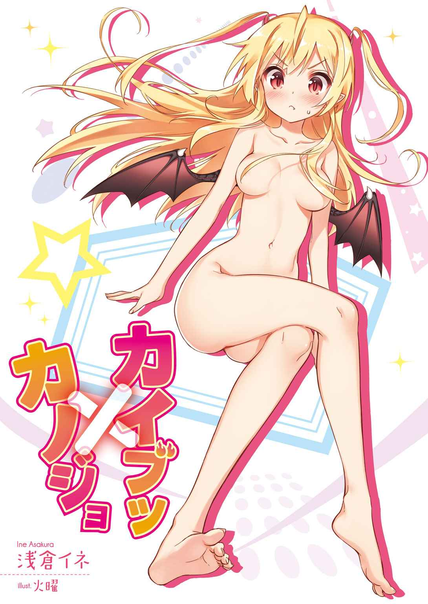
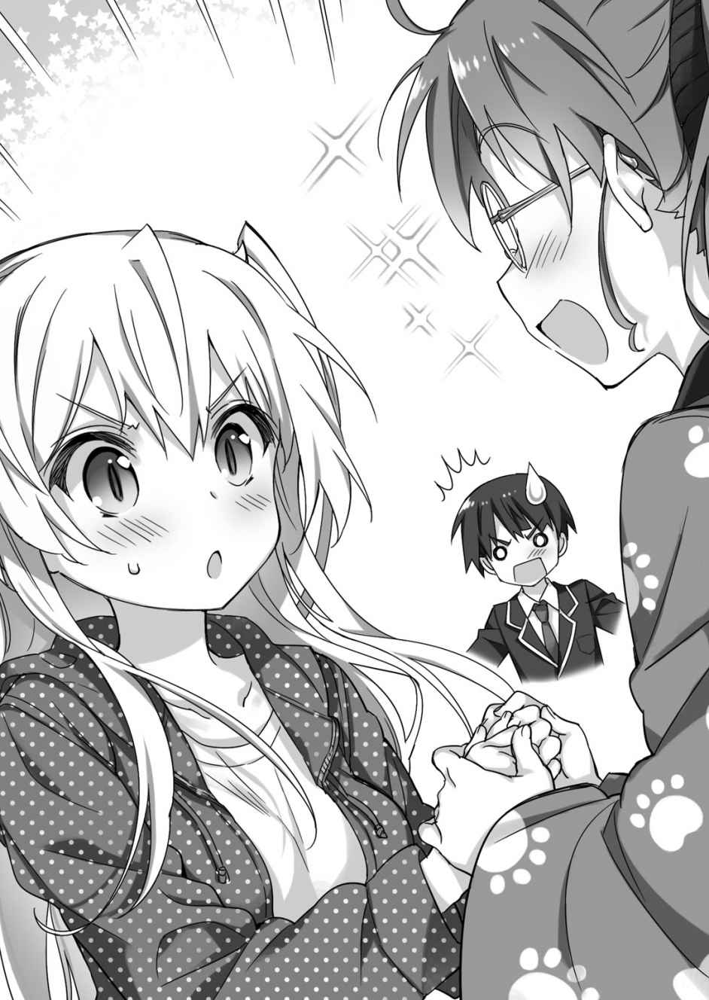

| カイブツ×カノジョ (講談社ラノベ文庫) | |
| 浅倉イネ | |
| (2014) | |
本作品は、縦書き表示での閲覧を推奨いたします。横書き表示にした際には、表示が一部くずれる恐れがあります。
また、画面が小さい端末の場合、文字サイズの拡大等により稀に体裁に違和感が生じることがあります。その際は、通常の文字サイズにお戻しのうえお読みください。

イラスト／火曜
デザイン／ＡＦＴＥＲＧＬＯＷ
プロローグ
空から、何かが落ちてきた。
僕はいつもの帰り道の風景で、『それ』を目撃してしまった。
「......う、そだろ......？」
全長、二十メートルを超えるかという巨大な体。
全体的に黒くて、影でもまとっているような禍々しい怪物のシルエットは──雲を突き破り、彗星のように山に向けて消えていった。
トカゲを、そのまま大きくしたような頭。
背中には、片側だけでも六メートルを超えるかという雄大な翼が広がっていた。
しかし、その翼を動かすこともなく、怪物は、ただだらりと意識をなくしたように、地面に向かって落下していく。
その体が、僕の『いつもの帰宅風景』に吸い込まれていった後──。
一呼吸分遅れて、地響きが山を揺らした。
「......っ、」
ビリビリと、僕の足に振動が伝ってくる。
でかい。
その重みを受け止めた山の震えだけで、怪物の大きさが分かるような気がした。感じたこともない謎の震えが、足から体へと上ってきて──鳥肌が伝うように心臓を揺さぶってきた。
なんだ......？
いったい、何が起こった？
僕が停止した体を動かすまで、たっぷり五分はかかったような気がする。気がするだけで、もしかすると数秒だったのか。
とにかく僕は、その怪物が消えた方向を見つめた。
あの、いつもの帰り道の山で──暮れゆく夕日を背景にする、その場所を。
現実か非現実か。
それすらも曖昧な光景が、目に焼きついていた。
気がつけば僕は、山道を登って『その場所』に近づいていた。
景色が開け、明るくなった視界には、夕焼け色に染め上げられた稲穂。
眩しくて、思わず目を閉じようとする僕の視界に飛び込んできたのは──
一人の、女の子だった。
「......え......」
僕の中の、時が止まる。
稲穂が、風にさやさやと揺れていた。
さっきの怪物は消えていた。
しかし、稲穂をごっそりと倒した光景は、確かに巨大な何かがここに落下したことを物語るものだった。ミステリーサークルの中央に、意識を失った女の子が眠っている。
桃色の唇に、小ぶりな顔。
人形みたいに端整な顔立ちをした彼女は、日本人にはない、西洋の匂いを感じさせていた。夕日にキラキラと輝く髪は、神々しさすら感じてしまうほどの金の色。神話や物語から抜け出してきてしまったかのような美しい姿に、僕は吸い込まれそうだった。
その透きとおるような白い肌には、なぜか服がなく。
生まれたままの姿をした彼女の背中には、コウモリのような──骨筋張った『黒い羽』が生えていた。
一章
１
九月二十日。水曜日。
天気は晴れ。
この日も、朝から平凡なことが続いていた。
ここに引っ越してきてから、六ヵ月。
学校に行って、それから下校して。そんな生活をひたすら送ってきた僕──北上景は、この日も一人で昇降口を出た。
まことに、普段通りの日常。
未だに一緒に帰るような友達はいなかったけど、決してクラスで嫌われているわけではない。ただ、何度か話す人はいても、一緒に帰るほどの親しい人間関係が作れていないだけだ。
だからというわけではないが、自宅に直行で帰るのもなんだか負けた気がするので、僕はいつもの本屋さんに寄り道した。これもある意味での敗北ルートなのかもしれないが、そこは気にしないことにする。
帰り道から少し外れた場所にある、昔ながらの落ち着いた雰囲気の本屋さん。僕は店に入ってから本を読みふけり、気がついたら窓ガラスの外の夕日が傾いてしまっていた。
携帯の時計を見ると、もう時間は六時を過ぎている。
最近は、日が傾くのが早い。僕は読んでいた本を慌てて棚に戻すと、店を出て、綺麗な夕日が浮かぶ町の景色を後にした。
「......ちょっと、長居しすぎたかな......」
僕は、不安を声にする。
この町に引っ越してきた僕は、叔母さんの家に住まわせてもらっている。扱いは居候みたいなものだったけど、あんまり遅くなって叔母さんに心配をかけたくない。
僕は帰り道を急いだ。
家は、町を出て、田園と山の風景を見ながら登った先にある。
車で十数分。徒歩だと四十分以上もかかる山の上で、住宅地の景観を一望できる立地にあった。
引っ越した最初のうちは『こんな家に住めるのか』と喜んでいたけど、そのうち学校までの距離の長さと、暗くなったら不気味な森の家と化してしまう事実に気づき、ものすごく微妙な気持ちになった。
で、そんな家を『土地代が安かったし、ロマンチックだから』という理由で買い取った叔母さんにも少し問題があって......。
僕があんまり遅くなりたくないと思っているのも、叔母さんに余計な口実を与えたくないからだった。ともかく、帰り道は急がなければならない。
と。
「......、おぉ」
僕は、夕暮れの空を見上げた。
山の景色の上に浮かぶ、秋のいわし雲。
夕暮れに赤く染まった雲と、空の紺色が合わさって独特のグラデーションになっていた。一番星も光っていて、この時間だけ見られる神秘的な光景になっている。
煩雑に頭を支配していたものが、すっきりと洗い流される気持ち。
一日が終わる。
それだけを感じた僕は、何だかんだで、この『平凡』も悪くないなと思った。とても地味で平和な生活だけど、波瀾に満ちた人生を歩んでいくような気持ちはさらさらない。
この夕焼けもいいな、と。
空を見上げていた僕の目の前で、その至福の『景色』が破られることになる。
九月二十日。夕方の六時三十分。
僕は、空から降ってくる『怪物』を見た。
２
「......はぁっ。はぁ」
僕は、息を荒くして山道を走っていた。
すごく、胸が苦しい。
なんでだ。
なんでだよ......！ と、思う。
つい、数十分前までは、僕は普通に学校の帰り道を歩いていたのに帰宅前になってから、あんな光景に遭遇してしまった。
腕には、ずっしりとした重みがある。
腕の中にいるのは、瞳を閉じた一人の女の子だった。
細くて流麗な髪が、僕の腕からこぼれ落ちていた。こうして手に持っていなければ、本当に存在するのかと疑ってしまう、神様が与えた完璧な造形。
頰には豊かさはなく、無駄のない顎のラインが顔全体を引き締めていた。歳は近いように思えたが、正確な年齢が予想できない。
とにかく、僕は彼女を抱えて山道を走っていた。
何も身につけていなかった彼女に、僕は制服の上着を着せていた。温もりのある肌を、低くなってくる気温から守るため。あと、単純に男としての義務な気がしたから。
山道に浮かんでいた日は、とっくに沈んでいる。
夜の暗さに包まれた山道を、僕はぽつぽつと浮かぶ街灯の光に導かれながら走っていた。町の明るさから考えると頼りない光でも、こうして真っ暗な山道を照らすのには心強い。
どれくらい、そうして走っただろうか。
気がついたときには、僕は山道を抜けて自分の暮らす家へと出ていた。
町から少し離れた、人家。
時代から取り残されたような大正テイストな洋館が、目の前に現れた。
明るかったら雰囲気もあって綺麗なのだが、夜になると別の意味で凄みが出てしまう。趣味が悪いとしか表現のしようがなく、僕の『平凡』の中で、唯一の異様さとなる建物だった。
地元の人たちからは絶対に『魔女の館』とかいわれているだろう家の敷地。そこに僕は入った。
大げさな飾りの扉を開けて、玄関に少女を下ろす。
──重かった。
それが、感想の一つ。
そしてもう一つは──。
「......なんなんだ。この子......」
彼女は、か細く呼吸を繰り返していた。
白い雪を溶かしたような、透明感のある肌の色。息をつくのもためらってしまう容姿は、本当にどこかの王宮で育ったお姫様のような気品に包まれていた。
ただ、問題なのは......。
「この、羽か」
僕は、黒い光沢を持った羽を見つめる。
なんなんだ。これは......？
飾り物でも、作られたものでもない。むしろ質感から見て明らかに本物と分かる。制服の余った首元からはみ出したそれは、窮屈そうにしながらも、彼女の呼吸に合わせて緩やかに動いていた。
まるで、見たことのない神聖な生き物が眠っているようだった。
「......触って、みようか......？」
僕は、魔が差した。
試しに手を伸ばしてみると、その質感はつるつるとしていて、不思議な張りと温かみがあった。この気持ちのいい感触を表現するなら、猫の肉球だろうか。
僕がそうやって手を動かしていると、彼女が「んぅ」と気持ち悪そうに体をよじらせた。
僕は、ギクッと手を離す。
......そういえば。
どうして僕は、この女の子を家まで運んできたんだろう......？
それも人目を避けるように、コソコソと夜に紛れながら。
別に後ろめたいことをしたわけじゃなく、ただ本当に『隠さなきゃ』と思って体が動いていた。何も服を着ていなかった彼女に制服の上着を着せて、ただ夢中で家まで運んできた。
どうして......？
背中に、人のものじゃない羽が生えていたから？
それとも、夕暮れの空から降ってきた怪物のシルエットが、この子と何か関係がありそうだったから？
よく分からない。
でも、なんだか放っておいたら、この子にとってよくないことが起こりそうな予感があったからだろうか。見捨てて逃げられなかった、というのが正しいのかもしれない。
と、
「............ん......」
目を閉じていた少女が、低く呻いた。
もしかして、意識が戻ったのか。
身を乗り出した僕に、彼女は薄く目を開いた。
何年も眠りについていたお姫様が呪いから解放されるような──バラの花が開く目覚め。少し大げさかもしれなかったが、彼女の姿はそんな印象を持ってしまうほど綺麗だった。
開いた瞳に浮かぶ色は、特徴的な赤。深紅の瞳が僕を見上げてきた。
「......貴様、」
「え？」
なんか、思ってたような言葉じゃない。
普通、こういうときって「ここは......？」とかいいながら、キョロキョロ周りを見渡すものじゃないかな。怯えながら。
目を開いた彼女は、どちらかというと堂々としていた。
僕に少しも怯むことなく、真っ直ぐに見つめてきて、
「人の子か？」
「へ？ あ、うん。一応、人間だけど」
人の子って、たぶん『人間』ってことでよかったんだよな......？ と頭の中で置き換えながら答える。
すると、彼女は警戒した目で、
「どこの人の子だ。村か？ それとも、町の者か？ この私を捕まえてどうするつもりだ。あの魔術師たちに突き出すつもりか？」
「え？ つ、突き出す？」
意味が分からない。魔術師......？
呆気にとられる僕に、彼女は正面から厳しい目を向けてきていた。顔には、さっきまでなかった不思議な威厳のようなものが宿っている。
「私は、捕まらん」
彼女は、上体を起こした。
「そうであろう？ 神代の血を引く貴き私が、人なぞの手によって囚われてなるものか。その前に、貴様もろとも......」
「ちょ、ちょっと落ち着いてよ!? 何をいってるかよく分からないけど、僕は何も」
「（──ガブッ）」
い......。
痛っっってぇぇぇ!?
ちょっと待って!? なに!?
この子、僕の手を嚙んできたんだけど!?
ぶんぶんっと、腕を振っても、しっかりと嚙みついた彼女は離れない。もう片方の手でおでこを押さえて、強引に引きはがそうとしたけど、それでもワニみたいに嚙みついてきた彼女は離れなくて──。
結局、僕はチョップを脳天めがけて叩き込むしかなかった。
くらっと彼女が目眩を起こして、僕の手から離れる。
とっさに手をかばうと、そこには小さな歯形がくっきりと残っていた。ズキズキする痛みを感じる。
彼女は、頭を手でさすりながら、
「............私を、ぶったな？ この私を」
「それはこっちのセリフ！ 痛ったいよ。本当に痛いよ！ なんでいきなり嚙みつかれなくちゃいけないの!? オカシイでしょ!?」
「フン。この私を売ろうとした報いだ」
「だから、売るとか捕まえるとか、わけが分からないんだって!! さっきから何をいってるんだよ。まったく話についていけてないんだけど!?」
僕は手の痛みもあって、詰め寄った。
すると、彼女は『何を白々しい』みたいに鼻を鳴らしてから、
「人の子は、本当にウソが得意だな......。私を知らない者がいるはずないだろう。大陸で最も強い生物として君臨し、ひとたび飛べば羽音だけで人々が恐怖する。この『竜』の私を──」
「りゅ。りゅう......？」
僕は、後ずさってしまっていた。
だって、そうだろう。目が覚めた女の子が、自分が暮らしている自宅の玄関先でそんなことをいい出したら、誰だって引くはずだ。
でも。
僕が驚いたのは、そういうことじゃない。
──まさか。
そう。胸に予感はあった。
頭に浮かぶのは、あの夕暮れの空から降ってくる『怪物』のシルエット。それが消えた場所には、入れ替わるようにして気を失った彼女がいた。
まさか。
そう思う。だって、人の姿をしているだろう。
でも、背中にあった羽──僕が深く考えないようにしていたものが、今も僕の目の前にある。考えないように思考を止めていたのは、その恐ろしい『繫がり』を予想したくなかったからだ。
「私は──。いや、我は伝説の『竜』なり」
彼女は、立ち上がった。
着せていた服が、ストンと床に落ちる。それで彼女は何も身につけていない体になるのだが、特に気にする様子もなく、僕に向けて静かに歩み寄ってきた。
まるで、服を着ていないのが当然のように。
そもそも、自分が服を身につけるような存在ではないことを示すように。
「......き、君は......」
玄関のドアに背中をぶつけた僕は、声をうわずらせてしまった。
「『君』ではない。私は、世界を創造した神の末裔にして──偉大なる黒竜だ」
彼女の赤い瞳が、僕のことを見下ろした。
冷たい表情は、とても友好的と思えるようなものじゃなかった。
どちらかというと、敵を見るような目。
暗くて肌寒くなるオーラが、玄関を支配していた。
「貴様ら人の子は『竜』が怖いのだろう？ だから徒党を組んで、私を追いやるために攻撃をしかけてきた。お前たちの仲間......王宮魔術師といったか？ ヤツは私の力を封印し、別世界に転移するつもりだったらしいが......。どうやら失敗したようだな」
「な、何を......」
「私は、こうして『人』の目の前にいる」
敵意たっぷりに、彼女が僕にいい放った。
一糸まとわぬ姿で。
ど、どうしよう......？
状況がますます分からない。
彼女は何だ？ 本当に空から落ちてきた『アレ』なのか？
頭が混乱して、思考がまとまらなかった。
「に、人間じゃないのか......？」
「何をバカな。私の『姿』を見てみろ。どこをどう見ても、漆黒の翼が目印の黒竜ではないか」
「............」
「知能の高い高貴な竜は、人のような賤しい種族の言葉も理解できる。私が話したところで、人の子と結びつけられる要素など何も......」
と。
ここで彼女は、ふと気になったように僕を見て、
「ん？ そういえば。貴様ずいぶんとでかいな。人の身で、どれほどの背丈がある？ この私でさえ、地に降り立ったときは人家とそう変わらぬ縮尺であるのに」
「............」
「んー？ そういえば、この家も大きいな。私は人の暮らすような場所に立ち入ったことがないが、これが人の家か。山のような大きさがあるぞ」
「............」
「それに、何やら空気が肌に透きとおるような──」
彼女は、視線を真下に落とした。
ついでに手を胸に当てたので、たゆんと、男にとって目の毒でしかないカタマリが揺れ動く。その光景にびっくりしたのは、他ならぬ彼女自身で──。
「な......」
絶句。
みるみるうちに、顔に驚きを広げていく。
「な、なんだ......。何だこれは!? 何なのだこれは──!?」
叫び声が、家の中に広がった。
がしっと、僕のシャツを乱暴につかみ上げると、
「ひ、人の子!! 何なのだこれは!?」
「いだだだだだ......ッ!! し、知らないよ!!」
「知らないことがあるか！ 貴様は、今までこの姿の私と会話し、そして自然に受け答えしていたではないか!?」
「だ、だから最初から『その姿』だったんだって！ 僕が山で見つけたときから、ここに運んでくるまでずっと！ というか、そろそろ放してよ。息が苦しい......！」
それに、体がぶにっと僕に押しつけられている。
柔らかくて、温かい──なんて考えている場合じゃないのは百も承知だけど。それでも男の本能が、その柔らかさを感じとってしまっていた。
彼女は、僕を下ろしてから、
「し......信じられん。どういうことだ？ まさか、魔術師の封印が成功したとでもいうのか......？」
視点の定まらない目で、呆然と呟いていた。
容姿だけ見れば、どこかの国のお姫様が嘆いているみたいだった。あと、きちんと服さえ着ていれば。
「わ。私は、『人の子』に......？」
と、彼女がそこまでいったとき。
廊下の先からパタパタとスリッパの足音が近づいてきて、角からひょっこりと顔を出す人がいた。『ひょっこり』と表現するには、かなり歳も体も成長しきっていたが。
「......あれ？ 景ちゃん？」
ビクッと、僕の肩が揺れる。
のぞいてきたのは──ハンテンに丸眼鏡といった、冬の受験生をイメージさせる格好の女性だった。
この魔女の家みたいな洋館の持ち主にして、僕がお世話になっている叔母さん。
その人は、玄関で尻もちをつく僕と、なぜか全裸で、しかも背中にコウモリみたいな羽のある少女。そして、何やら微妙な雰囲気をジーッと見つめてから、しばらく考えて、
「......修羅場かな？」
「......違います」
ピントのズレた問いに、僕は力なく返した。
３
洋館のリビングは、普通の家と変わらなかった。
木肌のフローリングがあって、テーブルがあって、キッチンがある。外から見ると魔女の館でも、中は普通に生活ができるよう間取りがされていた。
この家の主である叔母さん──北上実典という人。父さんとは少し歳の離れた兄妹──は、まず道具から揃える人だった。
あまり家事ができる人じゃないのに、『そのうち、すごい料理を作るから』といいつつ揃えた調理器具。棚には、名前も分からないような海外のスパイスが並んでいて、どれも当然のように未開封だった。
僕たちは、そのテーブルについて顔を突き合わせていた。
ほのかに漂うコーヒーの香り。叔母さんが人数分淹れてくれたものだ。
「......竜？」
「そうだ。竜だ」
首を傾げる叔母さんに、少女は頷いた。
「私は、ここより遥か遠い土地から来たようだ。まだ神話が息づき、魔術が研究され、神への信仰も盛んな大陸だ。そこでは、私という高貴な『竜』が当たり前に存在していた」
「ちょ、ちょっと待って」
僕は、手を上げて遮った。
話の初っぱなから、頭がついていけなかった。
「そんな場所、僕は知らないんだけど......」
「だから、こうして教えているだろう。お前たち愚昧な人の子にも分かるように」
少女は睨んでくる。
さっきまで裸の上から制服だけという、極めて危険なスタイルをしていた彼女だが──。今は叔母さんから服を借りて、まともな普段着になっている。
竜、とは名乗っているが。
その印象はやっぱり西洋のお姫様みたいで、キラキラと輝く不思議な髪は金色の光を放っていた。わりと地味な叔母さんのパーカなのに、これほど似合ってしまうのはどういうことだろう。
彼女は、自分の白い手を見つめながら、
「話せば、とにかく長くなるのだが──。私は、『人の子』たちと対立していた。どちらが悪いではなく、お互いに生存する上で、その存在がどうしても邪魔になっていたのだ」
「存在が、邪魔......？」
「『竜』と『人』は、相容れない。子供でも知っている基本的なことだ」
......やっぱり、分からない。
彼女がいっていることを理解するには、あまりにも分厚い壁があるような気がした。
そもそも、彼女がいっている土地はどこだ？
僕たちにとって知らない土地。
それは、もしかしたらまったく別の、何もかもが違っている世界なのかもしれなかった。僕なんかが想像もつかないような、まったく異なった世界がどこかに存在しているとか。
これが別の人だったら、僕の考えなんて笑い飛ばしてしまうかもしれない。
変なことを思っているなんて、自分でも分かってる。
でも、僕は──。
あの夕暮れの空から落ちてきた、怪物のシルエットを見てしまったから──。
「......どうして、落ちてきたの？」
僕は、思い切って聞いてみた。
この少女に関して何が一番の疑問かというと、やっぱり空から出てきた『あの光景』だった。
「私も、あまり詳しいことは覚えていないのだが」
彼女は、自分でも思い出すように、
「人間の中の、高位の魔術師──。アレは王宮魔術師とかいったか。その『竜』を討伐しにきた魔術師の一団と、私は戦った」
「ま、魔術師の一団......？」
「なかなかに、難敵だったぞ？」
なぜか渡り合ったことを、ちょっと自慢するようだった。背中の黒い羽が『パタパタ』と揺れているのは、得意な感情の表れなのか。
「人の魔術は、まるで長弓や石弓を撃つように私に向けて雨のように降り注いできた。私とて、そんな小細工に負けてはいない。百戦錬磨の魔術師たちを相手に大立ち回りを繰り広げ、こう──接近してくる者どもをちぎっては投げ、ちぎっては投げ──」
「......あの、」
「む。なんだ」
「せっかく気持ちよく話してるとこ申し訳ないけど......それで、どうなったの？」
長い話に口を挟んだ僕に、彼女は「むうぅ」と残念そうに息をついて、
「いや。とにかく、相手の数が多かった。私が何度目になるか分からない攻撃の波をしのいだ後に──魔術師から何か小細工をされた。妖しく光る杖を向けられた瞬間、私の中にある『竜の力』が抑えつけられる感覚を抱いた。おそらく、あれは封印の魔術だと思うのだが......」
それから、意識が暗転。
彼女は、気がついたらこの世界の空から落ちてきていたと話した。
「ど、どうして空から......？」
「知らん。私に聞くな」
ムッツリと怒った表情で答える。
どうやら、彼女は自分でも分からないことを聞かれるのが嫌いらしい。
「ともかく、私は人という生物が嫌いだ。昔からそうだった。自分たちの利益で動き、勝手に土地を広げ、美しかった自然を破壊していく。今も私が『竜』の姿を保っていたなら、お前たちなど一瞬で嚙みつぶしていた」
「そ、そんな物騒な......」
金髪の美少女から睨みつけられる。
これで、中身が二十メートルを超えるかという巨大な生物なんて、とても信じられない。目にも険悪さが宿っていて、パーカから出ている黒い羽が警戒するようにピンと逆立っている。
と、
「──。ちょっと、聞いてもいいかしら？」
今まで黙っていた叔母さんが、少女に挙手する。
牛乳瓶の底みたいな丸眼鏡で見つめられて、彼女は眉を寄せながら、
「......なんだ？ 人の子」
「お名前は、なんていうの？」
意外な問いかけだった。
僕も彼女も、目を丸くする。
「名前だと......？」
「ええ。叔母さん、あんまり難しいことは分からないけど。でも、人間だったら誰しも名前があるみたいに、あなたにも名前があると思うの。だから、まずは名前を聞いておきたいなぁ。って」
おっとりとした声だった。
この叔母さん独特のマイペースさというか。場の緊張を無視した問いかけに少女は面食らって、
「私は、黒竜・キリア──という。人の子に問われたのも、名乗ったのも初めてだが」
「......そう。うん。キリアちゃん」
何やら、うつむきながら。
叔母さんは、丸眼鏡をかけた顔でブツブツと呟いている。
分厚い眼鏡のせいで表情は読めなかったが、何かを納得するようにしきりと頷いていた。
それから、バッと顔を上げて、
「──すっごく、イイ!!」
......。
............へ？
あまりの突然のことに、僕と彼女──キリアは、呆然と口を開く。
叔母さんは、両手で少女の手を握りしめて、
「何この子!? すっごいテンション上がるぅ!! 竜属性の女の子って、どこのケモナー御用達の少女かしら!? 背中に生えた羽も、とってもとってもキュートでポイントが高いし」
キラキラと輝く笑顔で、キリアのことを食い入るように見つめていた。
な......。
何という、欲にまみれた笑顔......。

今まで大人しくしていた叔母さんは、堰を切ったようにしゃべり出して、
「ねぇ。ねぇ、背中の羽って、どうなってるの？ もっとこう、いろんな風に動かせない!? こう、わんちゃんが尻尾を振るみたいに。肌もスベスベよ。この赤ちゃんみたいなモチ肌、本当に竜なの!?」
「......な、にを......」
少女が、口をぱくぱくとさせている。
うまく言葉になっていない。というか、言葉にできないのが正しいのか。
叔母さんは、いっそう身を乗り出しながら、
「これで八重歯が生えてたら完璧よぉ。どう？ お口の中、チェックしてもいいかしら!? 漫画でも見かけないわ。こんな美少女の、お口の中をチェックする機会なんて──」
「あ。う......。や、やめ。やめ......。やめろ人の子......」
「ヤベェ恥ずかしがってる。鼻血出そう......。ハァ。ハァ」
「──やめろと。いっているではないか──ッッ!!」
ガブッ。
彼女の手が、叔母さんの手に勢いよく嚙みついた。どうやら、叔母さんの行動が彼女の逆鱗にふれたらしい。
「きゃあああああっっ!! 痛ぁぁぁい!!」
「なんで喜んでるのこの人──!?」
歓喜の声を上げる叔母さんに、僕も悲鳴を上げる。
メチャクチャだ。
もう、本当にメチャクチャだ。
というか、叔母さんってこういう人だったの......!? うすうす変わっている人だとは思ってたけど、ここまでとは思わなかった。
丸眼鏡の奥でゾクゾクしている叔母さんの向こうで、まだ竜の少女は手に嚙みついている。
きっと、本能がそうさせるんだろうけど。このままだと叔母さんが危険だと思って、僕は彼女を引き離した。
ゼェゼェと彼女が息を整える頃になって、ようやくリビングは落ち着きを取り戻した。
「こ、この......っ。不遜な人の子が......！ たわけが。愚か者が。痴れ者が......!!」
「お、落ち着いて。気持ちは分かるけど、落ち着いて......!!」
睨みつける少女に、僕は呼びかける。
叔母さんは、まだ恍惚とした表情だったけど。この際、それは無視しといて、
「でも。どうするの？ これから。空から落ちてきたけど、元の世界には戻れないの？」
「......。そうだな。忌々しいが......私は、あの魔術師の『封印』によって、元の世界から追放されたらしい」
乱れた髪のまま、彼女は顔を歪めていた。
あんまり現実味のない話に思えたけど。彼女の悔しそうな表情だけは本物だった。
「それに今は、『竜の力』を失っている。体から湧き上がってくる力を感じないし、元の姿に戻ることはできないだろう」
「人間だよね。見た目は完全に。最初に見たときからそうだったけど」
キリアの言葉に、僕も頷く。
だったら、この少女は......。この世界で生きていくしかないのか。
どうするんだ、と思った。
彼女はこの世界で一人ぼっちじゃないのか。
「うふ。うふふふふ......」
と。
僕たちが顔を突き合わせるテーブルの向こう側から、そんな不気味な声がした。
叔母さんだ。
大人しくなっていた叔母さんが、竜の少女のわずかな困ったオーラを見逃さなかった。
「帰る場所がないのね。キリアちゃん......」
「............」
──その通り。だが、それをいいたくない微妙な表情を彼女はしていた。
叔母さんは、ずいっと詰め寄って、
「いいわ、いいわ。大丈夫。あなたが見知らぬ土地に迷い込んで困ってたとしても、人間嫌いの属性を持っていたとしても！ きちんと迎え入れてくれる場所が、世の中に一つだけあるのです！」
叔母さんはウェルカムといった感じに片手を広げて。
しかし、その口調だけは獲物を搦めとるクモのごとくネットを張っていた。
「広くてロマンチックな洋館！ 三食の温かいご飯！ ベッドのついた個室っ！ こんな素敵な条件で、あなたを歓迎してくれる場所に住みたいと思わない？」
「お、叔母さん......」
僕は、慌てた。
叔母さんが考えているプランが、分かってしまったからだ。
そんな僕の肩に手を回して、叔母さんは、
「しかも。今ならオマケとして、あなたの面倒を見てくれる専属の『召使いくん』までついてくるわ。お得なプランよね？ やっぱり、高貴な竜であるからには、一度くらい人間を『しもべ』として従えてみたいでしょう？」
「......！」
ドキッと。
竜の少女は、そこで不意を突かれたみたいに顔を動かした。
え......？ ちょ、ちょっと待って。
なんで心を動かされたみたいになってるの？ こんなの、叔母さんの口車でしょ？
「どう？ キリアちゃん。人間が嫌いなら、このひっそりとした山の中にある『洋館』こそ生活するのにふさわしいと思わない？ ついでにお姉さんの絵のモデルになるとか、そういうプランもあったり、なかったりして......ウヘヘ」
サラッと本音もまぜる叔母さんを前に、少女は、
「わ。私は......」
マズい。
ものすごく動揺している。
通販番組で、電話をかける一歩手前みたいな。ぐらぐらと揺れ動く心が、僕の目にもはっきり分かってしまった。
そして、彼女はついに、
「......ひ。人の子の暮らしぶりを見てみるのも、悪くはない......かもしれないな」
そう、決めた。
決めてしまった。
それが、僕の穏やかなる日常が砕け散った──最初の瞬間だった。
二章
１
翌日の朝は、ちょっと肌寒かった。
この町に引っ越してきたのが、桜も咲く四月の初め。
通うことになった学校の事情だったけど、思えばこの生活に馴染むのもあっという間だった気がする。秋だ食欲だ芸術だ、なんていっているうちにすぐにでもストーブの暖かい時期に入るのだろうか。
「......ふぁっ」
僕は、あくびする。
久々に、目覚ましのアラームより先に目が覚めてしまった。
枕元にセットしてあるタイマーを切って、モゾモゾと布団から起き出す。
まだ、少し気だるい感覚が体に残っていた。
前日の疲れだろうか。
どうして体に疲労感が残っているのか、寝起きの僕の頭ははっきりしなかった。何か、大事なことを忘れている気がする......。でも、それは何だっけ。朝ご飯を食べるまでに思い出せることなのだろうか。
僕はあくびを嚙みつぶしながら、部屋を出る。
「叔母さーん。起きてください」
向かったのは、叔母さんの部屋だった。
叔母さんの自室──アトリエに改装されたそのスペースのドアを薄く開くと、真ん中に立つ油絵と木製の三脚が見える。
確か、『イーゼル』とかいってたっけ。あの道具。
何度も個展が開催されている叔母さんの絵は、『その手の業界』ではなかなか高い注目を集めているらしい。僕にはあんまり詳しいことは分からなかったけど、その仕事ぶりについて僕の父さんは『あれは、昔から子供を大きくしたようなものだからな』とだけコメントを残していた。どうやら、『子供が持つような純粋な感性をずっと維持してきたから』という意味らしいけど、それが褒め言葉なのか、それとも皮肉を含んでいたのかは僕には分からなかった。
けど、このザ・アトリエって感じの散らかった部屋と画材道具を見ると、叔母さんが何となくすごい人に見えるから不思議だった。
見慣れた光景の奥には、画材道具に埋もれながら、毛布にくるまったミノムシ......ならぬ、人が倒れていた。
寝てるだけだけど。
「叔母さん、叔母さん。朝ですよ。起きてください」
ゆさゆさと揺すりながら、声をかける。
本当に僕よりも一回り以上も年上なのか、と疑いたくなるほど性格も容姿もあどけない人は、毛布の中でもそもそと縮こまった後に、しばらく動きを停止。それからたっぷり一分間だけ考えるように間をおいてから、バッと高速で五本指を立ててきた。
............なるほど。あと『五分』寝かせろってことか。
サインを感じとった僕は「失礼しました」とだけ挨拶して、部屋を出た。
あの様子だと、昨夜は遅くまで筆を動かしてたのかな......。
そう思いながら部屋を出た僕は、
「......うわっ!?」
廊下の先の、開いたドアのところにもう一つのミノムシを発見する。
その子は。
叔母さんに借りたらしい、寝間着──そのパジャマの背中から黒い羽を出している、金色の髪の子だった。うつぶせになりながら瞳を閉じているところを見るに、どうも眠っているらしい。
穏やかな寝息に合わせて、その黒い翼がゆっくりと羽ばたくように動いていた。
「............」
び、びっくりした......。
というか、枕を抱える彼女の姿を見て思い出した。
そういえば昨日、この家に『竜』を名乗る女の子が住むことになったんだ......。
彼女が泊まっているのは、この洋館で客間として用意されていた一室。
どうせお客さんなんて来ないし、広いだけの空間だ。叔母さんが『道具だけ客室っぽく揃えてみた』という寝具を使えば、十分に女の子の部屋ぐらいは用意することができた。
で、昨夜はそこに寝てもらったんだけど......。
この子、部屋のベッドからここまで転がってきたのだろうか？
だとしたら、どんな寝相の悪さだ。
「............」
僕は、そっと。
廊下を歩いていって、その子に近づいてみた。
小さな「すぅすぅ」という寝息。
寝顔は──なんていうか。
無垢で、透きとおっていて。
僕は他の女の子の寝顔を近くで見たことないけど、こんなに綺麗なものなのか──と驚いてしまった。
昨日とはまた違った、神秘的な眠り。
朝の光に安らぐ表情は、まるで教会のステンドグラスに描かれている聖母のようだった。神々しくて、それでいて柔らかな──つい、指で突いてみたくなる寝顔だ。
「............」
「うふ。んふふふ......」
と。
僕の前で、彼女が急に笑みをもらした。
どうやら、楽しい夢を見ているらしい。
「愚かな人の子よ......王宮の魔術師どもよ......。うふ、どうだ。参ったか？ 参っただろう？ この私の最強さにひれ伏すがよい......。そう、もっと頭を低く......。地面にめり込むほどに......ふふ。そうだ」
口元をほころばせて、よだれも垂らしそうな幸せな顔になっている。
いったい、どんな夢を見てるんだろう......？
うわごとの内容が、すごく不気味だった。
「......うふ。馳走か。ん。そうかそうか。宴か。お前たちがどうしてもというなら......ん。食べて、やらないことも......もぐ。もぐ」
「ちょっと。それ枕だから」
寝ぼけながら嚙みついていたので、僕は枕を引っ張る。
彼女が動くたびに、甘い香水みたいな『女の子』の匂いがしたけど......。動きはまるっきり動物みたいだった。
僕がそうやって引いていると、
「ん。なんだ、ここにも......あるでは、ないか」
がしっと。
僕が伸ばした腕を、彼女が白い手でつかんできた。
「は？ へ？ ちょっと？」
「んふふ。捕まえたぞ」
甘えるように、彼女は抱きついてくる。
たゆん、と感じる肉の感触。
昨日は焦りもあって、あんまり意識はしてなかったけど......こうして体をくっつけられると、彼女が細身のわりに肉付きのいい......むっちりとした体つきをしていることが分かってしまった。
胸元の温かいマシュマロみたいな感触が、僕をギュウウウと柔らかく締めつけてくる。
「は、放してってば」
「んぅ。逃がさないぞ。お前は、私だけのものだ」
すりすり。
彼女はお気に入りの人形にそうするがごとく、僕に頰をすりつけてきた。ぷにっとした頰の感触が、赤ん坊のように柔らかくて温かい。
それから、彼女は声のトーンを落として、
「......そう。この私だけの......美味い、『肉』だ」
彼女がいった直後。
あんぐりと。
ヘビが食べものを丸吞みするみたいに。小さな八重歯と、白い歯の生えそろった口が開いた。
「え。じょ、冗談でしょ......？」
「──いただきます」
静かな洋館の朝に、僕の悲鳴が響き渡った。
２
朝の食卓。
「ハーイ。ぐっもーにん。えぶりわん！」
予告通り遅れて入ってきた叔母さんに、僕とキリアはドンヨリとした目を向けた。
お互いにテーブルについて、徹夜明けみたいなしんどそうな顔でパンをかじる。
「あらま？ どうしたの、二人とも？ 朝っぱらから負のオーラを漂わせちゃって」
「知らん。いきなり殴られた」
「......僕が悪いのかよ？」
不思議そうな顔をする叔母さんに、キリア、そして僕が答える。
キリアは、もう元の、ぶすっとした表情だ。
さっきまでの『女の子』の顔がウソのように、今はただの仏頂面で、僕が教えた通りにパンにかじりついている。
「考えてもみろ。私は、朝に目が覚めるといきなりお前に叩かれていたのだぞ？ この高貴な竜である私が......もぐ。うん。この食べものは美味いな。......自分が何をしたのか分かっているのか？」
「知らないよ。というか、しゃべるなら口の中のものを飲み込んでからにしてよ」
「いちいちうるさいから人は嫌いだ」
そんなことをいうキリアは、自分が何をしたのか覚えていないようだった。
僕は腕を見せながら、
「そもそも、先に嚙みついてきたのはそっちだろ。......ったく、人の腕に痣ができるまで嚙みついて」
まだズキズキと痛みを発する痕に、叔母さんは「あらぁ」と驚いた声を上げた。
まるで、ペットの悪い嚙み癖だ。
中身が竜だからそんな行動をとるのかもしれなかったが、やられる側はたまったものではない。これからは、寝ている彼女にもうかつに近づくことができないじゃないか。
「私は悪くない。私はな。もぐ」
「悪いから、こうやって注意してるんだろ。今後のためにも」
ドンヨリとした視線で応酬する。
叔母さんは、そんな彼女の行動にも明るい顔を向けて、
「うふっ。キリアちゃんも、誰かに嚙みつくのが好きなお年頃だったりするのかにゃぁ？ 景ちゃんはあんな風につれないけど、この実典さんは懐の深ーい人間だから何でもドーンとこい。何でもオールオッケーよ」
「わ、私の頭をなでつけるな。人の子......！」
「ヤベェ迷惑がってる。ハァ。ハァ」
......だめだ。あの人も。
僕は食卓の向こうの景色に呆れて、またパンにかじりつく。
いつもは平凡で静かだったはずの食卓が、ちょっと騒がしく思えた。
決して嬉しい騒がしさではない。
その証拠に、僕の心の中はモヤモヤしていた。
「で？ さっき夢の中でひれ伏させていた『魔術師ども』って、昨日の話にあった人間のこと？」
「......！ お、お前。盗み聞いていたのか......？」
「聞こえたんだよ。人聞きが悪い」
女の子の寝言を聞くなんて、普段が普段ならありえないことだったけど。でも、相手は竜だし、しかも廊下に転がっていたからノーカウントなはずだ。
キリアは、小さな歯形のついたパンに目を落としながら、
「ヤツらは......。あの王宮魔術師どもは、私から『竜の力』を奪った者たちだ。憎い相手でもあるし、それに......ちょっとした因縁もある」
「？ 因縁？」
「ヤツらは、私の同族の竜を何匹も屠って回っているらしい。神代の血を引く私たちを、人に害なすものとしてな。人間たちからは、その功績を謳われて『竜狩りの師団』などと呼ばれる英雄扱いだが」
「りゅう、がり？」
なんだそれ。未知の響きだった。
僕にとって現実味のない『竜』を、さらに『狩る』という行為。
「その『竜狩りの師団』に、この世界に追放されたの？」
「分からない、が。おそらくは」
キリアにも確証はないみたいだった。
「ヤツらが扱う『魔術』が、どれほど進歩しているのかも分からないし......私を遠い世界に飛ばすだけ完成されていたのか、それとも、私にかけようとした『封印』が誤って、そのような結果をもたらしたのか。それは不明だ」
「......。うーん、なるほど」
「だが、ヤツらの術を受けて、私の力が『封印』を受けたらしい。というのは間違いない。その後に飛ばされたのも」
キリアは、深刻そうな顔だった。
円卓会議で国の盛衰を決する──というのに近い気迫を感じられたのだが、その下半分の顔でパンをモグモグと食べているのが、何ともちぐはぐだった。口の周りに、びっしり食べカスをつけているところなんか特に。
「......あの。食べるか話すか。どっちかにしようよ」
「私は、ヤツらの術を解かねばならない」
「............」
「そうしないと本来の『竜』の姿に戻れず。また、元の土地にも戻ることはできないのだから」
どうやら、あまり人の話を聞かない性格らしい。
でも。......まあ、なるほど。
彼女がこの世界に現れた事情は何となく分かった。それが複雑そうだということも。
確かに、この世界に現れた原因がその術だったとしたら、元の状態に戻るためには『封印』というものをなんとかしなくちゃいけないのだろう。そして、それを解除する手がかりになる魔術師は、みんなまとめて向こうの世界にいるらしい。と。
「......なんか、大変そうだね」
「何をのんきなことをいっている。お前も協力するのだ」
「へ？ 協力？」
「昨夜の話を忘れたのか。お前は、この高貴な竜である私のために『しもべ』として働くことになったのだろうが」
ジロリ。と彼女は睨みつけてくる。
まるで、約束と違うぞ。と責めてくる目だった。
「ちょ、ちょっと待って。あれって、話として成立してたの？ というか本気だったの!?」
僕が慌てて叔母さんを見ると、分厚い丸眼鏡の『発案者』は、フレームをくいっと持ち上げて、
「有言実行。男に二言はナシ──よ。景ちゃん」
「叔母さんがいったんでしょ!?」
そんなのゴメンだ。世話を焼くだけならまだしも、今の彼女に捕まったら何をさせられるか分からない。
と、彼女は、
「......んと、どこだったかな。確か、お前たち人の子は、約束をする際に交わす紙があるだろう。誓約の紙の。それを、私は預かっているのだ」
ごそごそと。
パンをくわえた彼女は、自分のパジャマの胸元を開いて──（すごく、目のやり場に困ったけど）──そこから首に下げていた、お守りらしい袋を取り出した。
......？ 何だろう。
昨日までの彼女は、こんなものを持ってなかったし。もしかして叔母さんにもらったのだろうか。
彼女は、その中に入れた一枚の紙を引っ張り出して、
「ほら。これを見ろ。お前たち人の子は、こういう紙を交わして約束事を守るのだろう？ これでお前も私の『しもべ』だ」
「な......。え......？ ちょ、ちょっと何これ!?」
北上景。と、明らかな女字でサインされた誓紙。
ご丁寧に『北上』の印鑑までねつ造されたその紙には、以下のことが書かれていた。
私。北上景は。
その健やかなるときも。病めるときも。
喜びのときも。悲しみのときも。
富めるときも、貧しいときも。
黒竜・キリアを愛し。敬い。
その忠実なる下僕となることを誓います。
西暦〇〇××年。九月二十日。北上景。
「..................叔母さん？」
僕は、紙を握りしめながら振り返る。
分厚い丸眼鏡の『下手人』は、てへっと頭をこづきながら、
「──ゆうべ、徹夜しちゃった☆」
「これのために疲れ切ってたのかよッッ!?」
信じられない。
なんてものをでっち上げてるんだ、この人は。これじゃあまるで、この竜の少女と添い遂げるみたいな書き方ではないか。しかも伴侶ではなく『しもべ』として。
「ううん、だってお姉さん。キリアちゃんが喜ぶ顔も見たかったけど......それ以上に、景ちゃんが困ってる顔も、見てみたかったから......」
「くっ......。こ、この......ッ」
ダメだ。
嫌すぎる。こんな誓約。
僕がわなわなと肩を震わせていると、叔母さんが「ふう」と肩の力を抜いて、
「......あのね。景ちゃん。私だって、いろいろやり過ぎてしまった感はあるけど......でも、もともと『彼女』をうちに連れてきたのは、景ちゃんなのよ？」
「もっともらしいこといってますけど、『それっぽいこと』でまとめに入ろうとしている感じが腹立たしいです」
「そ。じゃあ、キリアちゃんに聞いてみる？」
「......？ キリアに？」
「景ちゃんは、彼女が可愛い子だから連れてきたの？ 従順だったり、性格がいいことを期待して？ 違うでしょう。景ちゃんは、単純に人助けの気持ちで連れてきたはずだもの」
叔母さんが食卓を振り返る。
そこには、僕が捨てた『誓約の紙』を拾い上げて、食べこぼしばかりの『いかにも厄介そうな子』がこちらを見ていた。
「さ。私と景ちゃん、彼女がどちらを望んでいるのかを今ここではっきりさせておきましょう。それによって、どちらが彼女にとってベストなのか。それが明らかになるから」
さあ、選んで！ と。
大げさに呼びかける叔母さんに、彼女は──僕と叔母さん、両方の顔を見比べてから、
「──。景がいい。お前は、私の『しもべ』だ」
自分の意志が尊重されたのが嬉しいのか、満足そうな口元でそういった。
３
「............ハァ。勘弁してくれ」
僕は、学校の教室で突っ伏していた。
休み時間だ。
今日の授業は、いつも以上に身が入らなかった。
内容がまったく頭に入ってこず。ボーッと時間だけが過ぎていた。ときどき先生から当てられたけど、ろくに答えられずに席につかされた。
ダメだ。
もう、頭の中は、昨日空から降ってきた『竜』の少女のことでいっぱいだった。
だいたい、なんで僕ばっかりこんな目に。
たまたま第一発見者だったのが僕なだけで、きっと他にも人がいたら、山に落下した彼女のことを放っておかずに面倒を見たはずだ。何も、僕がすべての責任を持つことはないはずなのだ。
「............。だいたい、なんで僕が学校にいくっていっただけで反対されなくちゃいけないんだ......」
そこも、不満だった。
朝食を終えて。学生服に着替えた僕に、キリアは部屋の入り口に立って『どこへいく？』と問いかけてきた。
首から下げたお守りを持って。
まるで、これから自分のために時間を使ってくれるはずの人間が、どこかに逃げていくと思っている顔だった。だから、僕はそんな彼女に『学校』という、この世界の人間なら誰しも知っている基礎的なことを説明しないといけなかった。
長い説明だったけど、ようやく『要するに、人の子が集まって何かを学ぶ場所なのか』という理解を彼女から得られた。それだけ説明するだけでも半端じゃない労力を消費したのに、そこから『夕方までに帰る』という約束をするまで、さらに時間を費やした。
彼女は疑り深い。
こと、『人』という存在と向き合うとき、彼女はそういう態度をとるらしかった。
「嫌だよ......。あんな人間を世話するだなんて......」
......いや。人間じゃない。
竜か。
彼女は。
ずーんと。重い何かが、肩の上に載っかってるみたいだった。
せめて一緒に暮らすのであれば、普通の人間の女の子だったら恋愛的にも雰囲気的にもなんとありがたいことか。であるのに、相手が竜では、そんな夢も希望もなく建設的な進展が望めそうにない。というか、望むべきじゃない。
容姿だけは。
ずいぶんと、タイプなのにな......。
（......って、僕は何を考えている......ッ!?）
危うく何かを踏み外すところだった。ぶんぶんっと、慌てて頭を振った。
と。
「うぉーいっす。景ー。相変わらず川でイモ洗いしているオッサンみたいなツラになってんぞー？」
伸びやかな、そんな声が聞こえてきた。
見ると、短髪を不良チックに染めた金髪の少年が、ニッと笑いながら立っていた。同じクラスの加土街という男で、実家の加土街酒造店を真面目に手伝いながらも、授業はサボりがち......という何とも形容しがたいポジショニングの男だった。
「......川でイモ洗いって、どんな顔だ」
「ははっ。そうだな、きっとおもクソ地味なんだろうな」
「見たことあるの？」
「ないよ。んなもん」
「............」
「あ。そうだ。さっきの日本史の課題プリントのこと聞こうと思ってたんだ」
呆れる僕にかまわず出してくる。
「ここ。ここ。設問六のところの人物って誰だか分かるか？ なーんか、教科書にも載ってなくて」
「それ、さっき授業でやったとこ」
「俺が授業に出てると思うか？」
「なんで威張ってるんだ。お前は......」
大真面目にいっているところが、どうやらサボり病としては末期にあたる患者らしい。
これで、入学したての頃は、町にも慣れてなくて学校に遅刻しそうだった僕を『早く、こっちだ少年！』と励ましながら笑顔で走ってくれた思い出がある。そして、直後の一限目には、この男の姿はなかった。
だから、何となく借りがあるような。ないような。そんな微妙な関係だった。
「まあ、ノートとってあるけどさ」
「おー。いいね。いいね。やっぱりきちんとノートをとってる人間は最高だ。そんでもって助かります」
「......。一応いっとくけど。次は、きちんと出席するように」
「あーい」
書き写すのに夢中だった。
これで、約束した次の日とかはきちんと出席してたりするから、何とも分からない人間だった。もしかしたら自分なりの基準があるのかもしれない。
「ところでさー。景くんよ。最近の調子はどうだい？」
「え？ 最近って？」
「最近は最近だろ。俺なんかはさぁー。もう、蒸した米をこねくり回して、こねくり回して。今どき手作りでの『酒』だぜえ？ ほら見ろよ、指の皮がボロボロ......」
「うわ。ちょっと竜のウロコみたいだ」
「？ りゅう？」
「あ、いや。何でもない」
慌てて目をそらせる。
まさか家にいる少女のせいで、そんな言葉がすんなりと出てこようとは。
「......？ まあ、いいや。とにかく、うちは今年の新酒品評会？とかで、金賞を狙うつもりらしい。だから、なんやかんやと張り切っちゃってるわけだ」
「なるほど。忙しいんだ」
「つっても俺はそこまで関係ないけどなー。もう仕込みも終わっちまったし。元気と体力のある若人は、一気にこう暇になっちまったわけよ」
のほほんと、手を広げてみせる。
僕はときどき、こんなクラスメイトの顔が羨ましくなるときがある。自然体というか、割り切って生きているというか。
家業の手伝いに学校、これだけ目的がはっきりしていると、きっと誰のせいにもせずにいろんなものと向き合えてるんだと思う。帰宅部だって、僕と違って、このクラスメイトは特に思うこともないのだろう。
「加土街は、楽しそうでいいね」
「なーにジジイったれたこといってんだ。景。お前だって、俺から見たらすげえ楽しそうなやつに見えるぜ？」
「僕が？」
「意外そうな顔するなって。お前が住んでる、あの町外れの古びた洋館。あんな地元でもトリッキーな場所に住めてるなんて、超ラッキーじゃねえか。俺は心の中で羨ましくて羨ましくて仕方ないんだぞ？」
「えー？ あそこが羨ましいの？」
「羨ましいに決まってんだろ！ あんなとこに住めるなんて毎日庭でダージリン・ティー飲み放題じゃねえか！ それもリッチな気分で」
「......いやいや。関係ないと思うけど」
「ま、それは冗談としてもだな」
「冗談なのか」
「当たり前だ。で、地元酒造である俺の親父の情報ソースによると、あそこは昔、この町の名家だった家柄の人が住んでいた場所らしい。明治とか大正初期でいうところの『子爵』とか、『男爵』とかってやつだな」
「ふーん。まあ、確かにいわれてみれば。そんな雰囲気あるね」
「で、もともとその人は、上京するからって家を処分したって話だ。モノがモノだから誰が住むんだろう......って町でも噂になってたところを、ふらっと町にやってきた景の叔母さんが住み始めたってわけだ」
「あー。確か、叔母さん『伝手』があって譲り受けたとかいってたっけ」
「画家なんだろ？ その人」
「うん」
「すげえよな。ますます面白そうだ。お前の家」
目をキラキラとさせながら、加土街はいっていた。
もしかして、このクラスメイトは叔母さんのことを常識離れした存在だと思ってないだろうか。洋館にいったらすごい美人が出てきた、みたいな。
実際は、どこにでもいるハンテン丸眼鏡の人なんだけど。
「今度、お前の家に遊びにいってもいいか？」
「ダメに決まってる」
「なんで？」
「............」
「俺、人が『ため息』ついてるときって絶対に何か面白いことがあるって思ってんだよなー。さっきもついてたろ？ 『ため息』」
「............」
「いいじゃーん。教えてくれよケチー」
しばらく、うだうだと加土街につきまとわれた。
４
学校が終わって、家に戻ると五時を過ぎていた。
今日は本屋にも寄り道していない。
僕がリビングのドアを開けて、部屋に入ると──そこにはなぜか、床に散乱するアクセサリー。そして、くつ下やらストッキング。夏のワンピースから秋の薄いコートまで、色とりどりの洋服が散乱していた。
「......な、なんだこりゃ？」
足の踏み場がない。
呆然としていた僕に、学校で話していた『面白いもの』が声をかけてきた。
「ようやく戻ったか。人の子よ」
振り返ると、フリフリと魔改造されている、メイド服らしき衣装を身につけた少女──キリアが立っていた。
な、何やってるんだ......？
開いた肩のところから黒い羽を生やしている少女は、なぜか不満そうに僕を見ていて、
「お前が戻るのを待っているうちに、ついに私も『もでる』として『でびゅー』することになったぞ。どうしてくれる」
「ごめん。意味がまったく分からないんだけど」
なんだ、その覚えたてのカタカナ語みたいな単語は？
モデル？ 何の？
いくつもの『？』マークを頭に浮かべる僕の前で、仁王立ちする少女。さぁ、褒めろとばかりに胸を張るメイド服の後ろからは、『にゅっ』と丸眼鏡の顔が出てきて、
「うふふふ。コスプレ大会よ。景ちゃん」
「......やっぱり、叔母さんですか」
うすうす、そんな気はしていたけど。
「ずっと自室で絵を描いてると、どうしても感性が鈍っちゃって。考えが閉鎖的になっちゃうのよねぇ。こう、インスピレーションが湧いてこないの。神様が降りてこないってやつ？」
「............」
「芸術の苦悩って分かる？ 景ちゃん」
いや。分からないですよ。
高校生の男が分かっちゃったらマズいヤツなんじゃないですか？ それって。
「芸術はナマモノなのよ。景ちゃん。新鮮でみずみずしい感性をキャンバスにぶちまける必要があって、それこそが芸術の醍醐味なの。で、その枯渇したみずみずしさを補給するためにキリアちゃんという『モデル』を使ってみたんだけど......これがまた、素晴らしいの！ 彼女は何を着せても似合うのよ」
「............」
いやいや。
羽が出てるでしょ。がっつり。
それを普通は『モデル』として『服と合っている』とはいわないような......。というか、あなたは風景画家さんでしょう。叔母さん。
どうしてモデルが必要になるのか。
黙り込んだ僕の前で、叔母さんは「うーん」と達成感に満ちた伸びをしてから、
「今日もいい作品が描けたわ～。お姉さん大満足よぉ。今からいい夢が見れそう」
「えっ？ もう寝るんですか？」
「うん。散らばった服は面倒だから明日片付けるわ。そのままにしておいてちょうだい。あと、キリアちゃんのお世話もよろしくねー」
バイバイ、と手を振って叔母さんはリビングから消えた。
な、なんと勝手な......。
取り残された僕が呆気にとられていると、キリアは何かいいたげに僕のほうに胸を張っていた。
「............なに？」
「どうだ」
「何が」
分かってはいたけど、口には出さない。いや、似合ってるんだけどさ。怖いくらい。
しばらくの無言が続いてから、キリアはこの『モデル』に興味を失ったのか、飽きたような顔できょろきょろと室内を見まわした。
すぐに興味が移るのだ。
「そういえば、私は『アレ』に入りたいな。もうそろそろ、そんな時間ではないのか？」
「......？ アレ？」
「昨日も入っただろう。湯だまりでぽかぽかとした......アレだ。私は竜として生きてきて、今まであんなに気持ちのよいものに出会ったことがない」
「ああ。風呂か」
確か、昨夜もそんなことをいってたっけ。
彼女にとっての人生初体験となる風呂は、叔母さんが『一緒に入りましょ～』といっていたのもあって、僕は放置気味だったけど。何やらバスルームからドタバタと騒がしい音が聞こえてきたのを覚えている。あとで入ると、そこら中が泡まみれだったし。
「あれが、私は大好きだ」
キリアは、もう一度いった。
「うーん。でも、今は叔母さんがいないからなぁ。入り方って、キリアは覚えてる？」
「何となくは、な」
「じゃあ、問題ないのかな......？ ちょっと不安だけど」
僕は時計を見上げる。
確かに、時間はちょうどいい。
「ちょっと待って。今沸かすから」
「いい。それはさっき、あの人の子がやったといっていた。それよりも、お前は私の服を脱がせろ」
「ぶっ!?」
僕は思わず吹き出してしまった。
な、なんで!?
それまでの流れが自然だっただけに、僕はひどく動揺しながらキリアを前に後ずさる。
「『風呂』に入るのだから、衣服は邪魔になるだろう。私は長らく『服』というものと無縁で生きてきたから、脱ぎかたのことがいまいちよく分かってない。こういうのは、詳しいお前たちに任せるのが一番だ」
「き、着替えだったら叔母さんに......」
「ヤツはさっき出ていっただろうが。お前は阿呆か？」
ぐっ......。本気で腹が立つ。
腹は立つ。腹は立ったけど......でも、今はそれ以上に動揺しすぎて言葉がうまく出てこない。
相手が竜とはいえ、お、女の子を......その、ぬ、脱がせるなんて......っ、できるわけないだろ!? 普通に考えて!?
「早くしろ。着替えを繰り返したせいで、少し肌寒い。それとも、お前は私の『しもべ』として命令が聞けないのか？」
「......う。うう」
キリアは、両手を上げて脱がせやすい体勢をとっていた。
叔母さんが教えたものだろうか。着せ替え人形じゃないんだぞ、と僕は叫びたかったが、キリアの真剣な眼差しが僕の次の動作を催促していた。
ど、どこの世界に、自分から服を脱がせてくれって強要する女の子がいるんだよ......っ！
さんざん悩んだ末に、
「まっ、待って！ じゃあ、せめてタオルで目隠しするから！」
手のひらを突き出して、洗面所に逃げ出した。
お、恐ろしい......。
この子は、いったいいつまでこの家にいるのだろうか。
幕間
月がこぼれ落ちるような、淡い光に包まれた夜。
町の外れ。
空から落ちてきた竜が人間の少女になり、人の家に住むことになった二日目の夜に──静けさに包まれた山の中で、不気味な音が響いた。
それは、電磁波のような。
それでいて、どこか低い獣の呻りのような、そんな鈍くて重い音だった。
ある竜が落ちてきて、ミステリーサークルになった稲田に、黒い靄が広がる。それは夜を裂くように、一気に大きくなって──。
切れ目の中から、一人の人間をはき出した。
蠢く闇は、すぐに閉じる。
「............いたっ！」
どさっ。
不格好に頭から落ちてきたのは、一人の少女だった。
つば広の、頭どころか顔まですっぽりと覆い隠してしまうほど大きな魔女帽子。体は、童話の本から飛び出してきた魔法使いのような独特の装飾がされたローブに包まれていた。
それは、遥か異世界で『制服』とされる姿だった。
魔術を学び、操る学院。
──『竜狩り』と呼ばれる魔術師たちを育成する機関の、その学生服として使われる衣装だ。
そんな服装と、小ぶりな荷物のポーチを抱えた彼女は、
「──う、うう。『王国暦、五六一年〇月×日......。私ことティアナは、未知なる土地へと降り立ちました。まだ何が起こるかも分からないこの土地。明日には私もどうなるか分かりません......』」
うずくまるようにモゾモゾとしていた彼女は、どうやら打ちつけた体をさするのではなく、手帳に書いているらしい。
さらに続けて、
「『......しかし、私は魔術師なのです。国王陛下から選ばれた人間である私は、どんな困難があっても立ち向かう使命があります。相手は、あの世界最悪の強さといわれる〈黒竜〉──。どんな手段を用いても......たとえ、それが暗殺のような人として後ろめたいことであっても、私は本国のためにこの心身を捧ぐべく......』」
「......ティアナ。ティアナよ」
と。
彼女が書き込んでいると、隣から声が割って入る。
いつの間に彼女のポーチから抜け出したのか、淡い光の粒が夜の田に浮かんでいた。
「おのれは、いま一度自分の役割を確認してみよ」
「......ふへ？ 私の役割ですか？ それは、竜を討伐することですけど......」
「違うわ。たわけが」
光の粒は、女性の声で一喝した。
次いで、ビシッと音がする。
何が起きたのかというと、その脳天気な思考を叩くように、光の粒が──小指の爪ほどの火の玉を発射したのだ。それは、彼女の形のいいおでこを弾いた。
「い、痛いです！ 魔術を使うなんてひどいです！ マルトさん！」
「不心得者だから、そうなる」
光の粒は、異界から音を送っているように『くぐもった声』を発していた。ラジオや無線機とも違う。どこか肉声に近く、それでいて確実に遠い場所から聞こえてくるような──『魔術』を使った、不可解な声。
「よいか、ティアナ。私たちは竜の気配をたどって、遥か遠い──この土地にまで魔術転移をかけたのだ。今からやるべきことは『討伐』ではなく、この未知なる土地を『調査』することだ」
「............調査」
「そう。調査だ。そのためにまだ半人前であるお前が送られ、そして目付け役である『私』も同伴しているのだ」
コブシよりも小さな光の粒に、説教を食らう少女。
体のサイズからいって奇妙な光景に見えるそれだが、少女も、説教する側の光の粒も、その光景にまったく違和感を覚えていないらしい。
光の粒は、
「分かったか？ 任務は以上だ」
「............う、うう」
「返事は？」
「は、はい」
まだ不服そうな少女に、光の粒は人間のような息をついて、
「──よいか。私の名はマルト。マルト・オリヴェル。竜狩りの師団を代表して、お前が暴走しないか『目付け』をしている存在だ。魔術によって半身が『このような姿』でここにいるが、私の本来の立場──。よもや、忘れたわけではあるまい」
「も。もちろんです」
上司に頭を下げる、部下の格好で。
ぺこぺことひたすらに恐れ入る彼女に対して、
「ならば。いつまでも幼子のように誇大妄想をしたためていないで、地味だが忠実な『任務』を全うするといい」
「も。妄想じゃないですよ！ これは、ちゃんとした私が悪の黒竜を打ち倒すまでの感動と苦難のドキュメンタリー大長編になる業務日誌で──」
「............」
「はい。直ちに準備します」
小さな女性の鋭すぎる眼光に負けたのか。
少女は記録をつけるのを諦め、他にもポーチからこぼれた小さな杖や、薬のビンなどを稲田から集めた。
立ち上がると、
「......わぁ」
暗い山から、その町が見えた。
キラキラと、光に包まれた盆地の景色はまるでイルミネーションのようだった。住宅地やアパートからこぼれる光が、夜の景色を幻想的に織りなして──それを見たこともない彼女の心を、つかんで離さなかった。
横に流れるのは、車のライトか。
どれくらい、彼女はそうしていただろう。
「綺麗......」
「不思議な土地よな。あの光源は、魔法であろうか」
光の粒も、否定しなかった。
この光の同伴者もまた、このような土地の光景を見たことがないのか、
「遥か異国に出てしまったのも、何かの縁か──。とにかく、目標をおろそかにするでないぞ。ティアナよ。今のお前は、かの『真祖の黒竜』を捜索することに専念──っ、と。待つのだ！」
「お説教なら、あとで聞きます！」
笑みを浮かべながら、彼女は走り出していた。
すごい、すごい、すごい──そんな、未知のワクワク感、喜びでいっぱいになった表情だった。
三章
１
「外に出たい」
と。
ある週末の朝。リビングにあるソファーに寝転がって、すっかりそこで暇を潰すことが定着していたキリアは、その赤い瞳で僕を見上げてきた。
「............」
「おい。無視するな。私は外に出たい」
それでも黙って、僕は掃除機をかけていた。
この日。キリアが町に来て初めての僕の休日は、朝から差してくる穏やかな日差しから始まっていた。
ぽかぽかした陽気に誘われて外に遊びにいきたい──と考える学生も多いはずだが、かといって僕には特に用事もないし、今もこうしてズボラな叔母さんの代わりに家事をやっていた。
次に掃除機が攻め込むのは、あの散らかったアトリエ部屋か。
「（──ガブッ）」
「い......」
痛い痛い痛い......！
ソファーから身を起こした彼女が、僕の尻に嚙みついてきた。
「な、何するんだよ！」
「外に出たい。そういっている」
う。
真正面から訴えるように見つめられて、僕は言葉を詰まらせた。
「な......なんで、出たいの？」
「人の子の家にずっといるのに飽きた。それに、この土地がどのような場所なのか知りたい」
「知って、どうするの？」
僕は、掃除機を切った。
「人の子しかおらず、竜という存在そのものがいない世界──。それがどういうところなのか、私は興味がある。見てみたい。連れていけ！」
キリアは、ソファーから起き上がった。
いつか、こんなことをいい出すんじゃないかという予感はあった。
僕と叔母さんという『人間』がいる生活に慣れてきた彼女は、何にでも興味を持っていた。台所でフライパンを動かしていれば近くに寄ってくるし、叔母さんのアトリエにも、僕が学校にいっている間はずっと入り浸っているらしい。
だから、彼女の興味が、この家の中だけに収まるとは思っていなかった。
「無理だよ......。だって、その背中にある『羽』が目立っちゃうでしょ？ 普通の人は、そんなの生やしてないから」
「ん？ この羽のことか？」
キリアは、自分の黒い羽に振り返った。
「心配するな。昨日、こんなこともあろうかと工夫してみた」
「工夫？」
「この私が、何の考えもなしに人の子に頼まれるまま『もでる』をしていたと思うか？ アレにはきちんとした目的があってだな。私は、自らの羽を隠せるような衣装を探していたのだ」
いってから、キリアはリビングを出ていった。
いつも気だるそうに転がっているくせに、こういうときだけ行動が早いんだから......と僕が呆れていると、キリアは一着の服を抱えて戻ってきた。
黒くて、波打ったようなフリルが特徴的な──。ドレスチックな衣装だった。おしゃれ、というよりも、上品という言葉がピッタリとくる。
「この衣服はな、背中のところが布地におおわれていて、私の『羽』をたためば隠れそうな構造になっている。しかも、普通の衣服よりもゆったりとしていてな」
「へぇ。というか、たためたんだ。その羽？」
「感情を昂ぶらせたりしなければな。そこまで動くこともない」
意外に思った僕に、彼女はちょっと得意そうな顔をした。
パタパタと背中の羽が無自覚に揺れているのを見て、ああ、こういうことかと心の中で納得した。
「この体になってからの『羽』は、どうやら体を持ち上げるほどの力はないらしい。ならば、せめて服の中に隠れるくらいはしてもらわないと、私としても持て余してしまう」
「ん。まぁ、そうだね」
やっぱり飛べないのか。と。僕は今までの彼女の行動から何となく察していたことを思った。
（飛べないのについている羽って、生物の進化論的にどうなんだろ？）
まあ、キリアは一時的に『竜』が『人』の姿になったという、竜の名残みたいなものがあるのかもしれないけど。
「ちなみに、これって叔母さんの服だよね？」
「そうだな。他にも、いくつか持っていたが」
叔母さん......。
昨日もコスプレっぽい服を出してきてたけど、もしかして僕の知らない趣味でもあるのだろうか。そして、こういう服は、あと何着くらいこの家に秘蔵されてるのだろうか......？
その先を考えるのが、何となく恐ろしかった。
「でも、それだけで『羽』が隠れるの？」
僕は、キリアの羽を見た。
こういってはなんだけど。服に隠すには、その黒い羽は大きすぎる気がした。
「うーむ。実はな。隠れるには隠れるが、少し不自然な『膨らみ』が背中に出てしまうようだ。一緒に試し着をしていた、あの女がいっていた」
「あの女って......叔母さんね」
「だから、それも対策を取ることにした」
キリアは、今度はチェック模様の布を出してきた。
一瞬、マフラーかな......？ と思ったけど、違った。
出てきた布は、それよりも幅が広くて分厚い生地だった。僕は今まで見たことがなかったから、
「それは......？」
「『けーぷ』と、いうらしい。使い方は、人の子が寒いときに肩の上から......こう、魔術師のマントのようにかけるらしいのだが」
キリアは、その布を肩にかける。
ああ。なるほど。
童話にでも出てきそうな見た目になってから、僕はようやくその服に見覚えがあるのを感じた。都会でよく、上品なお姉さんが羽織ってるやつか。
どうやら、これで羽の膨らみを隠すつもりらしい。
「どうだ。これで対策は万全だろう。あとは、この私に外を案内する人の子がいればいい。それをお前が引き受ければ万事解決だ」
「うーん......。でも」
「というか、私がいうのだから決まりだ。決定だ！ 今から外にいく。お前もつべこべいってないで、準備しろ」
キリアは、強引に背中を押してきた。
本気で、外に出るつもりなのか。
よい予感はしなかったけど。断ったら、どうせまた嚙みつかれるんだろうな......。
２
僕とキリアは、駅前に来た。
小刻みに繰り返すレールの音が聞こえてきて、人の往来にも活気がある場所。別に僕は電車に乗りたかったわけではなく、単にキリアが『とにかく、人の多い場所に連れていけ』というから足を運んだだけだ。
なにせ、洋館がある山が残っているくらい田舎町している土地だ。
人の多いところといわれても、ここくらいしか思い当たらない。
「ふむ、ふむ。悪くない。悪くないぞ、景よ。人が住まう王都のような活気があり、それでいて人と人が互いを見ることはない。無関心であり、竜である私が紛れ込んでも誰も気づくことはない」
そんな町角を、キリアは歩いていく。
上機嫌だった。
笑う顔が、人目を惹きつける。
キラキラと輝く金色の髪と、深紅色の瞳の少女──顎肉も引き締まっており、こんな田舎町に不釣り合いな彼女のドレス姿は、どこかの芸能人が来たかのように道ゆく人たちを振り返らせていた。
「............ご機嫌だね」
そんな彼女を、半歩遅れでうかがう僕。
なんだかマネージャーのようなポジションにいることに、心のどこかで納得がいかない自分がいる。
でも、仕方がなかった。外に出てから気がついた──というか、実感したことは、彼女が美人だという、そんな当たり前の結論だった。
彼女は、人目を引く。当然のように。
羽さえ見えなければ、こんな可愛い子が竜なんて誰も思わないのだ。
「青い『空』と、人が同じ顔をして歩いている。私は初めて洋館とやらの外に出るから、どんな世界が待ち受けているのかと覚悟していたのだが──案外、建物以外は私の知る世界と変わらなかった」
その横顔は、喜んでいるみたいだった。
羽があったら、パタパタと揺れていたりするのかもしれない。
「へえ？ 空とか、植物は変わらないの？」
「変わらない。むしろ似ているくらいだ。私もそのことについて驚いているが......。考えてみると、それも当然なのかもしれない」
「？ どういうこと？」
「どちらの土地にも、同じく『人の子』がいる」
キリアは、それを答えのようにいった。
「人の姿は、私のいた土地と変わらなかった。言葉も、動きも──。もしかすると、お前たちの土地と私たちの土地は、裏で密接な繫がりがあるのかもしれない」
「密接な......繫がり......？」
それって何だ？
僕がよく分からない顔をすると、キリアも頷いて、
「私にも、実はよく分からない」
「何だよそれ。からかってるのか？」
「分からないが、しかし、私たちの土地とこの土地──同じ空があって、同じ太陽があり、同じような草木が生えている──そんな似ている土地があるのだから、当然、そこに住んでいる人の子も似ている。何となく頷ける話ではないか」
「そんな......ものかな？」
「そんなものだ」
上機嫌に、彼女は繰り返す。
分かったような。分からないような。
キリアは、ときどきこんな謎っぽいことをいう。直感で話しているのかもしれないが、僕はたまについていけなくなる。
「──そして。私が弾んでいるのもそこだ」
「？」
キリアは、初めてそこで振り返る。
金色の髪が、キラキラと風に舞っていた。
「化けの楽しみ、というのかな。人の子しかいない土地に、この竜の私が『人の子』として紛れ込んでいる。違和感などなく、むしろ当たり前のように私を受け入れているこの土地が......何となく、こう。愉快ではないか。周りを出し抜いたようで」
ふふふ。とキリアは、面白そうに笑う。
その顔が。
何というか、上品で。遊んでいるようで。
彼女がこんな風に『人』として笑う表情を、僕は初めて見るかもしれない。
意外と──絵になる。そんな眩しい笑みだった。
「ん？ どうした？ 急に黙りこくって」
「あ。いや、何でもないよ」
まさか、『竜』に見とれてた──なんていえるはずもなく。
僕は誤魔化すように、
「ただ、なんていうか......。その言い方だと微妙に趣味が悪いなあ......って思って。人を出し抜くとか」
「当たり前だ。私は人の敵。『竜』なのだから」
僕の言葉にも、特に気分を害さずに。
むしろ、いつも以上に余裕があって、何をいわれても流してしまうような雰囲気だった。
キリアは、駅前の風景を見つめながら、
「......歩いてみて、何となく分かることがあった。この者たちは、私たち『竜』が生きていることなど......知りもしないのだと」
僕が、思わずギクッとしてしまう。
キリアの穏やかな声に──どこか、寂しさのようなものが漂っていた気がしたからだ。
「この世界には......ただ、私たち竜の存在だけが消えている」
「そ......」
それは、と口を開いて。
僕は、その続きがいえなかった。
ずっと一緒に歩いていたキリアが、どんな気持ちで『人』しかいない町の景色を見ていたのか──一瞬だけ、垣間見てしまったような気がしたから。
僕が言葉を失っていると、
「さ。では、人の子よ。そんな竜である我が『しもべ』に命じる。この私に、素敵な『でぇとぷらん』というものを用意せよ」
「へ？」
急に声のトーンが切り替わったキリアに、僕は間抜けな声を出してしまう。
「なんだよ、そのデート？ プランって？」
「人間の男女は、外に連れだって出かけるときに必ずこのような『ぷらん』を男の側が用意して、連れ回すという話ではないか。私が聞いた話によると、人の住まう世界はもっと華やかで、素晴らしき娯楽に満ちているというぞ？」
「き、聞いた話......って、誰に？」
「あの女に」
と。
黒ドレスの少女は、町の家々の向こうに見える山──僕たちが出てきた洋館の方向を指さした。
「............」
叔母さん......。
あなたは、なんでこう......余計なことばっかりするのですか......。
僕は血の涙でも流す目で、町の奥にある山を睨みつけて。それから、キリアに手を引かれるままに、商店街の景色に連れていかれた。
３
「............スミマセン。あと、オリジナルシェイクをください」
ゾクゾクする肌寒さで、僕はカウンターの向こうに声をかけた。
別に、店内が寒いとかではない。
心許ないのだ。財布が。
「はい。喜んで」
いつも通りの安心の営業スマイルを向けながらお姉さんが口にした『お会計』は──高校生でしかない僕の心胆を寒からしめるのに十分な金額だった。
問題なのは、今までの合計だった。
──ハンバーガー、チーズバーガー、ダブルバーガー、フィッシュバーガー、チキンテリヤキバーガー、ベーコンレタスバーガー、ビッグバーガー、季節の野菜バーガー..................。もう、テーブルからカウンターまで何往復しただろう。考えるのも嫌なくらいの量を食べたキリアは、さらに『おかわり』を要求してきていた。
今は、追加注文だ。
問題の女の子は、僕の後ろ。並んだテーブルの向こうに腰を下ろしている。
浮いていた。
他のお客さんたちも、最初は『お、ちょっと可愛い女の子がいる』程度の目しか向けていなかったのに......このモンスターとしか思えない食べっぷりをしてからは、少しずつ驚きに染まっていって、今では隣の席も空白になってしまった。
僕は思う。
キリアさま、もう勘弁してくれないでしょうか......？
あなたが『竜』で、どんな底なしの胃袋をしているのかはよく分かったから。だから、もう僕の財布を絞め殺すような真似はしないで......。
と。
「──ま、待ってください。このくらいの銅貨があれば、三日は食べものに困らないはずです。これでも、まだ足りませんか......？」
「......？」
店中が怪物に気を取られていた間に、もう一つの事件が隣のレジで起こっていた。
僕が見ると、女の子がカウンターを前に、
「じゃ、じゃあ、こっちの銀貨はどうですか？ 私の両親が、こつこつ働きながら私のために残してくれた大事な財産なんです。もちろん、おつりもほしいところですが、これなら......」
「申し訳ございません。お客様。当店では、このような海外の通貨はお取り扱いしておりません」
レジのお姉さんが首を振る。営業スマイルも曇ってしまっていた。
いくら交渉しても、どう頼み込んでもダメだというように。難航する会話の中で、ただカウンターに置かれた銀貨だけが悲しげに光っていた。
僕と同じ歳くらいの女の子は、しょげかえって、
「......どうしても。ダメ、ですか？」
「申し訳ございません」
「うう」
グスン。と涙ぐむ。
妙な女の子だな。と横から見て思った。
この辺の子じゃないのは、その海外のものらしい硬貨を見せていることでも分かった。そのわりに日本語は流暢で、まるでキリアを見ているみたいだ。
顔立ちは、どちらかというと日本人に近い柔らかさがあった。長いまつげと、クセのついた──女の子らしい指どおりのよさそうな髪。
着ている服は、魔法使いのローブのような。特殊な刺繡の入った衣装だった。
この近くで、文化祭でもやっているのだろうか？
心折られた彼女は、店の隅っこにいってブツブツと「──王国暦、五六一年。〇月×日。長い航海の果てに嵐にあったような、思わぬ苦難にぶちあたる──」などと、いじけるように日記のようなものを書いていた。
僕は自分の支払いをすませてから、
「......あの。」
「？」
カウンターに恨みの背中を向けていた彼女に、そっと声をかけた。
「本当に、その......何も持ってないの？ お金？」
「......？」
いきなり声をかけられて、ちょっと驚いた様子だった。
控えめに見積もっても、不審者と疑われているレベルだろうか。
同時に、タイミングよく『──ぐぎゅるる』と、彼女の腹から音が鳴った。
彼女は、顔を赤くして。持っていた帽子で顔を隠す。
「お待たせしました。お客様」
「あ。はい」
僕は受け取ってから、立ち止まって。
しばらく考える。
............。
......。
キリアは──見ていない。テーブルの奥で、夢中でがつがつと食べているその姿をチラッと確認してから、
「──あの、よかったらこれ」
「え？」
温かい袋を押しつけた。
中身は、シェイクだけではない。キリアに追加注文を受けていたメニューのいくつかが入っていた。
「うちの連れが無理いって、うるさく買わせたものなんだけど......。ここであまり食べさせても、夕食が入らないかもしれないし。ちょっと甘すぎたかなって反省してたところだから」
「......？」
「よかったら。食べて」
ものすごく余計なことをしてしまっている。
その自覚はあった。偽善というか。お節介を通り過ぎて、もはや迷惑ゾーンに片足を突っ込んでいる気がしないでもない。
でも。店の隅っこで、お腹を鳴らす彼女の目があまりにも不憫に思えてしまったから。文化祭とかでちょっとだけ町に遊びにきた子かもしれないし、あまり嫌な思いをしてほしくもなかった。
僕は、渡すだけ渡して──臆病な逃げ足でテーブル席にいこうとして、
「──あのっ！ ちょっと、待ってください......っ！」
必死な表情で、呼び止められた。
「い、いいのでしょうか？ 本当に。私、あなたのこと知らないのですよ？ お礼なんか、できるとは思えないし......」
「いいよ。お礼というか、こういうのは困っている人のところにあったほうがいいと思うから」
というか、解放してくれないだろうか。
さっきから少しずつ、店内の視線が集まりだした。このままいくとキリアに発見されるリスクがある。
と、
「......はい」
女の子は目を伏せて。それから、大事なものを抱えるように袋の温かさを握りしめた。
「ありがとうございます」
「うん。それじゃ」
「──あ、あのっ！」
......な、なんだ？
まだ何かあるのだろうか。
「あなたの。お名前は......？」
「え。け、景だけど」
「けい。さん」
それから、やっと解放された。
最後に、彼女の目がぼうっと僕を見ていた気がするのは──気のせいだろうか。きっと、よっぽどお腹をすかせていて、食べものをもらったのが嬉しかったのだろう。
もしかしたら、そこから広がる恋──みたいなのが、あったりして。
よくよく考えると、とても綺麗な子だったし。
「......っはは、まさかね」
僕は、頰をかきながら幸せな脳みそで歩くと。
「............」
凍りつくような。
赤い瞳で見上げてくるキリアが、すごい形相で僕を待っていた。
４
安い、安い、安いと書かれた看板。
駅前の通りにあるスーパーの店内──景気のいい活気と、派手な音楽の聞こえてくるコーナーを歩きながら、なぜか僕たちはカートを押す主婦たちに混じっていた。
「......あのー。キリアさん」
「............」
すごすごと、後ろからお伺いを立てる僕を。キリアは無視して歩いていた。
コーナーに並んだ生鮮食品。
色とりどりのそれが、今の僕たちの雰囲気からは場違いに見えた。
「どうして先ほどから、僕たちは駅前のスーパーの中になんて紛れ込んじゃってるのでしょうか......？ 何か、ほしいものでも？」
「償いだ」
キリアは振り返った。
赤い瞳が鋭く、僕を突き刺した。
「ここは、人の子が『買い物』とやらをする場所......。と、お前はさっき、入る前に説明していたな？ ということは、私がほしいものがあるかもしれない。それを──片っ端からお前に買わせる」
「え、えええっ!? なんで!? さっき食べさせたでしょ？」
「足りんわ。ぜんぜん足りんわ！ もっともっとお前に何かしてやらないと、私の気が収まらんわ！ 収まらんのだぁ！」
地団駄踏んで。
ちょっと泣きそうになりながら、キリアは子供みたいに抗議の声を上げていた。
「あの、キリア？ そろそろ、機嫌を直してくれてもいいんじゃないかなー？」
「許せるものか！」
流麗な金の髪をなびかせて、彼女は感情を爆発させる。
導火線には、最初から火がついていたようなものだった。
「なんなのだ!? なんなのだ、お前は!? 先ほどの店で、私はずっと一部始終を見ていたぞ!? どうして私の『しもべ』であるお前が、私の命令で運んできた食べものを人にあげたりするのだ！ 私は、ずっと楽しみにしていたのに！」
「......う。だ、だから、悪かったって」
「相手の顔や、格好は私のところからは見えなかったが......どうせ、お前たち人の男が好きな『女』だったのだろう。お前の、あの気持ち悪いほどニヤケた顔を見たら分かる」
「な、なんだよそれ!? 誰が、いつニヤケたっていうんだよ!?」
「でれでれの、べろべろだったではないか！ 私にはいつも、厳しい顔しかしないくせに──。不愉快だ！ 不愉快すぎる！ 今すぐお前の首を食いちぎってやりたい！」
「ふ。不愉快って、キリアには別に関係ないでしょ!?」
「この顔か。そんなことをいうのは、この顔かっ！」
「い、いだだだだ......!!」
伸びるゴムを引っ張るように、キリアは僕の頰をつねってきた。
............怒っている。
しかも、生半可な怒りではない。いつもの『いうことを聞かなかった』という不満とはまた別のものだった。キリアが食べもののこと以外で、こんなに怨念を抱いているのを初めて見た。
「許せん。絶対に許せん！ お前は、人の子！ さらに私のしもべだ！ いつ、いかなることがあっても、お前は絶対に『私のもの』なのだ！ 他の者に......どのような相手にでも、これっぽっちも分けてやる義理などない」
「ぼ、僕をモノみたいにいわないでよ......！ っていうか、あげたのは食べものであって、僕がどうこう。とは違うでしょ？」
「一緒だ。お前の目が他に向いたのだから！」
「どこが、どう一緒なんだよ」
「うるさい！ 私が一緒だといったら、一緒なのだ！」
キリアは、牙を剝くように嚙みついてきた。
わけが分からない。
せめて、もう少し踏み込んで「じゃあ、そんなに怒るのなら『しもべ』なんてものもナシだ」──なんていい返せたらいいんだけど。とても、今の僕では口にする勇気すらなかった。
だから、
「............なんだよ。この、強欲め」
「当たり前だ。私は、『竜』なのだから」
負け惜しみも、しっかりキリアに聞こえていた。
こうなってくると、男としてなんだか情けない気分になってくる。敗北感というのか。
と、
「あれー？ 景じゃん。どうしたの？ こんなとこで」
買い物客の中で、僕を見て足を止めた男がいた。
薄着のシャツに、ゆったり目のカーゴパンツ。
まるっきり田舎の休日スタイルをした、その男は──。
「か、加土街......？ お前、なんでこんなところに!?」
「んー。いや、見ての通り。今日は親戚の寄りごとがあってな。昼間っから酒を飲んだオッサンどもが、俺につまみを買ってこいだの、もう騒いじゃって、騒いじゃって」
苦笑しながら、カゴの中を見せてくる。
なるほど。そこには一人では食べきれないほどの珍味の山がズラリと盛られていた。
「つーか、お前こそどうしたんだよ。景。さっきからなんか声が聞こえてっと思ってたが、もしかして噂の叔母さんと一緒に......」
と。
そこまで口にしたクラスメイトは、僕の後ろに『噂の叔母さん』を探して目を向けた。
そして。そこに立つ西洋ドレスの見目麗しい少女を見て目を丸くする。
「............」
「......あの、加土街？」
「ちょ、ちょっと来い!!」
僕の肩をホールドして、加土街はコーナーの隅に連れていく。
ひそひそ声で、
「なっ、何だよ!? お前の叔母さんってあんなに美人だったのかよ!?」
「いや。違う。知り合い」
「ハァァ!? 知り合いぃぃ!?」
イタタタ......。首の締めつけが厳しくなる。
「お前に限って、あんなクソ可愛い子の知り合いがいるわけないだろ！ しかも何だよ、あのゾクゾクくるような匂い立つ美人っぷりは!? その辺の生半可な美人じゃねえぞこれ」
「そ、その辺の美人さんに、謝ろうよ......」
「んなことどうでもいいッ！ それよりもすぐにお前たちの関係を洗いざらい白状しやがれ！ 何か隠してると思ったらすぐこれだ！」
「いや。だから僕とキリアは、特に何も」
「特に何もない男女が、休日に連れ歩くか！」
ナメんな！ とばかりに加土街は語気を荒くする。
そんな僕たちの背中を、つんつん。と白い指がつつく。
二人で同時に振り返ると、
「楽しそうだな。景よ」
「......これが楽しいように見えるんだったら、眼科を勧めるけど」
「ふーむ。またもや別の人の子か」
機嫌が悪いせいか、その顔もどこか面白くなさそうだった。
「その男とくっついて。顔を近づけあって、体もぶつけあっているようだが。親密なのか？」
「すっごい誤解が生まれそうな言い回し、区切りをしないで！」
近くでソースの袋を手にした主婦が、すごく不潔そうな生物を見るような目でこちらを見てきた。だから誤解なのに。
「っげえな......。言葉まで流暢じゃねえか。この人」
「お前は、何者だ？」
キリアが、加土街に向き合った。
質問ではなく、問いただす口調。
この整った容姿で、その表情なのだから、なるほど加土街のいうように、雰囲気のある美人に見えなくもない。
加土街は慌てて、
「お、俺っすか。俺は七丁目の角で酒造店をやってる、加土街ってとこの息子です。景くんとは、クラスメイトの友達で」
「景の『しもべ』か？」
「......ぶっ!?」
僕は咽せてしまった。
買い物中の主婦様の目が、さらに冷たくなった気がする。
「な、なんてこというんだよ!?」
「違うのか？ お前と親しげにしていたから、私はてっきり」
「どう『てっきり』したら主従関係が生まれるの!? っていうか、君の世界には『従える側』と『従う側』しかないのっ!? もっと他にいろいろあるでしょ!? 人付き合いってものがさ!!」
「......？」
「ぐ。本気で首を傾げられた」
ひどい状況だ。
僕がうぐぐと言葉を詰まらせていると、加土街が、
「えーと。それじゃ、美人さん。アンタは、この北上景とどういったご関係で？」
「私か？ 私は、景の家に住んでいる」
「な、ちょ、ハァ!? おい、景！ どういうことなんだよ、それはッッ!?」
「......だから、事情があるんだってば。いろいろと」
ああ、もう面倒臭くなってきた。
頭痛がしてきた。帰りたい。
「さらにいえば、私と景は特別な関係にある」
「と、特別......っすか？」
「そう。お前なんかよりも、よっぽど。よっっぽどな」
後半は、流し目に僕を見てくる。
......なんか、当てつけにいっているみたいだ。
キリアとしては、自分のワガママを聞く僕を他の人間から確保しておきたいんだろう。所有権を主張するような、そんな子供が王族のまねごとをしているような感じだった。
「え。えっと、それは俺が聞いてもいい感じで？」
「うむ。お前はなんだか素直そうなやつだからな。特別に私たちの秘密を教えてやろう」
なんか、勝手にいっちゃってるけど。
もう疲れてきた僕としては、好きにやっちゃってよという感じだった。どうせ『しもべ』とか主従関係とかいったって、証拠らしい証拠もなければ虚言にしかすぎない。
と、そこまで考えた僕は。
............。ん？ 『証拠』......？
「......んと、どこにやったかな」
キリアは。
ごそごそと自分の胸元をあさって、そこからとっておきみたいに首に下げたお守り袋を取り出す。
それは。
まさか、と思っていた僕の予想通りのシロモノで、
「ちょ。ちょっと待って！ ストップ──！」
「これが『私』と『景』の関係だ」
彼女は、その中に入れた一枚の紙を引っ張り出して、自慢げに見せた。
私。北上景は。
その健やかなるときも。病めるときも。
喜びのときも。悲しみのときも。
富めるときも、貧しいときも──
「......へぇ......？」
「うわああああああッッッ!! それ違う!! 見るな加土街!!」
高速で取り上げる。
でも、この男はバッチリと見てしまっていた。
しかも後半の『黒竜』あたりまで到達していなかったせいか、さらなる誤解を生んでしまうことになる。
「お前、やっちまったなぁ......景......？」
「何をだよッ!!」
「ナニって。俺の口からそれをいわせるのか？」
「なんでうっすら気まずそうな目で顔をそらせるんだよ！ ヤメろよ、そういうの！」
最悪だった。
キリアのせいで、こんなとんでもない誤解に......！
「その、なんかゴメンな？ スーパーなんかに来てるから簡単に思ってたが、いろいろと家族計画について相談中......だったんだな？」
「気を遣うなよ！ っていうかお前、確信犯だろ!?」
ガクガクと肩をつかんで揺さぶる。その一部始終を聞いてしまっていたのか、後ろの主婦は氷のような目でこちらを見ていた。
......ああ、人間って、あんな冷たい目になれるんだ......。
もう。嫌......だ......。
５
「ふーん。叔母さんの伝手で、海外のさるアトリエから預かることになった絵描きのタマゴさんねえ......」
帰り道で、退屈そうに加土街が声を上げる。
ウソはよくない。
そんなこと百も承知の僕だったが、かといって、こうでも誤魔化さない限り納得はしてもらえそうになかった。
「っつーことは、アレか？ お前の叔母さん、海外でも交流ができるくらい活動してんのな」
「ま、まあ。ね」
「そーいや、親父がいってたなぁ。お前のとこの叔母さんの絵が、テレビで紹介されてたって」
「え？ そうなの？」
「......なんでお前が驚いてんだよ」
呆れた眼差しを向けながら、加土街は「ま、何にしても羨ましいこって」と続けていた。
「......？ 羨ましい？」
「だって毎日、そこにいるキリアちゃんと、その叔母さんと一緒にいるんだろ？ なんっつーか、このシケた田舎町じゃあ望めないくらいの刺激じゃねえの」
「そんな......。ものかな？」
「自覚薄いよなぁ。景は。もっと自分が持ってる宝物を大事にしたほうがいいぜ？」
スーパーの袋ごと後ろ手を組んで、加土街は空を見る。
ぶらぶらと頭の後ろで揺れる袋には、つまみが山盛りに入れ込まれていた。
「あんまり興味なさげだと、そこの美人さん。俺が取っちゃうぞ？」
「えっ？」
「誰とも付き合ってないんだろ？ 彼女」
いわれて、僕は慌ててキリアを振り返る。
帰りがけに買ったコロッケパンを頰ばる少女は、しばらく夢中で食べていた顔を「？」と上げた。
これ以上、余計なことをいわないよう口止め代わりに買った一品。予想以上に効果があって、今はウソみたいに大人しくなっている。
口の周りには、食べ方が悪いのかびっしりとパンくずをつけていた。
「......キリアは、そういうのとは無縁だよ」
「ははっ、なんでお前が決めてんだよ？ さっそく独占欲か？」
「違う。とにかく、そういうんじゃないんだ」
からかわれて、つい口調がキツくなる。
僕自身、キリアをどうしたいとか思わない。彼女が『竜』で、この世界に馴染めないから仕方なく面倒を見ているんだ。
それ以上でも、それ以下でもない。
加土街も、あんまり余計なことはいわないでほしい。
「キリアと付き合いたいなら、加土街が自分の口でいえばいいじゃないか。本人はそこにいるんだから。でも、僕には関係ない」
「悪かったって。そう本気にするなよ」
感情が伝わったのか、加土街は柔らかく笑う。
こういう繊細な笑いができるから、僕はこのクラスメイトに本気で怒れなかった。本当に怒っても、きっと真面目に受け止めてくれる気がするから。
「よぅし、分かった分かった。俺はキリアちゃんに興味津々だけど、でも恋愛対象としては見ない。そういうのはお前に譲ることにする」
「な、何だよそれ!?」
「ははっ、照れるなって。いいか、約束したぞ？」
加土街は、袋から手を放したほうの小指を向けてくる。
誰がするもんか。そんなゴツい手との指切り。
「それと、もう一つ。今度、俺もちゃんとお前の家に招待してくれよ？ 今日は親戚のオッサンどもの相手で忙しいけど、電話一つしてもらえればいつでも飛んでくからな？」
「だから、なんで来る気満々なんだよ!?」
「キリアちゃんも、またな？」
加土街が笑いかけると、キリアはこくりと。食べものに夢中になりつつも頷いた。本当に聞いているかどうかも怪しい。
加土街が手を振って、分かれ道で消える。
その歩き去った後ろ姿を見て、僕たちはしばらく住宅街の分かれ道に佇んでいた。
「............」
「......パンくず。ついてる」

「んむ。何をする」
ごしごし。ちょっと迷ったけど、袖口で拭ってやる。
キリアは、
「人の子とは、不思議なものだな」
「え？」
唐突に。強引に拭いたせいか、ちょっと赤くひりついた口元でいった。
「私には、お前たちが何の会話をしているのか分からなかった」
「それは......」
さっきの話を聞いていたんだ。
そして、彼女がいっているのはきっと──恋愛とか、そういう部分じゃなくて。
もっと純粋に、『友達との会話』が分からなかったのだろう。
「......そのうち。慣れるよ」
「ん。そうか」
「......。そうだよ」
会話の切れ間をなくすように、僕は続けた。
竜。
人。
どう違うか分からない。
僕には何の知識もない。ただの言葉、記号でしかなかったそれが──少しずつ、キリアと過ごすことによって染みこんでくるみたいだった。水が浸透してくるように。
キリアは人とは違う。
とても当たり前だけど、思わず忘れてしまいそうになること。
それが、また......。
「帰ろうか」
「そうだな」
二人で、加土街が去った町角に背を向けた。
今日は、いろいろあった。疲れたというのもあるけど、キリアが外に出て初めて分かることもあったし。また、やっぱり人とは違うところがあるんだな......という感覚も持った。
キリアのことを、もしかしたらもっとよく知らないといけないのかもしれない。
竜の彼女に関する『理解』を......。
６
「見ました？ マルトさん」
ヒョッコリと。
通りの石塀から顔をのぞかせた少女が、そっと呟いた。
スパイの潜入作戦のような、こっそりとした表情。その隣には、不自然な光の粒が浮かんでいた。
「......にわかには、信じがたいが」
「驚きました。あのお食事屋さんで、うっすらと気配がすると思ったら......。後をつけてみると、まさか人から竜の気配がするなんて」
さすがに、竜。近づいてみるとより濃く感じます──と少女は口を動かした。
「我々はてっきり、竜にかけた魔術──その封印が、失敗に終わったものだと思っていた。だから異なる世界に転移といった『別の作用』を生み出したものだと」
「でも、事実は違った。というわけですね」
少女も、力強く頷いた。
核心に迫った顔だ。
封印は、成功していた。しかし、それは竜の形だけを保って力を抑制するものではなく──その本体丸ごと力を封じ込めて、あれだけ強大であった竜は『人の姿』になってしまっていた。
それが、何かの偶然によるものか。
もしくは、特別な真祖の竜であるアルキリアだからこそなのかは、術を施した魔術師たちにも分からなかった。
「こうなれば、すぐにでも追いかけるしかあるまい。まさか竜が人の姿をしているなどと。夢にも思わないことだ」
「ま、待ってください。その前に、この発見を王宮魔術師の業務日誌に書いておかなくちゃ......」
「バカな。やっている場合か」
「──きゃんっ！」
パチン。と、火の玉が彼女のおでこで弾けた。
涙目でさする彼女は、しぶしぶといった様子で手記をポーチに収納すると。それから、塀の上を歩く猫のようにひたひたと歩きだした。
（それにしても......）
彼女。ティアナは、前方をチラッと見る。
確認するのは、『竜』だと思われる人間だった。
（まさか、こんな再会をするなんて......。どうしよう。あんまり余計な感情を挟むと......ううん。マルトさん、怒るよね......）
心中の戸惑いを、顔に出さないようにしていた。
その中で思うのは、どうか、この気持ちを一緒にいる魔術師に知られませんように──ということだった。
竜と、人は。
本来──決して、そのような感情を持ってはいけないのだから。
７
眠りの浅い夜だった。
キリアと町を歩いて、買い物をして。
思いっきり食べものの八つ当たりをされて、加土街と会って──。
考えれば考えるほどに、ロクなことがなかった一日が終わって。その疲れがどっと出たのか、一気に眠った夜は、夜中にちょっと眠りが浅くなった。
二時頃だろうか。
窓からの薄い光──その青白さに誘われた気がして、僕は自分のベッドで薄い意識を覚醒させた。
「......？」
カーテンが波のように、夜風にそよいでいた。
あれ。
おかしいな。窓、きちんと閉めたはずなのに......。
思わず起き上がろうとしたところで、腹部に柔らかな重みを感じる。
「──動かないで」
びっくりした。
喉が、引きつって変な音を出しそうになるほど。
目の前には、女の子がいた。
青色の月の光を受けて──妖しいほどに透明な光を放つ、その指どおりのよさそうな髪。
「あなたの喉には、私たち魔術師が使う『杖』の先端が当てられています。もし、動いたりしたら魔術を撃っちゃいますので......その、危ないと思います」
「............」
「でも、安心して。私、あなたを殺そうとは思いません」
ぱくぱく。と、言葉にならなかった。
なんだ。何が起こっている？
この状況も。女の子の言葉も。すべてが、僕にとって理解を超えていたからだ。
「どう？ 話せますか？」
「............」
「え？ 無理？ できない？」
「............」
「ど、どっちですか。私、あなたを助けるためにここに来たのに」
女の子が、少しもどかしそうにしていた。
よくよく聞いてみると、声は小さい。まるで家の人を起こさないようにしているような、そんなひそひそ声だった。
僕は、やっと声が出せるくらいの落ち着きを取り戻して、
「......。え、っと。まず、どこから入ってきた......の？」
「窓の金具を、外から壊して」
「げ」
見ると。確かに壊れていた。
超能力でスプーンを曲げたような、そんな不自然な壊れかただ。
「君は......いったい......？」
「私は、魔術師です。『あなた』もよく知る、王国に設立された竜狩りの魔術師たち──。陛下より命を受けて、私たちは竜を討伐していきます」
「り、竜狩り......？」
「そうです」
それって、つまり......。
キリアの竜の力を『封印』した魔術師が、この町に現れた......ということだろうか？
いや、待てよ。
それよりも、月明かりにうっすらと浮かび上がる彼女の顔......。どこかで......。
「......！ もしかして、昼間のファストフードの店で会った女の子？」
「はい。あのときは、その......お世話になりました」
場違いな挨拶だった。
こんな状況──夜中に、女の子から上にまたがられて交わす挨拶ではなかった。
「だから、私はあなたを助けに来ました。マルトさんの目を盗んで、見張っている洋館にこっそり......。本当は、こんなことしたら規律違反になるんですけど。でも、竜相手に話をさせてもらえるかどうか分からなかったので......」
「は？ こっそり？ 竜に話？」
「人の姿になったあなたに、きっとマルトさんは容赦しないと思うんです。そもそも、竜と人とは仲が悪いですから」
彼女が何をいっているのか、僕には分からなかった。
人の姿に？ いや、そもそも僕は最初から人間なんだけど......？
「きっと、マルトさんは『すぐに殺せ』とか、『連れて帰って、王立研究所で解剖しよう』なんていい出すかもしれないんです。とっても危ないです」
「......？？」
なんだか、渋い声真似を交えながら話す少女。
誰かの口調を真似しているらしいが。僕にはさっぱり分からなかった。とにかく、彼女にとって怖い存在らしいが。
「早く。早く。着替えて、二人でここを出ましょう。大丈夫。私も魔術師を志す人間です。受けた恩は、キッチリとお返ししてみせます！」
「......恩？」
「私に、食べものをくれたじゃないですか」
真剣な瞳が、ジッと見つめてくる。
今さら気づいたけど、彼女と僕との顔の距離は思ったより近かった。
「脱出するんです。ほら、世界って広いっていうじゃないですか。きっと逃げた先でも、竜であるあなたと私を迎え入れてくれるところはありますよ。ね？ ね？ 新たな長編冒険記の始まりです」
「え。いや、ちょっと!?」
僕は引っ張られながら、布団から起こされる。
意味が分からない。
というか、ちょっと待ってほしい。さっき彼女は、『竜』っていわなかったか......？ 僕のこと。
何となく──とてつもない嫌な予感がした。
と。
「──景、景。どうすればいいのだ!? あの女が深夜なのに寝ぼけて『サイズを測らせて』──と私の部屋に転がり込んできた！ この時間まで私に『もでる』をやらせようと......」
部屋のドアが開き、これまた迷惑な人間がマイ枕を抱えて登場した。
背中に黒い翼。
そしてパジャマを身につけた赤い瞳の少女は。僕の部屋の状況に目を見開いて、
「なっ──!? 何をしている!? お前たち！」
「この状況では正しい反応だけど、僕からいわせてもらうと君も十分オカシイよ！ なに枕抱えてきてるの!?」
僕が叫ぶと、手をとっていた侵入者の少女も振り返って、
「あ、あああっ!? 『翼』が生えてます......！ というか、こちらの人からものすごい竜の気配がします！」
叫び。部屋は騒然とする。
と、そんな部屋の開いた窓から。
不意に光が舞い込んできた。まるで、発光する蛍が入ってくるように。
「──ティアナ。何をしている？」
「ひっ」
ビクゥゥ！ と。
ベッドに乗っかった姿勢のまま、三十センチは浮いたのではないかという動きで跳ね上がる。
光の粒は、
「よくも私の目を欺き、このように観察対象の家にのこのこと入り込んでくれたな。まさか、竜と接点を持つとは......！」
「あ、あわわわ。マルト師団長──」
少女が、震えていた。
──師団長？
僕が、その光に目を向けると、
「そうだ。私はこの魔術師──ティアナの監視役につく存在にして──。彼女をこの世界に送り込んだ魔術師の分身でもある。魔力によって作られた、使い魔としての人格。それが、今の私」
ふよふよと、漂う光が白く伸びる。
五体。
手、足、頭──と小さいながらも、人の姿を整えていくそれは。まるで絵本の中の妖精のように──。
一人の『こびと』として、その女性の姿を顕現させた。
「久しぶりだな、アルキリア──。ずいぶんと人の姿に近づいたものだ。『竜狩りの師団』を束ねる師団長の人格として、ここは驚いておこう」
四章
１
夜中なのに、洋館に明かりがつくことになった。
リビングだ。
「──まず。話しておこう。我々は王国より命を受けて竜を狩る存在である。竜狩りの師団、宮仕えの術士、まぁ。呼び方はいろいろとあるが......なんでもいい」
僕は。
パジャマのまま、呆然とその声を聞いていた。
まず、目の前に浮かぶのは白い光のカタマリ──。いや、それを単なる光と呼んでいいのか分からないけど、蛍光灯とか、電球とも違うほんわりとした光を放っている不思議なものだ。
光の中には、半透明の妖精みたいな『人』がいた。
女の人だ。凜々しい切れ長の瞳に、羽根つきの武闘帽子の格好は──何というか、魔術師というよりも剣士に近かった。
銀色のロングの髪を持つ、その人は、テーブルに置かれたコップの縁に腰掛けながら、
「我々は『消えた竜』の残滓を追いかけて、はるばるこの地に魔術転移をかけた。そこでおそらく、消えた竜の手がかりが得られると思っていたが──まさか、このように人の姿になっていようとは」
「............」
と、食卓のテーブルから離れたソファーに座るキリアは。
赤い瞳を鋭くして、不機嫌に沈黙していた。
いつもの気が抜けた顔ではなく、まるで最初にこの洋館に来た夜のような顔だ。ちょっとだけ、僕も緊張していた。
「そして、これなるティアナも魔術師。学院に長くいたためか、才能のわりに世間知らずなところがあり──今回、私が任務の補佐をしている。目を離すと、すぐに妙なことをしでかすからな」
「......うう」
その小言に、隣の席の少女はしょげかえっていた。
さっきは、突然のことでびっくりしたけど。
よくよく話を聞いてみると、どうやら彼女は僕のことを『竜』と勘違いして、助けるつもりで洋館に入ってきたらしい。
マルトという小さな師団長の『分身』は、キリアに向けて、
「どうだ、竜よ。今の気分は？」
「............。最悪、だ」
吐き捨てるように、キリアはいった。
いつもの不機嫌とは、わけが違った。
「私は竜。高貴で、人というものが及びもつかぬほど優れた力を持つ生物である。お前たちが私を討とうと不遜にも魔術を使い、さらには力を封じ込めたりしなければ......私は、このような世界に飛ばされることもなかった。この恨み、深いぞ」
「ほう。吠えるではないか。人間の敵である怪物の分際で」
「なんだと──っ!?」
キリアは、立ち上がった。
思わず僕も間に入ろうと立ち上がる。もう一人の魔術師であるティアナは、マルトの横で「あ、あわわわ」とはらはら口を動かしていた。
リビングが、一気に険悪になる。
「魔術師ごときが！ 人の子の分際で思い上がったことをいうでないわ！ お前は私を追いかけてきたといっていたが、私にとってはむしろ好都合だ。竜の力を封印した張本人──竜狩りとやらの『師団長』をここで討って、すぐに元の姿を取り戻してくれる！」
「......ほう。できるかな？」
挑発するように、その小さな魔術師は微笑んでみせる。
キリアはさらに顔を険しくした。
彼女の背中からは、その感情に応えるように黒い羽がピンと逆立つ。
「......ふむ。翼。竜であった頃の名残か」
「自分からこの私の前に現れたのだ。覚悟はできているな？」
恐ろしい空気が流れる。
キリアもそうだが、そんな『竜』としての彼女の眼光にもマルトは怯んでいなかった。まるで、風でもそよいでいるような涼しさだ。
ぴり。とした緊張感だけが、洋館のリビングに広がる。
と、
「──んほほおィ！ けいちゃん、きりあちゃあん。どこー？」
突然、リビングのドアが開いた。
四人、全員の視線が一気に吸い寄せられる。みんながみんな、不意の乱入者にびっくりしていたが、現れたのは叔母さんだった。
叔母さんは、どうやら寝ぼけているらしく。
どこかの通販で買ったという三日月の抱き枕を持って、トロンとした半目でリビングを見まわした。
「あれぇ？ 知らない人たちがいりゅぅ......」
「お、叔母さん」
僕は慌てた。
もともと叔母さんの家である洋館に、知らない人たちが紛れ込んでいる。それだけでも焦るのに、さらには、その人たちがキリアをこの世界に飛ばしたという魔術師なのだ。
このややこしい状況を、どう説明しようかと思ったところで、
「キリアちゃーん！ ここにいたぁ！ もう、どこにいったかと思って捜しちゃったじゃない。わたしがウエストのサイズを測りながら、一緒におねんねしよう──っていったんだから、ちゃんと横で温もりになってよぉ」
「うわっ。よ、よせ！ 人の子！ 今は私にとっての大事なときなのだ──っ！」
「んふふう。あったかぁい」
ソファーにもつれ合いながら倒れ込んで、ぐりぐりと頰ずりする叔母さん。
どうやら、それで満足らしく。
キリアをしっかりと抱きしめて放さなくなったその人は、三秒後にすうすうと静かな寝息を立て始めた。本気で、キリアを捜すためだけに部屋を出て徘徊してきたらしい。
「な、何という睡眠ゴースト......」
「............」
驚く僕に、同じくその光景を見ていたマルトさんが黙っていた。
その小さい顔を難しくして、何事か考えている。
「............少年。一つだけ、聞いてもいいだろうか」
「え？」
声をかけられて、僕はびっくりする。
「あの竜は──。どうしてしまったのだろうか？ 我々が戦った真祖の黒竜は、とてつもなき力で大地をなぎ払い、咆哮で数十名もの師団員を吹き飛ばす禍々しさであった。であるのに......」
小さな魔術師は。
困惑した表情で、叔母さんの抱き枕になったキリアの──その女の子っぽい慌てた顔を見て、
「まるで、かつての面影がない......ではないか。いや、それどころか、あのアルキリアが人間のなすがままだと？ どうなっている。もしや、あの竜は『元の姿』に戻れぬ......のか？」
「............」
その、混乱する顔に。
僕は。断片的だけど、今までのキリアと一緒にいて知ったことを話した。
キリアは、人の姿から戻れないこと。
また、戻りたがって、そのためにこの洋館に住み着いていること。叔母さんと僕との暮らしのことも、かいつまみながら......。
すると、
「まさか......。竜と、人がともに暮らしているというのか......？」
信じられない顔で、呆然としていた。
隣のティアナという少女も、同じ顔で驚いているみたいだった。
「そんな。まさか。ありえぬ。竜は、竜だ──そこに人と関われる感情などなく。実際、我らは数百年もの長きにわたって、竜と戦い続けてきた」
その、口調は。
まるで、キリアが極悪非道の、恐ろしい竜じゃないと困るような顔だった。
ここにきて、小さな師団長は頭を抱えて、
「............少年よ。また聞かせてくれ。君は......いや、あの女性もだが......君たちにとっての『その竜』は、何なのだろうか......？」
「え？」
「私は、あのような人と関われる竜を知らない。あの竜の名は、人を苦しめる真祖の竜──黒竜のアルキリアだ。それだけだ。王国にとっての、まさに脅威としての『名』だ......」
であるのに──。
君たちはまるで、その『名』を家族のように呼ぶ──。
戸惑い、理解に苦しむ魔術師は、いった。
まるで未知の世界に足を踏み入れたように。ただ、僕と叔母さん、そしてキリアが当たり前のように一緒にいるこの洋館を見つめていた。
「少年。君は、あの竜をどう思っている？ もし、我々のような魔術師が現れて、竜を討伐しようとしたら」
「............」
「君は、やはり。普通の家族と同じように、アルキリアを守りたいと思うだろうか？」
僕は、聞かれて黙る。
そんなこと、今まで考えもしなかったけど......。
「......キリアは、身近な存在です。家族かどうかは、よく分からないけど......。でも、キリアがもし辛い目にあったり、大変な目にあうようなことがあれば......」
きっと僕は。
キリアのほうに、加勢すると思う。
そのことだけを、伝えた。
伝えた瞬間。コップの縁に腰掛ける小さな魔術師は目を大きく見開いていた。
しばらくの、沈黙の後に。「......そうか」と。何か、静かな決意を自分に迫るような顔をしていた。
「──ティアナ」
「は、はいっ！」
「しばらく。もうしばらく、この世界というものを探ってみようか」
「......？」
ぴん。と背筋を伸ばした少女は、小首を傾げていた。
「我々は竜というものを知っているつもりでいたが......。どうも、ここでは向こうの常識が通用しないらしい。夜の景色も。昼の町並みも。この世界においては竜ですら、我々の常識では分からないものとなっている。我々はもっと......知る必要がありそうだ」
「......？ それって、つまり？」
小さな師団長は、重々しく。そして、僕にとってあまりにも意外な『ある提案』を口にするのだった。
２
「ぜっっったいに、反対だ！」
翌朝。
ついに夜が明けてしまった洋館のリビングで、キリアは叫び声を上げていた。
食卓のテーブルだ。
「ふざけるな！ お前たちは、自分たちが『この私』に何をしたのか分かっているのか!? 竜の力を封印したばかりか、この知らぬ世界へと飛ばしたのだぞ!?」
赤い瞳が睨みつけるのは、ふわふわと宙に浮かぶ光。
マルト──という。その小さな魔術師だった。
「よいではないか。竜よ。我々は敵対関係にあるが、幸い──この世界は我らにとって中立。わざわざ争いを巻き起こす理由はない。ならば、ともに『生活』してみるのも一興ではないか？」
「断る！ この場所は、私のものだ！」
......君の家じゃ、ないけどね？
僕は心の中で訂正しながら、そんな二人のやり取りを見ていた。とてもではないが、口を挟めるような雰囲気ではない。
「絶対に反対だ！ 私は何よりも魔術師という生物が嫌いなのだ！ 一瞬でも同じ空間にいられるのが不愉快だ。今すぐにこの家から出ていけ！」
「ふむ。退去する理由はないな。どうあってもというなら、力ずくで追い出してみるといいが......？」
ただし、こっちは二人。そちらは一人。と。
ティアナという部下も勘定に入れたマルトは、キリアに向かって余裕を見せていた。対するキリアは、何かを求めるような目で僕を見てくる。
......おいおい。やめてくれよ。
僕を巻き込んだって、魔術師なんかと戦えるもんか。
そんな朝のリビングの中で、ティアナはおろおろと「け、ケンカはやめましょう......！」と口を動かしていた。が、その抵抗は虚しい。
経緯は、こういうことだった。
昨夜。キリアを見て、『どうやら、人と竜の共存ができているらしい』と知ったマルト師団長は、僕たちに対してある提案をする。
それは、自分と、ティアナという魔術師グループの一員が、この洋館で一緒に暮らすというものだった。
もちろん、期間限定なのはいうまでもなかったけど。
その目的は、まだ見知らぬこの世界を知るため。そして、竜であるキリアを、もっと近くで監視するためらしい。
どうせ『竜を追いかけてきた』のだから......ということで、いっそのこと洋館に転がり込んでしまおうと判断したらしい。迷惑きわまりないことだった。
いい争うキリアとマルトさんのやり取りを見ながら、僕はうっすら頭痛がしてくるのを感じた。そっと頭を押さえる。
と。
「......あの、大丈夫ですか？」
「え」
いつの間にかキリアたちの争いから目を離した少女が、僕を心配そうに見上げてきた。
「その。突然、こんなことになってしまってごめんなさい......。私も、まさか竜がこんなに人との生活にとけ込んでるとは思っていなくて......」
「あ、うん。そうみたい......だね」
「でも」
と。彼女は必死に顔を上げてきて、
「この知らない世界に......居場所がないのは、私たちも同じなのです。最初は、どこかで荒らし回っている『黒竜』を見つけるつもりでしたけど......そんな簡単にはいかなくなって」
「う。それは、まあ。そうなんだろうけど」
「それに。関係ないかもしれないですが、私......この家で暮らしてみたいです」
「えっ？」
驚いて、僕は彼女の目を見る。
魔術師の少女は、不思議な国に迷い込んだように洋館の光景を見まわして、
「私。ずっと魔術を勉強する王立学院にこもっていたせいか、外の世界がとにかく珍しくて。この知らない世界が面白いし、あなたとも一緒にいれたらなぁ......って」
ダメ、ですか？ と。
お願いするのではなく、女の子としてものをねだる顔で見つめてくる。その眼差しに、僕が思わずドキッとして後ずさっていると、
「──あ！ コラ、貴様何をしている!?」
キリアが、そんな僕たちに気がついて嚙みついてきた。
「私がわざわざこの家を守ってやろうとしているのに、貴様ときたら......！ いったいどっちの味方なのだ!? 竜か、魔術師か!?」
「そ。そんなの分からないよ......って、いたた。耳を引っ張らないで......！」
と。
リビングの混乱が、最高潮に達したとき。
その騒ぎに目を覚ましたのか。ソファーで幸せそうな顔で寝ていた叔母さんが、ふと目を覚ました。
「......ふぇ？ あ、あれ。景ちゃん。うちに、知らない子がいるよ......？」
「お、叔母さん」
ゴシゴシと。目をこすりながらこちらを見ていた。
昨夜も見たはずなのだが、どうやら忘れてしまっているみたいだった。そもそも、意識が薄かったのか......。『知らない子がいる』というのは、どうもティアナのことらしい。
「ひーとり、ふーたり。さんにん、よにん......って、あれ？ フィギュアが動いてる......」
「ふぃ、ふぃぎゅあ......ですか？」
「............」
ジッと。
見つめるのは、キリアと向き合っていたマルトさん。小さな師団長だ。
最初はトロンとした半目だった叔母さんの目が、やがて何かを審査するように真剣な眼差しになる。
もしかして、この家に勝手に人を連れ込んだ（正しくは、上がりこんできたんだけど）ことを怒っているのだろうか......？
無理もない。僕やキリアが居候しているとはいえ、もともとこの洋館は叔母さんの家だった。しかも、相手は単なる人じゃなく、魔術師の女の子と、小さい人形みたいなマルト師団長......。超常の存在が、さらに入り込んできている。
恐る恐る表情をうかがう僕に、叔母さんは、
「............景ちゃん」
「な、なんでしょうか」
「フィギュア人形の起源を知っているかしら？」
......は？ と。
あまりにも唐突な言葉に、僕は意味が分からずポカンとすると、
「フィギュアはね。もともと、英語圏では『人の形を模したもの』という意味で──精霊とか、天使の形を作ってお守りの効果を期待したの。船旅の安全とか、その他の無事を祈って作られた古い西洋からのおまじないよ」
「............？？」
「分かる？ フィギュアは、天使なのよ」
叔母さんは、断言した。
この混乱した状況の中で、はっきりと。
「起源からして天使であることを運命づけられた存在。それがフィギュアなの。何世紀もの時を超えた今でも、物語の中に登場するヒロインの形を模して......ううん。それはもう、天使そのものなんだけど。そういう存在として、私たちに癒やしという名の加護と、愛情を与えてくれているの。つまり、」
「つ、つまり......？」
この人は、いったい。何をいっているんだろう......？
なんだか、ひどく嫌な予感を覚える僕の前で。叔母さんは、ゆらりとソファーから起き上がると、
「つまり──いつか本当に動き出すんじゃないかなって思ってたのふぉおおおおお──!!」
三十代が、飛翔した。
それはそれは──。誰も止める間もなく。ダイビングを決行するようにリビングの空間をダイブしたその人は、キリアと向き合って腕を組んでいた小さな師団長をつかんだ。
マルトは、「なっ」と瞳に明らかな驚愕を浮かべて、
「な、ななな。なんだこの仁は......!?」
「うひょオオオオ！ フィギュアがシャベッタアアア！ いつか本当に動き出す日が来るんじゃないかと思ってたんだけど、まさか本当に時代が私に追いつくなんてっ！」
「や、やめろ──っ。くっ。よせ」
「柔らかぁい。この体、とっても小さくてぷにぷにィ」
えへえへと崩れるその笑顔は、とてもではないが健全な少年少女に見せてはいけないものだった。
......終わってる。いろいろと。
自分がダイビングキャッチしたその人に、叔母さんはすりすりと頰ずりをしていた。悲惨だった。特に、両手でしっかり体を握られたマルトさんが。
部下らしいポジションのティアナが助けに入ろうとして、それからギラリと目を輝かせた叔母さんが振り返った。
肉を発見した、猛獣の目だ。
「ふぇ......？」
「こっ、こここ。こっちは。魔女っ子ルルナたん......？」
ふらふらと。
亡者を通り越してゾンビのようになった叔母さんは、ゆっくりと起き上がると、
「去年の春シーズンから放送開始されて、またたく間に朝の女の子たちの人気番組にまで昇格した魔法っ子アニメ──『プリズム☆マジカ』。一クールの放送枠を終えても反響が鳴り止まず、まさかの二クールが放送開始でファンを喜ばせた伝説の番組の──」
「え？ え？ え。何ですかこの方。目がコワイです」
半分、泣きそうになりながら。
リビングを後退するティアナに。叔母さんはじりじりと歩み寄って、
「うひょオオオオ！ ルルナたんだぁぁ。あの主人公をずっと見守ってくれていた同級生の優しい魔女っ子が、ついにアニメの世界から私のところに来てくれたぁ！」
「ひ、ひいいい──ッ!!」
ダイビング。
捕獲。
それからの、高速スリスリ十連撃のコンボまで、わずか〇・二秒だった。
酔っ払いに絡まれるみたいに、覆い被さられる二名の魔術師。
「や、やめてください。やめてください。私なんか抱きしめても面白くも何ともないですよ放してください──ひいい。そ、そこは、そこは胸です......！」
「は、放せ......！ すぐにでも放さないと、貴様には相応の『処罰』が待っているぞ。私を誰だと思っているのだ。王国での序列は、上から数えて二階級の......」

「んふふぅ。照れちゃってるのかにゃぁ？ 大丈夫よ、大丈夫。叔母さん可愛い子大好きの包容力のカタマリみたいなところあるから！ たーんとお腹いっぱい可愛がってあげるから！」
まったく聞いていない。
というか、今の叔母さんを普通の人が見たら間違いなく犯罪のデパートだ。
愛おしげに頰ずりする叔母さんに、ゾワゾワッ──と、さっきの威厳なんて見る影もなくなったマルトさんが震える。その手には、燃えさかる小さな火の玉が浮かんで、
「このっ──もう、許さん──!!」
火花が散った。
数秒後。洋館のリビングには、幸せそうな顔をして転がる叔母さんの姿があった。
３
そして、さらに二人（？）が加わった生活が始まった。
魔術師たち──特に、マルトという師団長の分身は、ルールに厳しい人間だった。
何もせずに居候するつもりはないと、小さいながら茶碗の配膳といった身の回りの家事をして──他の家事はさすがに難しかったのか、ティアナという部下と一緒だった。
それ自体は、まあ、ありがたかった。
なにせ、キリアがこの家に加わってから人数が増えていた。地味ながらも家事の負担が増えている。手伝ってくれるのなら、これほど助かることはなかった。
ティアナという少女は、食器を片付けるときも、見よう見まねで掃除機をかけるときも、いつも新鮮で嬉しそうにしていた。魔術師よりも家政婦とかに向いてるんじゃないのかな......？ と本気で思ったほど。
叔母さんは『美少女が大好き』と豪語するだけあって、彼女のことも当然のように受け入れていた。というか、近頃妙に充実した顔をしているのだが......深くは、考えないようにしておこう。
が、そんな生活の中で。
キリアだけは居場所を失ったみたいに、人数が増えて狭くなった家の中をいつも睨んでいた。
人に慣れていないのか。
それとも、別の感情があるのか。
気がつくと、僕の後をいつもついてきて時間を潰していた。なんだか面白くなさそうだ。
「......どうしたの、キリア？」
「ん、いや。何となく」
ある日。
部屋で勉強していた僕は、ふて腐れてベッドで寝転んでいたキリアに振り返った。
「叔母さんとの、『もでる』ごっこは？」
「......あの魔術師の娘が代わりにやっている。どうやら、あの娘に似合いそうな『なーすさん』の服があるそうだ」
「そ、そう」
......叔母さん。
あなたの着替え奥義は、一〇八式まであるのでしょうか。
「じゃあ、いつも寝転んでるお気に入りの『ソファー』は？」
「あの魔術師の師団長が、座って『ひるどら』とやらを見ている」
「............それは、それは」
そうだった。
数日前からだろうか。マルトという小さな師団長──おそらく、二十代後半くらいだろうという魔術師は。たまたまつけたテレビに「──人が入っているッッ!?」と驚いた後。その時間にやっていた昼ドラにハマったらしく、ずっと昼のソファーを占拠している。
廊下に出れば。
リビングからは、お昼の時間特有の『嫁と姑バトル』なあの甲高い音声が聞こえてくる。悪意はないんだろうけど、キリアの居場所がなくなってきているように感じた。
この洋館って、こんなに狭かったっけ？
前は、キリアが来ても、もっとがらんとしていたような気がするけど。
「......それで。僕の部屋に来たの？」
「別に。私は、どうでもいいのだが」
つん。と、キリアはいっていた。
そうはいうけど、横顔はどうでもよさそうじゃない。
魔術師たちが家に入ってきて、キリアはいつもこんな感じだった。居場所がなく、いつも追われた感じになっている。
僕はノートを閉じて、
「キリアにも、こういうときの友達......とか、いたらいいんだろうけど。加土街みたいな」
「いらん。人の友人など、竜である私には無用なものだ。竜と人とは、本来決して相容れることのない生物なのだ」
「......でも、寂しそうにしてるじゃないか」
「してない。お前の気のせいだ」
バタバタと、ベッドで足を動かしている。まるでモヤモヤした鬱憤を晴らすようなその姿は、やっぱりどこか不満を感じているようだった。
ご飯もあって。住む場所もあって。
本来なら、暮らしていく中で何の不自由もないはずだけど......。
「............外に、出かけてみる？」
「なに？」
誘い水を向けてみると、キリアは顔を上げた。
「いや、なんか。魔術師の人たちがきてから、ずっと慌ただしかったし......。こうしてキリアと話したのも、なんだか久しぶりな気がして。たまには、そういうのもいいかな。って」
「........................私は、別にどちらでもいいが」
ポスン。と。キリアはベッドに顔をうずめる。
何でもないような顔をしていたが、背中の羽がパタパタと。何かを期待するように動いていた。
「でも。お前がどうしても私を連れ出したいというのなら......。その、いってやらんでもない。お前は特別だ。その......私の大事な『しもべ』なのだからな」
「......それは、どうも」
ハァ。と息をつきつつ。
でも、キリアのそれほど嫌そうじゃない様子にほっとした。
何だかんだで、洋館の空気が悪いことを僕も肌で感じていたし......それに、キリアが魔術師たちを受け入れて。人間側にちょっとでも心を開いてくれると、嬉しいなと思った。
なにせ、キリアは『竜』だ。
人の姿をしているけど、人じゃない。
そんな彼女が、いつまでも人間を恨み続けるなんて......そんな悲しいことは、ないと思ったから。
４
ところが。
現実は、そこまでうまくいかないらしく。
「............どういうことだ？」
僕は駅近くのショッピングモール──ブティック街から、百貨店を備えた町のニューストリート──で、キリアに詰め寄られていた。
原因は、僕たちの背後にある。
「わあ。すごいです。お洋服がこんなにたくさんあって......まるで王都の夜市みたいな賑わいがあります。素敵です！」
両手を広げて、飛行機みたいにその場を回ってみせるティアナ。
その隣では、
『──あまり、遠くにいくでないぞ。ティアナよ。お前は、目を離すとどこにでもフラフラといってしまって実に危なっかしい。どんな場所でも、魔術師としての「わきまえた」行動を心がけるように』
「うふふ。まるで遠足に連れていく学校の先生みたい。でも、女の子にはちょっとした冒険のスパイスがあったほうが魅力的じゃないかしら？」
ポーチの中から聞こえてくるくぐもった小言と、そのポーチを下げる外出着を着た叔母さん。
二人の保護者が、僕たちの後ろについていた。
「............景」
「だって、仕方がないじゃないか」
キリアに睨まれて、僕はこぼす。
一時間前。キリアと『外出』を約束して、支度をするために洗面所に入った僕は──そこで、服を脱ごうとしていたティアナと遭遇した。
悲鳴。その後に、叔母さんにも発見されて、外出着になっていた僕は『どこにいくの？』と問いかけられた。
こうなると、隠すのもなんだか後ろめたい気がして。
正直に白状した僕に、まだ着替えの途中だったティアナが「ご一緒したいです！」と飛びついてきたのだ。
あとはもう、なし崩しだ。
「──フン。私はな、別にどーだっていいのだ。どーでもな？ 誰がついてこようとも、大人数になろうとも、別に問題はない。ただな、これで景の私に対する心情というものがよーく分かった」
「だから、ごめんって」
キリアは、すごく怒っていた。
どうしてだ。
予想外のトラブルはあったけど、結果的には一応、キリアの大好きな『お出かけ』というものを実行しているはずじゃないか。プラン的には問題ないわけだし、ちょっとくらい機嫌が直ってもいいと思うんだけど......。
と、
「ね、ね。景さん？ あそこいってみましょう？ 素敵なお洋服がたくさんあって、とってもカワイイです」
「え。あ、うん」
腕をつかまれて、引っ張られる。
最近はこのティアナという魔術師にも慣れてきた。どうやら、ずっと学院にいたという箱入り魔術師の彼女は、こういう異性と近づくようなスキンシップにも抵抗を覚えていないらしい。
意識してるのが僕だけだと、なんだかバカみたいだよな......と思いつつ振り返ると、キリアがすごい目で僕を睨みつけていた。
な、なんで......？
僕が何か悪いことでもしたんでしょうか......？
そんな僕たちの外で、
「うーん。なんだか、とってもアヤシイ三角関係の匂いがするわ～。何というのかしら？ こういうの。青春？ 懐かしい甘酸っぱさ？」
『......ご母堂。貴殿のいうことが、私にはよく分からないのだが』
幸せそうに頰に手を当てる叔母さんに、ポーチの中の声がくぐもりながら問いかける。
「私はキリアちゃんが勝つに一票、だけど。ティアナちゃんの保護者としてのご意見も聞きたいわ。あの子、あれでどれくらい意識してるのかしら？」
『？ よく、分からん』
「あらあら。うふふ。こっちもウブなのねえ」
やたら嬉しそうに、表情を崩していた。
「そうだ。よかったら、あの子たちがお買い物している間にお茶しない？ きっと私たち、子煩悩な保護者として気が合うと思うの」
『私は別に、保護者というわけでは......。まあ、どこかに腰を落ち着けるのは異存ないが』
決まったらしく、叔母さんたちはそのまま僕たちに声をかけて消えてしまった。
僕は、とんでもない危険地帯に残された。
５
キラキラとショーウィンドウに輝く。流行の服。
そして、訪れる客にとって夢の空間のように彩られた店内で、ティアナは舞うようなはしゃぎっぷりを見せた。
「ね、ね？ これなんかどうでしょう？ すごくカワイくありませんか？」
「う。うん。まぁ......」
ブラウスを当てて、振り返ってくるティアナ。
似合ってる。怖いくらい。
異世界の人間なのに、この自然な一体感はどういうことだろう......？ もしかして、向こうの住民にこちらの世界の衣装を売りつけたら、かなりの大儲けになるのではないか。
そんな虚しいことを考えていると、ティアナはまた違う服を手にとって、
「こちらの世界の衣装は、どれも露出があって、意匠をこらしていてカワイイものばかりです。ほら、竜であるあなたも──この帽子なんてお似合いではないですか？」
「............」
小ぶりなキャスケット帽子を当てられて、キリアはむっつりと黙っていた。
せっかくの盛り上がっている雰囲気の中なのに、それを壊すふて腐れっぷり。僕は肘でキリアをこづきながら、
（......なんとか、いえって）
（別に）
フン。と、そっぽ向かれてしまった。
楽しむなら、そちらで勝手にどうぞ。とでもいわんばかりの空気に、僕は困惑しながらも、
「......でも。なんか、こうして見るとちゃんと女の子っていうか。似合ってるな。意外と」
「......！」
ピクリ。キリアの肩が動いた気がした。
「ですよね。ですよね！ ほら、こちらの帽子なんか......色も黒で、明るめの金の髪によく似合いますよ。かぶせてみると......ほら！」
「お。本当だ」
「............」
ぴく。ぴくぴく。と。
キリアはふて腐れた顔をしながらも。でも、逃げずにそこにいた。着せ替え人形のようにじっとしている。
「......？ どうしたんだよ？ キリア」
「........................べ。別に。誤魔化されないからな！」
何が？ と。
わけが分からなかった僕にキリアは、
「私はな。『竜』なのだ。お前がどう思っているのかは知らんが、魔術師という生物が大っ嫌いだ。一緒に過ごすなど、死んでもゴメンだ」
「そんなこと。今、ここでいわれても......」
間で、板挟みになってしまった僕の気持ちも考えてほしい。
どうしようもなかった。せめて、この買い物だけは平和で終わらせなくちゃ......。
と、
「景さん、景さん。こっちにも素敵なお洋服がありますよ！ ほら、色も抑えめな、大人のものです！」
「あ、ちょっと！ 引っ張らないでよ!?」
別のコーナーに連れていかれて、こちらはこちらで、買い物モード全開なティアナ。叔母さんからは『カワカワ衣装の積立金』なる怪しげな予算を渡されていて、どれを選んだものか迷っているらしい。
というか、値段高いな......。どれも。
キリアにふと目を向けると、店の入り口のほうでずっとふて腐れていた。まるで、休日に奥さんの買い物に付き合わされた亭主の佇まいだ。
（......うわぁ。あれ、ものすごく怒ってるよ......）
あとでいろいろいわれるんだろうな。と。僕は嫌な予感を覚えていた。
約、一時間後。
「──でも、よかったです」
「え？」
一通り試着して、満足した顔のティアナが話しかけてきた。
「よかったって。何が？」
「真祖の黒竜が、人を襲ってなくて」
わけが分からなかった。
人を襲う？ というか、そもそも真祖の黒竜ってなんだ。キリアを竜として見てなかった僕は、その意味がよく吞み込めなかった。
「黒竜というのはですね──。悪魔よりも恐ろしい存在として、私たちの歴史に記されているんです。もともと竜は、私たち人間の村を焼き、田畑を荒らし、去り際にはいつも破壊した建物から黒い煙が立ち上る──そんな光景が私たちの『常識』になっていて」
「まさか、キリアも......？」
僕は信じられなかった。
僕は退屈そうに店の入り口に立つ少女に目を向けるが、ティアナは首を振って、
「いいえ。竜は、どうやら二種類の系統があるみたいで......。遥か昔に、神々が私たちの住まう大地を創りだしたときに、その直系の子孫として生み出された生物が『真祖の竜』とされる存在なんです。私たちも、かつては『神』としてあがめていました」
「神......？ キリアが？」
「何世紀もの、昔の話です」
ティアナはいった。
とてつもなく大きな翼と、人が敵わないような巨軀を持つ『本物の竜』がいた。しかし、その生物は何世紀もの時間が流れるにつれて数を減らしていき、そして竜たちの子孫は『害獣』として人々の生活を脅かすようになった。
「──人類にとって、『竜』はまさに敵なのです。邪悪なるものの象徴として空を飛び回る敵に、私たちは対抗する手段として『魔術』の体系を完成させました」
それが。
僕も知らない王国の中にあるという、魔術師たちの学院だった。
学院を卒業した魔術師たちは、みな『竜狩り』と呼ばれる集団に所属することになる。それは、人類が竜に対抗するための唯一の希望らしかった。
「じゃあ、ティアナはその学院を出て？」
「はい。邪悪なる竜を討伐するため、自分だけの冒険にいつも憧れていました。マルトさんは夢見がちな子供だ......って私のことをいいますけど、考えの根本にあるのは、間違いなく『悪』として人々を脅かす黒竜の存在なのです」
「......キリアが。悪。なの？」
「それは。分かりません。私はここに来るまで、竜とはただ恐ろしくて、人間に災いをなす生物だ──と思っていたのですが。でも、実際に見ると、アルキリアは人と変わらない思考を持っていました」
「？ アルキリア？」
「黒竜。アルキリア──。真祖の竜としての彼女の名です。彼女の存在は、学院にも所蔵されている『王国史』の中に名前があります。何世紀も生きる竜として」
......。
......え？ と。
ここで僕は、思わず固まってしまっていた。
待って。とりあえず、ちょっとだけ待ってほしい。
キリアの名前が、歴史書に載っている......？
「............ティアナ。一つだけ聞いてもいいかな？」
「はい？ なんでしょう？」
キョトン。とした顔で、僕を見つめてくる。
「キリアは......。いや、君たちの世界では、アルキリア......なんだっけ。彼女はいったい......『いくつ』なの......？」
そう。
僕が気になったのは、あの竜がいったいいくつなのか。という事実だった。
言動とか、やけに子供っぽいところから同い歳くらいの感覚でいたけど。なんだか、ティアナの話だとそうじゃない感じがした。
「うんと。そうですね......。今が王国暦五六一年だから、ここから逆算して......」
ひー。ふー。みー、という感じに、指折り数える女の子。
いやいや。待って。その辺でストップして。
それって単位はいくつだ。それ以上いくと、とんでもないことになってしまうんじゃ......？
「うーん。とはいえ、私もそこまで学院の記録を読み込んだわけではありませんから。詳しいことは分からないのですが」
「......そ、そうなんだ」
「はい。少なくとも、五百歳以上だと思います」
ピシッ。と。
胸をなで下ろした直後の僕に、そんな氷河期を迎える発言が投下された。
「ご......ひゃくさい......？」
「そうです。初代の国王陛下が即位されてから、アルキリアは表の世界から姿を消してしまったらしく......。伝説によると、極端に人を嫌っていた竜とのことで。偶然、山の奥地にいるところを私たちが発見して、討伐をすることになりました。......って、あれ？ 景さん？」
ティアナが横で何かいっていたが、ちっとも耳に入らなかった。
ごひゃくさい......。五百......。
ダメだ。頭がますます混乱する。
五百年というと、本当に数世紀の単位。それがどれくらい長いのか、ちっとも実感が湧かなかった。
と、
「景さんは。アルキリアさんのこと、どう思ってるんですか？」
「えっ？」
その不意打ちに、僕は目を見開く。
ティアナは。さっきまで竜について話していた魔術師の顔ではなく、なんだか同じ歳の女の子として探るような、微妙な目をしていた。
「な、なんで？」
「だって......。ずいぶんとショックを受けていたようですし。それに、アルキリアさんのほうも、なんだか古い竜とは思えないくらい景さんに別の顔を見せてましたし」
「べ、別の顔？」
「はい。まるで、人間のような」
ティアナは、頷いてみせた。
「最初は私たち魔術師が嫌いで、本来の気高い竜としてあんな風に振る舞ってるのかな......と思っていたのですが。なんだか、よくよく見てみると違うみたいで。それに、」
「？ それに？」
「よく見ると......景さんに、かまってほしいのかも」
まさか。
僕はティアナの言葉を、すぐに心の中で否定した。だって、相手はキリアだよ？ 彼女に限って、そんな可愛らしい心があるはずない。
キリアが怒っているのは、たぶん別のことだ。それこそ、『しもべ』としての僕がいうことを聞かないから......あんな風に、怒った顔をしているのかも。
「それでは、試してみます？」
「え？」
そんな僕に、ティアナはいった。
「試しに、女の子を相手にするように近づいてみてください。ご機嫌を直すアイテムを持っていって、プレゼントしたりして。丁寧に」
「......相手は、竜だよ？」
「だからこそです。マルトさんは、まだ疑っているみたいですが......もし仮に竜が、人の心を持っているのだとしたら。きっと、アルキリアさんの中で何かが変わって。もしかすると、もしかするかも。です」
「なんだよ、そのもしかしてって......おわっ。押すなよ！」
「いいから、いいから」
慌てる僕は。
ティアナに背中を押されて、キリアのほうに突き出されてしまった。
６
「............何の用だ？」
そっとキリアに近づいた僕に、そんな言葉が浴びせられる。
うっ。機嫌が、最悪だ......。
怒りの暗い炎が見えた気がして、僕は思わず後ずさる。それから、逃げ出したい衝動を抑えて──決意して三角の形をしたそれを差し出した。
花束ではない。アイスクリームだ。
「............」
「............あ、受け取るんだ」
睨みながらも、ぺろぺろなめるキリア。
謝罪の気持ちは、伝わってなさそうだけど......とりあえずキリアの弱点を突いた攻撃で、ポイントを稼げたはずだった。
気分は、腹を空かせたワニに餌を運ぶ飼育員だったけど。
「......。あの娘は？」
ちらり。キリアは周りを捜した。
やっぱり、気になっているらしい。
「しばらく、一人で洋服を見てみるって。叔母さんからお金を預かってるから、一人でも何とかなると思うし」
「そうか」
キリアはそれっきり、黙り込んでしまった。
う、うう。
気まずい......。どうするんだよ、この沈黙。
謝ればいいのか？ 謝って正解なのか？
仮に謝るとして、何を。どう謝ればいい？ そもそもキリアが何をここまで怒っているのか理由が分からないから、なだめようがなかった。ヘタなこというと、また怒るし......。
しばらく、不機嫌にアイスをなめていたキリアは。
「景。一つだけいっておくぞ？」
「......あ、うん」
「魔術師とは、あまり仲良くするな。ヤツらは、自分たちの利益のためなら関係のない者たちまで巻き込む汚い連中だ。王国に対する忠義とか口にするが、内心で考えているのはおのれの手柄ばかりだろう」
「そ。そうなの？」
「油断すれば、すぐに襲ってくるのだ」
ぺろぺろ。
ソフトクリームをなめながら、キリアは鋭い目を向けてきていた。
「私がそうだったのだ。人間から身を隠し、山奥で暮らしていた竜であるのに──それなのに、ヤツらは臆病にも『竜』であるからと討伐をしかけてきた。愚かなヤツらだ」
「............」
王国から、討伐を受ける竜。
さっきティアナから聞いた話が、本人の口から出てきた。
それは、どんな気持ちだったのだろう。やっぱり理不尽だったのか。人間の姿にされたことで、人を恨むようになっていたのか。
僕には、分からなかった。
キリアの気持ちが、何も......。
「キリアは、悪い竜だったの......？」
「なに？」
問いかけた僕に、キリアは振り返ってきた。
彼女が向こうの世界でどんな竜だったのか。直接、本人の口から聞きたくなったのだ。
「バカな。私が悪いわけがあるものか。悪いのはすべて人だ。この私は、気高く、誇り高い──真祖の黒竜であるのだぞ」
「そ。そうなの......？」
「当然だ。小物の竜と一緒にしてもらっては困る。それは、確かに小物の竜どもは山から離れ──人を襲うために、悪しき所業を繰り返したりもしているが。それは、そもそも竜の居場所を奪いとった人が悪い」
キリアはいう。
最初は『村』でしかなかった人間たちは、やがて数を増やしながら『町』から、『都市』へと住む場所を大きくしていった。彼らが立派な王国を築き上げた頃には、もはや自然に対する畏れや、信仰心を失っていた。
だから、もともと自然界に生活していた竜は追いやられた。
竜と人は、対立する。
が、キリアはその争いには加わらなかった。彼女は人を嫌うのと同時に、仲間の竜もあまり好きじゃなかったのだ。
彼女はまるで『王の墓』を守るように、先祖からずっと暮らしてきた山に引きこもった。ずっとずっと、長い歳月を山の自然の中で過ごし続けていた。
「私は、竜も人も嫌いだ。どちらも小さいことばかりで争う。昔からずっと一人で生きてきたが......最近では、『竜狩りの師団』という不遜な魔術師のせいで、人がいっそう嫌いになったな」
「......僕も、『人間』なんだけど？」
「お前は、特別だ」
キリアはいう。
僕の目を、正面から見ながら。
「お前も。お前の叔母という、実典も。私には特別だった。下らない考えなんか持っていないからな。私が嫌っているのはもっともっと小さく、どうしようもない小賢しい者たちだ」
「............」
「お前は、どちらの味方だ？ 景」
キリアは、じっと見つめてきていた。
「......どっちって？」
「あの魔術師たちか。それとも、竜か──。曖昧な答えは許さないぞ？ ここではっきり、お前の気持ちを聞いておきたい」
その真剣な赤い眼差しが、僕に刺さっていた。
きっと、分からない......。じゃすまされない。これはキリアという『竜』から僕に出された、最初で最後の問いかけかもしれない。
キリアが町に来てから、ずっと洋館で預かっている。僕たち『人』への。
だから。
僕は──。
「......僕は。......あんまり詳しいことは、分からないけど。でも、今は洋館にキリアと、ティアナたちがいる。竜と、魔術師が。それを見ていると......」
「............」
「なんだか。白と黒、だけで区別するのは。間違っている気がして」
「なんだと？」
誤魔化すのか？ と、キリアの視線が刺さってくる。
でも、そうじゃない。僕がいいたいのは......。
「僕は。キリアの味方だよ」
「......？」
「きっと、叔母さんも。竜とか、魔術師とか、あんまり関係ないんじゃないかって思う。君を見つけた最初の日から、ずっと近くにいて......それで分かったことがある。キリアは、キリアなんだよ。竜じゃなく」
「？」
そう。僕はいった。
友達でもない。
きっと、厳密には家族でもない。
でも、もっと違って。もっともっと身近にいる存在。それでいてずっと特別な......この感情を、ただの『竜』として片付けられるものじゃなかった。
「ごめん。ものすごく曖昧で、答えになってない気がするけど......。でも。僕はキリアを敵とか味方で片付けたくないよ。キリアは、キリアだ。ピンチになったら、きっと助けてみせる」
「............」
「......だ、だめ。かな？」
一気にいってしまってから、僕は反応を探る。
もしかして。変なこといっただろうか？
そう思っていると、
「......ん。そうか。特別か」
キリアは、何やら小声でボソリと。
それから、ぺろぺろ......。アイスをなめてから、
「そうか、そうか。私は......そんなにお前たちに必要か。仕方のない......ヤツらめ」
「へ？」
くるりと。背を向ける。
まだ不機嫌。僕には、そう見えたのだが。
彼女の声は。なんだか、妙に明るかった。
７
「......袋？」
「そう。袋だ。それも、今にももれ出さんとする『砂袋』のような」
とある、ブティック街の一角。
ショッピング中の女性が利用する小綺麗なカフェで、そんな二人の保護者たちの声がした。
「あの竜の存在は、本来の膨大な竜の力を──『袋』として詰め込んでいるにすぎぬ。人であるのは一時的なものだ。繫ぎとめる力が封印によるものなのは間違いない」
「それって、大変なことなの？」
テーブル席の奥。
ひっそりとした空間で、洋館の持ち主──北上実典は、小首を傾げながらティーカップを置いた。
幸い、周りのテーブルに客はいない。
語りかけるのは、受け皿の縁に腰を下ろす小さな人──魔術で作られた分身である、師団長マルトだった。
「危ういことだ。今は平穏そうに見えるが、中身はあの巨大な怪物──真祖の黒竜である」
「ふーん？ そうなんだ。キリアちゃんってば、すごいのね」
見当違いともいえる、おっとりとしたリアクションを返す実典。
マルトは眉を寄せて、
「冗談ではすまされないぞ。ご母堂。これは警告だ」
「あの......。だから、私は景ちゃんの『お母さん』じゃなくてね......？」
先日から続く勘違いに、こちらも眉を寄せる。
が、小さな師団長はおかまいなしに、
「──袋は、中身が一度でももれてしまうと止まらなくなるものだ。それが砂袋のようなものであれば、あるほど。アルキリアを洋館にて預かる御身としては、警戒していたほうがよい」
「うーん。といっても、何を？」
「竜が、元の姿に戻るその日をだ」
その声は、不気味なほどカフェに響いた。
まるで、それは遠くに嵐が迫っている予感のようだった。
「あの娘が、まとっている気配が気になるのだ。オーラというべきものなのか──完全な人の姿になっていたのであれば、何も私もここまで心配はしない」
「......？ どういうこと？」
「あの娘の背中にある『翼』、そして竜の匂いが濃厚に残っている......。魔術師にしか分からないが、それは本来の人とは違った気配なのだ」
──それがもし。
──何かがきっかけで、解放されたら。
マルトはいう。この現代の世界で竜という生き物が現れたら、とんでもないことになる。竜を知っている向こうの世界の住人とは、また違った騒ぎになることだろう。
「気をつけたほうが、よかろうな。このように買い物しているうちはまだいい。──が、一度感情が動いてしまうと──人に対し、許しがたい気持ちを抱いてしまった場合は『封印』がほころぶかもしれない」
「......？ 許しがたい気持ちって？」
「怒り。不安。怯え。憎しみ──とにかく、自分でも御しきれない感情の爆発が起こってしまったら。『袋』は、内側から破られることになるかもしれん」
午後の、カフェで。
眉間のたてじわを深くして、マルトは憂鬱そうに考えていた。銀色の髪が、そんな彼女の思考の外で揺れる。
五章
１
それから、さらに時間が過ぎた。
キリアは相変わらずというか、何にでも興味を持ちながら、でも僕や叔母さんにセーブされながら過ごしていた。最近では、見かねたのかマルトさんも忠告に加わっていた。
ステーキが食べたい。といい出したことがあった。どうやらテレビのグルメ番組を見てのことらしいが、実際に叔母さんの『いいんじゃない？』という言葉で用意してみると、フォークとナイフを使わず獣のようにかじりついて大変なことになった。脂がテーブルに飛び散るという光景はけっこう悲惨だ。
買い物に出かければ必ずついてきて、しかも油断すればすぐに食べものを開封した。そのたびに、僕は店員さんに頭を下げて、見かねたティアナが、
「お店で商品を開けるのは、いけないと思います！」
「モグ。しかし、こうして食べることによってだな。帰りの、景が荷物を持つ労力を減らしていると思えば。そうそう悪いことではないと思うのだが」
「............なるほど。一理、あります」
「ないよ!? 何いいくるめられてるんだよ、魔術師!?」
洗濯機を回してみたい。と興味を持ったこともあった。
当然ながら嫌な予感がしたし、止めようとしたけどティアナも興味を持ったから──結局、二人にやらせて大惨事になった。お決まりのように脱衣所を泡まみれにして、
「......こいつが悪い」
「いえ。犯人は、アルキリアさんです」
濡れた服で、お互いに指さし合っていた。
さすがに、この日ばかりは頭痛と目眩がした。
「私が任せろといったのに、何度も余計な横やりを入れてきた」
「いいえ。洗剤を量り終わらないうちに、服を勝手に投入していったのはアルキリアさんです。最後には服が多すぎて、洗濯機さんが悲鳴を上げてらっしゃいました！」
「なんだと!? 止めようとして、フタをこじ開けたのはお前だろうが！ アレがトドメだ！」
「............」
後片付けに半日という労働が生まれたのは、一生の恨みとして覚えておこう。
それからも、本当にいろいろあった。
僕も何があったか、全部は覚えきれていない。
それくらいトラブルが続いて、そのつど、僕はキリアに対して渋い小言を続けた。異世界での竜は、この世界にあっても問題児だった。
そして、何かいろいろなものが動いたようで、でも相変わらずの一日の始まり。
「──景！ 景よ！」
ドスドス、と足を踏みならして入ってくるキリア。
リビングの静寂は、あっという間に打ち破られた。
「............おはよう。キリア」
「うむ。おはよう。それより、いいことを思いついた」
キラキラと目が輝いている。
この手の顔は、よくないことを企んでいる。さすがに僕も彼女の表情を読めるようになっていた。
「景は、これから『学校』とやらにいくのだな？ いつもの」
「......ま、まあ。週明けだし」
テーブルの向こうでは、ティアナが朝の支度にかかっていた。
この魔術師も、何だかんだで問題がありながらも順応性は高かった。エプロン姿がこれほど違和感ない魔術師もいないだろう。
後ろを見ると、叔母さんが宅配便の箱を開封していた。
嬉しそうにしていたから、仕事で使う画材道具でも買ったのか──と思いきや。「うふふのふー。買っちゃったぁ。チアにスク水、ちっこいコスプレ大人買いしちゃったぁ」と、怪しげなえへへ笑顔を浮かべて取り出していた。朝から、あまり見たくない光景だった。
と、キリアは。
「そこでだ。景よ。私も、お前についていくことにした」
「──ぶっ。は、はぁ？」
「何を驚いている。お前は、私のしもべだ。先日は私がいかにお前たちにとって重要かどうか分かったが、そんな私でもまだ見ていないところがある。それが、お前の通う学校だ」
「な、なんでだよ!? 別にあそこはキリアが来ても面白いことなんて一つもないよ！」
「そんなはずはないだろう。お前は、私がこの洋館に来てから毎日、毎日、飽きることもなくそこに通っているではないか。きっと、私には話せないような面白いものが、いっぱいあるに違いない」
「ないよ！ 勉強にいってるんだよ！」
僕は思わず叫んでいた。
何をいい出すんだ、この竜は!? 確かにキリアには学校のことを話してなかったけど、その誤解は予想の斜め上すぎた。
というか、真面目に授業を受けている生徒たちに謝ってほしい。
「ダメったら、ダメだ！ いいか？ キリアは『竜』なんだよ。『竜』！ 背中の翼をよく見てよ！ この世界の人間じゃないんだし、あの場所は場違いだよ。そもそも部外者は学校に入ってこられないんだ」
「............むぅ？ 私を、連れていけないと？」
「そんな不満そうな顔してもダメだよ。絶対に連れてはいけない」
竜なんか学校に連れていったら、どうなると思ってるんだ。
ただでさえ、先日の町歩きでキリアは人目を引くことが分かった。これ以上の面倒は避けたい。
と、
「あの。そこまで強くいうことはないのではないですか......？ アルキリアさんだって、その学校とかいう場所がどうなってるのか......気になるんだと思います」
「............ティアナ。そして君は、どうしてキリアの肩を持つの？」
ジッと。目を向ける。
ハッと、見つめられて彼女は目をそらせた。何かを企んでいる顔だ。
もしかして......もしかしてだけど。彼女もまた、密かに学校についてきたいと思ってないだろうか。キリアをフォローするその顔に、どことなく興味津々な色が見え隠れする。
最近、この子もキリアに感化されたのか、妙に危険な匂いを漂わせていた。
「えっと。その。私は、別に......景さんが通っているという施設が見てみたいとか、こちらの世界での教育というものが、どういったものなのか知りたいとか......。そんなこと、ちっとも、これっぽっちも思っていないのですがっ！ でも、アルキリアさんという『竜』がどうしても『学校』を見てみたい──っていうのなら、監視する魔術師である私もついていくのに、やぶさかではないといいますか」
「何が、やぶさかではない。だよ！ やっぱり来たいと思ってるんじゃないか!? キリアをダシにして！」
なんて魔術師だろう。この子も、ちょっとずつこの世界に慣れるにつれて、少しずつ要領を覚えてきたらしい。
僕は問題児二人を指さしながら、
「とにかく、ダメったらダメだからね？ 君たちは大人しく叔母さんと一緒に遊んでること！ あ、でもあんまり仕事の邪魔とかしちゃダメだから。いい？」
「私だったら、大丈夫よ～。景ちゃん」
「叔母さんは黙っててください！ というか、むしろ働いてください！ 一昨日から何もやってないでしょ？ 変な服ばっかり買って！」
「............ぐすん。変な服じゃ、ないもん......」
振り返った僕に、叔母さんはしょげる。
「とにかく。二人は家で大人しくしてること！ いいね？」
「「............」」
念を押しながらリビングを出る。
これで思いとどまるか分からなかったけど......いい。とりあえず、最悪町歩きくらいは大目に見ようと思う。問題なのは、学校に彼女たちが侵入してくることだった。
カバンを準備すると、部屋に忘れものをしたことを思い出す。僕は弁当をテーブルに置いてから部屋に戻った。
キリアは、リビングで面白くなさそうに口を尖らせていたが。
やがて、ふと。テーブルに置かれている『弁当』を目にした。
２
「へええ。で、あの美人さんが学校に来たいと？」
「うん。断りながら出てくるのが、ホント大変だったよ」
僕は、学校の教室で。
ゲンナリと机に座る僕に、加土街が声をかけてきた。
「もっったいねえなあ。アレだろ？ 海外の絵描きのタマゴさんが、日本の教育の現場というものに興味を持ってくれたんだろ？ いいことじゃねえか」
「............いや。なんか、それだといろいろ間違ってるような」
「細かいんだよ、景は。向こうがその気になって、興味があるっていうなら連れてくればいいんだよ。これだからケチは」
「ぐ。け、ケチだと？」
僕が？ ケチ？
心臓に打ち込まれた杭に、奥歯を嚙みしめていると、
「もったいねえ......っつうか、足元にある幸せに気づかないっつうか。アレだろ？ お前、宝探しに沈没船にもぐって、ワインの樽を放置して一つかみの金銀を握って帰ってくるタイプだろ？ 収穫がありませんでしたーみたいに」
「......？ 金銀のほうが、価値あるだろ？」
「ったあ。これだから価値知らずは！」
嘆くような顔で、残念そうに手のひらを振られる。
何というか。その顔が微妙にイラッときてしまった。
「だから恵まれているのを知らないっていうか。見ていてなんか腹立たしくなっちまうんだよなー。そして、そんなやつのところに幸せってのは集まるときてる」
「......？ 幸せなんて集まってきてないよ？ 別に」
「十分、集まってるってえの！」
わしわし──っと、加土街はもどかしそうに頭をかきむしった。
なんで加土街が悔しそうな顔をしているのか、僕にはよく分からなかった。
「もーいい。なんか、景と話しているとこっちまで感性がズレまくりの鈍い男をうつされちまう！ メシにすんぞ！」
「だから、何を怒ってるんだよ......」
「っつーかな？ だいたい、アレだぞ。その美人さんが申し出た『ついていきたい』──ってのは、何も学校だからとかじゃねえんだぞ？ たぶん」
「？」
僕は、わけが分からなかった。
なんでだ？ キリアは学校という場所が物珍しくて、きっとここに娯楽みたいなものがあると思って来たがってるんじゃないのか。
そういうと、加土街は微妙そうな顔で、
「いや。だからそれはお前が通っているからで......」
「......？」
と。
加土街の話を聞きながらカバンをあさっていた僕は、そこにあるはずの手応えを感じなかった。
......あれ？ なんか、足りなくない？
よくよくのぞいてみると、そこにあるはずの『弁当箱』がなかった。
「え。え。え......そんな......」
「？ なに焦ってんだよ？」
............忘れて。きたらしい。
まさか。だって朝、準備してるときには確かに確認してたはずなのに。
「ほほう。さては、ベントー忘れたな？ 北上くん」
「............なんでそんなに嬉しそうなんだよ。お前は」
......購買いくか。
僕は残念なため息とともに席を立った。
後ろから加土街のウキウキした見送りの声が聞こえてきたけど──そんなの無視だ。無視。とにかく、売り切れる前にいかないと。
３
秋晴れの空には、白い飛行機雲が浮かんでいた。
あの雲は何だろう。
この世界にある魔術のようなもので生まれたのか。そんな不思議な雲を見上げながら、
「んぅ。ぽかぽかと陽気が照り、実に清々しい天気だ。この私にふさわしい」
キリアは、歩いていた。
ガードレールに沿うようにして、街道に並んだ田には秋色の稲穂がさやさやと揺れていた。
彼女の髪も、そんな優しい風に一緒に揺れる。
と。
「......よ。よかったのでしょうか。今さらですけど」
「ん。なに、問題はない」
一緒についてきた少女──ティアナがおずおずといった。が、キリアは一向に気にしない。
「私たちは、景に『弁当』とやらを届けにいくのだ。どうやら、学校とやらに向かう人間はこれがないと困るらしいからな。だから感謝こそされど、怒られることはあるまい」
「......でも。これを取っちゃったの、私たちですよ......？」
「細かいことは気にするな」
キリアは、上機嫌だった。
人の姿での外出とは、なんと気持ちがいいのだろう。
この空気。この景色──。家にいたときとは違う解放感と、澄み渡る秋晴れの空がどこまでも彼女を歓迎してくれる。
竜の姿のときとも違った、特別な町歩きだった。
受ける風が、心地いい。
「景よ、待っているのだぞ？」
ふっふっふ。と。彼女は黒い笑みを浮かべる。
「よくもこの私を『関係ない』『暇な竜』扱いしてくれたな。私だって学校とやらに向かう権利くらいはある。なにせ高貴で、気高く、美しい竜なのだからな」
「......うう。魔術の神よ。タロス神よ。つい、ちょっとした出来心で悪に走ったティアナをお見逃しください。ついでに、私だけ許してください」
竜と一緒に行動する少女は、そう天に向かって祈りを捧げていた。
そんな彼女に、
「何をいっているのだ。お前も、立派な共犯なのだぞー？ なにせ、私が景の『弁当』を隠すところを止めなかったのだからな。それに家を出るときも、あのマルトとかいう魔術師にバレないようコソコソ出てきたではないか」
「............う。うう」
「決意して、ここからは私に『ぷらん』を任せるといい」
竜は、堂々と胸を張っている。
それから、二人は田舎道で『学校』の場所を聞きながら向かった。
見慣れない二人に、道ゆく人の珍奇の視線が集まったのはいうまでもない。
「よし、よし。いい調子だ。これならば私が景の『学校』とやらに顔を出すのも遠いことではあるまい」
ふっふっふ──と。
羽があったら、パタパタと揺れているであろう楽しそうな彼女の顔は......『楽しみを独り占めにはさせん』と雄弁に語っていた。
やがて二人はその場所に達する。
緑のフェンスに囲まれた、白い校舎が見えるそこに。
４
学校の購買部は、体育館がある側の離れた旧校舎側にある。
屋根付きの渡り廊下を突っ切った先にあって、昼休みに入ったら購買部に向かう生徒で賑わう。一年よりも三年生の教室のほうが近いとか、いろいろ話はあるみたいだけど......正直、あまり購買を使わない僕には関係なかった。
（......そういえば、いつも加土街が焼きそばパンが美味いっていってたような......？）
もしかしたら、毎回食べてるのだろうか。
だとしたら、授業をサボってのけっこうなご身分である。
教室に置いてきた生徒のことを少し恨めしく思いながら、僕が歩いていると、
「......？」
渡り廊下から見える、体育館の陰になった場所。
隣にはグラウンドで使う用具入れの倉庫があって、その二つの陰にちょうど挟まれる場所に──何人かの生徒が見えた。
五、いや、六人かな......？
ネクタイの色からして、三年生みたいだ。中にはネクタイすらしてなかったり、足を開いて腰を落とした座りかたをしていたり、髪を染めたりと。何となく雰囲気が悪い。
彼らは、女の子を囲んでいた。
『............』
『......、......』
声は遠すぎて、校舎側からは聞こえなかった。
何、やってるのかな......？
見えてきたのは、女の子の腕にある生徒会の腕章。一年生に見えるけど、あの子も生徒会なのかな......？
そして、僕の目に入ってきたのは。
震えるその女の子の顔が──どことなく洋館に置いてきたキリアに似ていた。日本人顔だけど、どこか気の強そうな目元が似ていて。
彼女は、三年に囲まれて怯えていた。
「............何、やってるんですか？」
気がつくと。
僕はその物騒な雰囲気の中に、足を踏み入れていた。
「......ッチ。まーた、一年が来やがったよ」
なんだか、揉めているみたいだった。
別の三年も「なに、コイツのダチ？」「うわー。見るからに真面目クン......」と、それぞれに反応していた。
嫌な感じだった。
「どうしたの？」
「............」
震えている彼女は、話せないみたいだった。
目を合わせてくれない。ずっと三年に脅されたのか、うつむいてかたく手を握っていた。
「............」
「何が......あったんだ......？」
「っつか、お前だれ？ この生徒会ちゃんのダチかなんか？」
上から問いかけられる。
僕は、また嫌な感じを覚えながら......でも、関係ないっていったら引っ込んでろといわれそうだったから。「......友達です」とだけいい返した。
自然と、空気が険悪になる。
「んー。そっかそっかー！ じゃ、さー。聞いてよ真面目クゥン！」
と。
彼女を囲んでいた金髪の男が、僕を倉庫の壁に追い込むように近づいてきた。学年が二つ上というだけで、威圧感が凄まじい。
「ほら。見てこれ！ ズボンの裾ォ！ 生徒会の子がサァ、缶を蹴ってぶちまけてくれちゃったのォ。灰が舞っちゃって。粉で汚れちゃって！」
ズボンを見せてくる。
確かに、白い灰が、紺色の布地に広がってた。
「......灰？」
「そこは気にしなくていいのォ！ 真面目クーン！」
なんで、学校に灰が？
薄暗い倉庫裏の雰囲気の中で、僕は視線を動かした。すると、三年生たちの足元には、普段は見慣れない英語のパッケージの小さな箱がいくつも落ちていた。
......これって、タバコ......？
まさか。
「......わ。私は、見つけて注意したんです......。そ、そしたら囲まれて。黙っとけ......っていわれて。逃げようとしたら、吸い殻入れにしていた缶につまずいちゃって......」
「お前に『しゃべれ』とか、誰もいってねえんだけどォ？」
「............」
不良の三年に睨まれて、やっとで話していた生徒会の子が黙る。
なるほど......そうか......。
それを注意していて、彼女は......。
倉庫裏には、険悪な空気が漂っていた。僕たちを囲む視線はどれも粘っこくて、それでいて、冷たい──。僕の背筋も震える。
「もー迷惑。超迷惑でさァ。生徒会ちゃんったら真面目でしょォ？ だけど、俺の服を汚してくれちゃったもんだから、いってたワケよ。どーすんの？ って。そしたら、返事もできなくなって」
あとは、僕が見たような状況みたいだった。
くすくす。くす。と。
残りの三年が、そんな話におかしそうな顔を見合わせていた。どうやら制服を汚されたということより、悪事を見られたついでに彼女をからかって遊んでいるらしかった。笑いの雰囲気が、僕の心の底に暗い何かを覚えさせる。
......なんだよ......。
この子。責められること、何もしてないじゃないか......。
「困ったなぁ。俺、すげえ気分悪いー」
リーダーらしい男が、僕の前でそんな声を上げた。
大きな声だった。彼女の肩が、ビクッと震えるくらい。
「どーすんの。俺まだ、そこの子から謝ってもらってないよォ？ 『ごめんなさぁい』ってェ。俺のテンション現在、絶賛急降下中～」
どっ。と。
また薄暗い倉庫裏に、笑いが起こった。
何が面白いのか、ちっとも分からない。そんな笑い。
「............」
僕は、隣の女の子を見る。
手を胸で握りしめて──怯えるようにうつむく、その目元は。やっぱり、どこかキリアに似ていて。
まるで、正しいことをしたキリアが。
何人もの『人間』に脅されて、怯えているように見えた。
「............オカシイのかよ」
「......。あ？」
気がつくと、僕は呟いていた。
その場に巣くっている、三年生たちに向かって。
「正しいって、この子は思って......だから行動したんだ。なのに、それを笑うって......恥ずかしくないのか？ 僕には、その笑いがちっとも分からない。理解ができない」
「............」
倉庫裏の空気が、シンと静まる。
さっきまで笑っていた彼らの顔が、それぞれ冷たい無表情になった。
リーダーの男も、表情を消している。
「もともと制服が汚れたのも、誰がその『灰』を持ち込んだのか......って話でもあるんじゃないのか。なんで、彼女一人が責められるんだ......？」
「なに？ お前、説教のつもり？」
低い声だった。僕は胸ぐらをつかまれる。
手が震えた。
生まれて初めての、暴力の気配......。怖さで、思わず目をつぶりそうになる。でも、そんな僕に驚きの瞳を向けている少女は──やっぱり、どこか『キリア』に似ていた。
──あの竜だったら、こんなとき。どうするだろう。
キリアなら。
そんなの。考えるまでもなかった。
「......僕は。僕よりも一生懸命、何かをしようとする人を尊敬する。正しいと思って行動する人を......。信念を持つ人を、バカにするのは......絶対、許せない......！」
キリアが、嫌っていたもの。
それは間違いなく、この場の空気だった。
数が多くて、強い者が自分よりも立場の弱い人間を捕まえて脅かし、泣かせる。あげくに嘲笑して──自分たちが世界の中心だとさえ思っている。
そんなの許せなかった。
僕は──。
「......っふっ」
と。
金髪の男が、こらえきれなくなったみたいに顔を歪めた。
他の男たちにも、目を合わせる。何が始まるのかと思ったら、みんなで一斉に上げたのは、『あはははは──っ』と限度を超えた笑いだった。
噓くさくて。
乾いてて。
聞いているだけで黒いものがこみ上げてくる、笑い。
三日月みたいな赤く裂けた口が、僕と。怯える生徒会の子を囲んでいた。
「じゃーさ。そのご立派な信念ってのを見せてみろ。コラ」
リーダーの三年が、声のトーンも落とした。
５
キリアたちが近づくと、その状況が鮮明になった。
校舎裏の、フェンス越しだった。
蹴られたらしい、というのは、景のその汚れた制服からも分かった。それに、顔にもいくつも痣がある。殴られたのだ。
「......なっ、何ですか？ 何が起こっているんですか......？」
「............」
キリアは、うろたえるティアナの横でそれを見た。
景が囲まれて、笑いものにされている。
軽薄な笑い。
数の上で何もできない彼を、優位なところから笑う顔つき。
ひとしきり盛り上がる熱気と、それを遠くから見て、笑う生徒たち。景に逃げ場所はない。人間が、人間の作ったリングの中で、人間狩りをしている。
「タァのむよ、真面目クン。俺さぁ、大口叩いたわりに何秒間も立ってられないヒーローとか許せないんだよねぇ。そういうお坊ちゃんはさ、『ごめんなさぁい』って命乞いしてくれないとねェ？」
「............悪いことは、していないはずです」
「っつか、詫びろっていってんだろコラ」
うずくまる景に、二人目の男が蹴りを入れた。
暴力の空気。ドロリとしていて、それでいて薄ら寒くなる──そんな光景が、倉庫裏の暗がりに広がっていた。
「............」
キリアは、無言。
しかし、確実にその胸に、何かの暗い影が差す。
緑のフェンスにかけていた手に、力が入っていく。
「なァ、なァ、真面目クゥン。君たちみたいな一年で、しかも立場をわきまえてないヤツを見るとさぁ......。なんっつか、こう......」
くしゃくしゃ、とじれったそうに髪をかく。
「......すげえ、ムカつく」
足元の缶を蹴った。缶は、中身をぶちまけながら景の制服のズボンを白く汚した。
「あ。ごめん。わざと」
どっと、暗い倉庫裏に笑いが起きた。
六つの醜い笑いが、仮面のように景を囲んでいた。
「......ど、どうしましょう？ アルキリアさん......ひっ!?」
振り返ったティアナの顔が、凍りついた。
それほど今のキリアは、凄まじい目つきをしていた。
「............」
景が......。どうして景が。
キリアは、胸の中にある何かが押しつぶされそうだった。
苦しい。息が、できない。
自分が何かされたわけじゃないのに、自分が傷つけられた以上に苦しい。
（......なぜ。どうして、景が......）
竜。
そんな存在として生きてきた彼女には、何人もの敵がいた。魔術師もそうだし、同族の竜とも争ったことがあった。
でも、その争いの。どれも。
こんな陰湿なものじゃなかった。もっと乾いていた。純粋な意志と意志のぶつかり合いで、こんな──ネチっこくまとわりついてくる気持ち悪さはなかった。
なのに......。
なのに、これはなんだ。景は、どうしてあんなにいわれなければならないのか。
何か。
遠い過去に置いてきた、『何か』を。思い出してしまいそうだった。
「............」
「あはははっ、ねえ、真面目クゥン。今、どんな気持ち？ ねえ。どんなかな？ そういうときはね。苦しいときはね？ 泣けばいいと思うよぉ。それか笑えばいいと思うよぉ？」
道化て、顔を近づける。
人間。
ゾワッ。
それを見たキリアは、おぞけ立つ感触を覚えた。
そう。『人』だ。集団で相手を蔑み、罵声を浴びせて、ネチっこく視線を向けてくる──人間という害悪の極み。
おぞましく、蠢き、黒いカタマリであるそれを。
（......思い、出した......）
腹の底が、燃えるようだった。
暗くて、冷たい炎。
彼女が最も許せないものが、今。目の前にはあった。
「............い、を。景を。傷つけるな......」
キリアは、指がめり込むほどの力でフェンスを握りしめた。
どうして忘れていたんだろう。
こんなにも醜い生物が──、そこにいるじゃないか。キリアのいた世界だけでなく、やはり、人の性はどこも変わらないのだ。
──人の子は、醜い。
見ると。
金色の髪の男が、笑いながら景につかみかかっていた。
彼女の中の、何かが切れた。
６
その影が飛び込んできたときには、すでに一人が吹っ飛ばされた後だった。
僕につかみかかって、殴ろうとしていた上級生だ。
「............え？」
驚いて、僕は目を上げた。
何が起こったんだ......？
気がつくと。僕の目の前には、黒ドレスに身を包んだ一人の少女が立っていた。
「......き、キリア？」
本人かどうか分からなかったのは、金色の細い髪が、うつむく彼女の顔にかかっていたからだ。表情が、よく見えない。
でも、明らかに普段とは違う──独特の雰囲気に包まれていた。
いってみれば、怖い。
まるで刃物でも握りしめてそこに立っているように。彼女の姿からは見えない殺気がにじみ出ていた。
いや。殺気だけじゃない。
彼女の全身には、何か、うっすらと靄のような──黒い炎がまとわりついていた。
な、なんだこれ......？
呆然とする僕の前で、
「......は？」
やっと『何か、おかしなことが起こった』と認識した三年が。場違いなほど間延びした声を上げた。
キリアは、ゆっくりとその男の顔をつかんで。
直後。凄まじい勢いで投げ飛ばした。
倉庫の壁に、叩きつけられる。ウソみたいに体が変な方向に曲がって、そしてくずおれた。
倉庫裏の空気が、凍りつく。
三年生の全員が、何が起こったのか分からずに立ち上がっていた。投げられた男は、手足の曲げ方も奇妙に「あ、が、が......」と泡を吹いていた。どうやら顎の骨が外れたらしい。
彼女は、まだうつむいたまま、
「──景に」
別の男の襟首を持ち上げる。
信じられないことに、人形でも持ち上げるような簡単さだった。靴底からパラパラと砂が落ちる。
背中には、コウモリの羽根。
外で見せてはいけないはずの『それ』を出しながら、彼女は体を捻らせて、
「──触るな──ッッッ!!」
投げ飛ばされた男は、別の三年も巻き込みながら吹き飛んでいく。まるでボウリングのピンだった。
飛ばされているのは、人だ。「があっ」と悲鳴にもならない声を上げながら、また泡を吹いて崩れた。
倉庫裏は騒然となった。
さっきまでの笑顔がどこにいったのか、三年たちは近づいてくるキリアに何もできず、ただ絶望を浮かべて立ち尽くしたところを潰されていた。まるで、マネキンを相手にするように一人一人、丁寧に始末していった。
容赦がなかった。
首を片手で締め上げられて落とされた男もいるし、また、逃げようと腰を浮かせたまま有無をいわさず叩き潰された男もいた。
「......き、キリア......っ!?」
「──まだ、」
キリアは、僕のほうを振り向かない。どうやら聞こえてないみたいだった。
「まだ、人の子が残っている」
その声に「ひっ」と短い悲鳴を上げたのは、最初に吹き飛ばされた男だった。
僕を殴っていたリーダーの男は、意識があったばかりにこの騒ぎの中を逃げ出そうとして──キリアに、足をつかまれていた。そのまま引きずられてくる。
「おっ、オイ！ 悪かった！ 俺が悪かったから──ッッッ！ だから、何もしないでくれ！ ほら、そこのアンタも！ ぼうっとしてないで助けてくれよぉぉ......」
凄まじい力に引きずられて、顔をくしゃくしゃにしていた。
何が起こったのか分からない。でも、脳の中枢だけは恐ろしい何かを感じとっているようで──変な虫がそうするように、手足を動かして必死に逃げようとしていた。
が、キリアは。
そんな男を見て、笑った気がした。
男の心臓に足を置いて、それからミシミシ──ッと押しつぶす。男は手足をばたつかせながら、「あ。が。がっ......」ともがいていた。残酷な光景だった。
やがて、意識を失った男も、彼女は容赦なく踏みつぶしていた。
僕は慌てて、
「......っ。き、キリア......！ 何やってるんだ!? それ以上やったら、その人は本当に死んでしまう──」
「あ、は。は。」
急に笑い出した彼女に、ギョッとする。
目が。
彼女の目が、まるで鬼か夜叉のように妖しく、赤く煌めいている。その瞳の色が、もがき苦しむ三年生を楽しそうに見ている。
な、んだ......？ これ......。
僕は震える。
いつも見知っているはずの、近くにいた少女の姿が──。どこか、遠いものになっていた。
「あはっ。あはははは。見ろ、人の子とはかくも弱き生物──」
嬉しそうに、しかし陰惨な笑みで。
キリアは自分が制圧した倉庫裏の光景の中で、満足そうに手を広げていた。
あまりの光景に、一緒にいた生徒会の女の子は気を失ってしまっていた。
「ぶざまだな。ぶざまだな、人の子──。どうして、お前たちはそんなに弱いのだ？ 弱いくせに、群れて、自分たちが強者であると勘違いをしている......。私の景に手を出した報いだ。腕の一本でも吹っ飛ばしてやるか？」
「なっ......!? キリア!?」
僕は、彼女の肩をつかむ。
やめてくれ。
もう、これ以上のひどいことは──。
僕がその暴走にどうしていいか分からずにいると、
「──景さん。景さん。今のアルキリアさんを止めてください！」
「......ティアナ？」
ずっと向こうで呆然としていたらしい少女が、慌てて声をかけてきた。
「景さんが、ずっと囲まれて。笑われているのを見て、キリアさんは何かに目覚めてしまったんです。おそらく、彼女の本来の性質──『竜の争いを求める血』が......」
僕はキリアを見た。
そこにいるのは、いつもの彼女ではない。もっと攻撃的で、感情というものを失った──恐ろしい何かだった。
「............っ!! キリア、その角......！」
そして、今の彼女の頭には。
いつの間にか、悪魔のような『角』が生えていた。禍々しくねじくれたそれが。
──竜に、姿が近づいてる──!?
僕は、その衝撃に体が震えてしまった。キリアが、ますます遠くなった。まるで、もう人の体に戻らないような──。
ダメだ。
そっち側にいったら......ダメだ。キリア。
「キリア......。やめて。やめてくれ......！ 僕が悪かったなら、謝るよ......。謝るから......だから、そんな力なんかに......」
「──あはは。誰だ？ お前は。なぜ私を抱きしめる──？」
僕が、分かっていなかった。
意識が浮ついたように、今度は血に酔ってぼうっとしている。
どうしたらいい。
どうすればいい。
頭が真っ白だった。
彼女にまとわりつく黒い炎が、少しずつ。でも、着実に大きくなりながら彼女を吞み込んでいた。まるで、フタをしていた容器から禍々しい中身があふれ出てくるように......。
と。
「──ふむ。手がかかる竜よな」
不意に、その声が聞こえた。
僕が振り返ると、倉庫裏の景色にふわりと浮かび上がる小さな影。
それは──。
「ま、マルトさん......？」
「ティアナが、この者と出かけるのを見てな。ひょっとするとと思い、追いかけてきたのだ。私が昼の『ドラマ』を見ている隙に──と思ったらしいが、残念ながらこの世界には『録画』という機能があるらしいからな。ご母堂に頼んでおいた」
場違いなくらい、悠長に降り立った魔術師は。
それから、思考を失ったキリアを見て、
「......ふむ。だいぶ竜化が進んできているな。恐ろしいことだ」
「りゅ、竜化......？ キリアに何が起こってるんですか？」
「自我を失っている。本来の竜の血に支配され、封印も破られようとしている」
マルトはいった。
今のキリアは『人間』の外見を持っているが、それは本来の竜の姿が封じられている『袋』にすぎないと。袋は少しでも外側が破けると、そこから少しずつ中身があふれ出していく。
今のキリアが破ろうとしているのは、封印という名の魔術のくさびだった。
「それが......消えてるんですか......？」
「いや、残っている。が。かなり危険な状態であるのは間違いないな......。もし封印が破られでもしたら、この場所が丸ごと竜に吹き飛ばされることになるぞ」
「......！ 学校が!?」
「竜の本来の力は、それくらい強力だからな」
魔術師たちが、束になってかかる相手だぞ──？ と。小さな師団長は、ふわりとキリアの前に浮遊した。
キリアは、微かに反応して、
「............魔術の気配......。邪魔するな、魔術師。私はこの地の人を......景を傷つける者を皆殺しにしてやるのだ」
「あまり血迷うな。竜」
苦みの走った顔で、吐き捨てる。
「お前は今、やってはならないことをしている。この世界に『竜の力』で干渉する──ということをな。彼らには、彼らの世界と生き方がある。お前の出る幕ではない」
「............去れ。潰すぞ。魔術師」
「正気に戻れ。竜」
小さな魔術師は、止めるように手を差し伸べた。
そこから放たれるのは、青く、そして柔らかい光の波動。
まどろみに導くようなその淡い光を受けて──キリアは糸が切れたみたいに意識を失った。
「......！ キリア？」
「眠らせた。この竜の体も、だいぶ無理をしていたようだ。人の体が目覚めようとした強大な力を受け止めきれるはずがない。体にも負担がかかっていたようだ」
「体に、負担......？」
「壊れてしまうぞ。その竜の体がな」
いってから。
マルトは倉庫裏の惨状に振り向いて、
「──ティアナ」
「は、はいっ！」
「今より、傷ついた者の手当を行う。治癒魔術だ。そして癒えた者から順に、簡単な記憶の操作を行う。我々がここに来た痕跡を消すのだ」
「記憶の操作......ですか？」
「そうだ。あくまで深層記憶をいじらずに、浅いところの記憶をすり替えるだけでいい。『竜に傷つけられた』という事実を、『不注意で転んだ』という程度にねじ曲げるのだ。それ以上の記憶操作は、さすがに私たちでは手に負えぬ」
指示を出していく。
ティアナは慌てて作業にかかり、その様子は戦場での医師を思わせた。次々と、生徒たちに淡い光が当てられていく。
その中で、
「......さて。少年」
マルトは、それから僕のほうを向いた。
「この竜が暴走した原因は。さすがに、うすうすは感じているだろう」
「............」
僕は黙った。
キリアが......キリアが、こんなにまで人を憎んでしまったのは。きっと......。
「あまり悪くはいわない。が。限度というものがある。この竜がお前を助けたのも、あくまで本人が勝手にしたことだが......忘れないでもらいたい。私たちにとって、竜が顕現するということが何を意味するのか」
「............」
「今回は助ける。が、本来は私たち魔術師と竜は、敵対関係にある。本格的に竜が顕現してしまった場合には──私たちは、」
──竜を。倒す。
僕にとって、心臓が止まりそうな言葉が出た。
小さな魔術師は、それを冗談でも、脅しでもいっていなかった。
「本国に戻り、『竜狩りの師団』を集める。そして異界とはいえ、この地にて真祖の黒竜を討ち果たす。今のこの娘は、穴のあいた『砂袋』だ。少しずつ、その中身が解放されつつある」
「キリアが......『竜』......に？」
「そうだ。戻るかもしれぬ」
銀色の髪をなびかせて、その魔術師は僕を見つめていた。
キリアではなく。
僕を。
「お前と竜には、特別な繫がりがあるようだ。それは、ここ数日見ていてよく分かった。が、それがもし足を引っ張るようなことになれば......我々も、考えねばならん」
「............」
「その竜の手綱。よくよく、握りしめておくように」
......。
............。
呆然とした僕を残して、マルトはティアナと一緒に魔術の治癒に戻っていた。それは、この現場から彼女たち異世界の住人の痕跡を消すためのものだった。
キリアは......。
僕にとっての、キリアは......。
僕は倒れそうになって、受け止めた彼女を見る。竜の血を暴走させた彼女は、額に汗粒をびっしりと浮かべて。体も沸騰するように熱かった。
７
日陰になった暗い部屋に、彼女を運び込んだ。
熱にうかされるように、うっすら汗をかいた体。
キリアを洋館に運んだのは──これで、二度目だった。
「........................」
ベッドで布団をかけられた彼女は、眠っていた。
運び込んだときの高熱はすごかった。それこそ、全身が火に包まれたように......氷囊を頭にのせても、少ししたら溶けてしまって......汗もすごかった。
水を飲ませ、着替えさせた。何度も。
不思議と、その白い肌を見ても何も感じなかった。それよりも、彼女の体調に対する焦りのほうが大きかった。
その体は、羽が生えていたけど──やっぱり、普通の女の子とどこも変わらなかった。学校で見せた角も、今はすでに消えている。
「............」
そっと。
彼女の細い髪をかき上げて、額に手を当てる。
熱は──まだ残ってたけど。学校で抱えたときよりも、少し和らいだ気がする。
もしかすると、知恵熱みたいなものだったのか。
（......このまま、治ってくれるといいけど......）
僕は、祈るような気持ちで思った。
キリアが学校で気を失って。
僕は、学校を早退という形で出てきた。
職員室の電話を借りて叔母さんに相談したら、そうしたほうがいいといっていたからだ。他の生徒たちのことは簡単に先生に報告しておいた。きっと、あの三年生たちは騒ぎのことを覚えてなくて、ただ喫煙をしていたことだけを生徒指導のほうから問われているはずだ。
あとは、キリアだけだった。
病院はもちろん、保健室でも彼女のことを診せることはできなかった。理由はいうまでもなく、彼女に『羽』があるからだ。
すぅ。すぅと一定のリズムで呼吸を繰り返す彼女を見ながら、もしあのとき──学校で竜の姿に戻ってしまったら、どうなっていたのかと思った。
............大騒ぎになったはずだ。
おそらく。校舎中と、町ごと巻き込んだ大惨事に。
彼女が『怪物』として見られて、指をさされ、大騒ぎになる光景を想像したら──胸が痛んだ。この土地の人たちにとって、それは脅威以外の何物でもない。
（......もしかしたら......）
僕は、思う。
もともと、この世界でキリアが生きていくのは無理があったのかな。
別の世界で生きていた『竜』が、この世界に馴染むかどうか。僕が考えていたよりもそれは難しくて。考えが、甘かったのかもしれない。
「......キリア」
僕は、布団の中の彼女を見つめた。
「......暴走させて、ごめん。たぶん、マルトさんのいってる通り......僕を助けるために。竜の力を使った......んだよね」
馬鹿野郎だと、自分を思う。
その気持ちに気づかなかったこともだが。助けようとしてくれた彼女を見て、僕は少しだけ......『怖い』と思ってしまった。
弱い心だ。
こんなの、キリアが嫌っている人と何にも変わらない。
ただ、人間では敵わないような化物を見て。怖い。と怯えてしまっているのだった。
キリアは、こんなに疲れ切って熱を出してしまうほど苦しんでいるのに......。
真祖の黒竜、アルキリア。
分からない。
そんな選ばれた竜の彼女が、僕なんかと一緒にいていいのか。
いても、いいのか。何か間違ってないのだろうか。
僕に、そんな価値なんか......。
「......う」
気がついた!? と。
彼女の小さな呻きに顔を近づけると、どうやらうなされただけだったらしい。僕は落胆の息をつく。
と。
「......景ちゃん。景ちゃん」
叔母さんが。
キリアの熱を冷ます医薬品を買って帰ってきていた。薬局の袋を提げたその肩は、走ってきたのか上下している。
不安そうだった。
キリアが倒れたと聞いて、一番心配したのは叔母さんだったのかもしれない。すぐに上着を羽織って、普段は洋館にこもっている人なのに慌てて薬局に出ていった。
──治癒の魔術。
僕は、本当はそれに期待していた。
学校で上級生たちに使ったそれを、キリアに使ってもらえないかとマルトさんたちに頼んだ。
が、どうやら普通の人間と竜の体の構造というのは違うらしく。ヘタに魔術を使って、今よりも封印がほどけたら大変なことになると断られた。
「これ。熱冷ましと、お薬。解熱剤と、栄養ドリンク......って、使ってもいいのかしら。キリアちゃん、大変なことにならないかな......？」
「......それは。分からないですけど」
僕にも分からない。
どうやったら、高熱でうなされているキリアの痛みを和らげてやることができるのか。薬は効くのだろうか。いや、そもそも竜に飲ませても大丈夫なのか──？
「......少しずつ。様子を見ていくしかないかも。ね......」
「そう。ですね」
僕も。叔母さんも、視線を合わせていた。
こういう非常時には、目だけで通じるものがある。僕と叔母さんはずっと一緒に暮らしていたわけじゃないけど、でも、キリアも含めて三人とも『家族』だった。
そして、その翌日も。
そのまた翌日も......。
キリアの苦しみは終わらなかった。体中を熱が浸蝕するように、少しずつ、何かが悪いほうに傾いている気がした。
病気ではない。
それは、マルトさんが様子を見に来てはっきりしていた。キリアの中で封印されていた竜の力が、行き場を失って暴れているらしい。
「一度もれ出た竜の力が、徐々に大きくなっている」
マルトは、うなされるキリアの横顔を見ながらいった。
深刻な顔だった。
「──吊るされた砂袋に、穴があいてる光景を思い浮かべてみよ。中の砂の重さに耐えきれずに、袋の穴は大きくなり──少しずつ、少しずつ──その外側が破けていく」
痛いはずだ。と口にした。
本来であれば、とっくに弾けている風船。が、なぜか今のキリアはそれを最大限の力で抑えて、耐えているらしい。
「............キリア......」
僕は。誰もいなくなった洋館の一室で、その顔を見ていた。
どうして。
今は学校のような、人が多くいる場所ではない。洋館の中だ。なのに、彼女はそれでも必死に耐えている。
それは、どうして......。
「............っ、は、はぁ。はぁ。け、い......」
「！ キリア」
僕は驚いた。
彼女の熱にうかされた赤い瞳が、僕を見ていたからだ。
目が覚めた。の、か......？
「もど......りたく。ない。なぁ......はは。竜には」
「......えっ？」
か細く繰り返される、呼吸。
その中で、彼女は僕を見て力なく笑っていた。もしかして、マルトさんたちが枕元でいったことが聞こえていたのか......？
「私は......竜だ。けど......、なんでだろう......なぁ。嫌だ。お前たちと......終わりたく......ない」
「え。え。それって」
「戻った......ら。一緒に......いられなくなる......」
そこまでいって。キリアは力尽きたように、目を閉じた。
すぅ。すぅ。と。
額に汗粒を浮かべながら、最近では珍しくなった安らかな眠りに落ちていた。
「............」
僕は、その顔に。
──ッ。と。不意にやるせなさがこみ上げていた。奥歯を嚙みしめる。
キリアが。このままじゃ、キリアじゃなくなる恐怖。
気づいていた。
昨日から、彼女の体の周りに黒い靄のような──。学校でも見た、あの禍々しいオーラが渦巻いていた。それは、彼女自身を迎えに来るようににじみ出ていた。
どうしたらいい。ここ数日、焦りながら様子を見てもよくならなかった。このままでは悪い循環のまま、彼女が人ではなくなっていく。
僕は、どうすれば......。
「............あ、あの。景さん。お食事を持ってきました」
そんな部屋を開けて。
おにぎりを少し運んできたティアナは、心配そうに声をかけてくる。
「食べないと、毒ですよ......。アルキリアさんの前に、景さんが体を壊してしまいます」
「......。ティアナ」
そんな彼女に。僕は目を上げていた。
心の中には、ある考えが定まっていた。
「──キリアを。再封印する方法を教えてくれ」
六章
１
「──バカな。そんなこと反対だ」
僕の提案を聞いたマルトさんは、そう否定した。
眠るキリアを背景にしてだ。
「おのれが何をいっているのか分かっているのか？ 竜を再封印するということは、一度しかけた封印の上から『別の封印』をかぶせることになるのだぞ？」
危険すぎる。そういった。
今のキリアの封印。
その上から別の魔術を使った場合、さらに新しい魔術で上書きすることになる。何が危険というと、今度は成功するかどうか確証がないなかで『前の封印が、一度解除』されるのだ。
──最悪、竜が出てくることになる。
が、僕はその反対にも、
「お願いします！ キリアが、このままだとマズい......ってことはマルトさんも分かっているんじゃないですか!? このあふれ出る黒いものが......キリアを包み込んで、今にも吞み込もうとしている......！ 黙って見ているわけにはいかないんです」
「だとしても、危険すぎる！ お前はアルキリアの本当の姿を知らないからそういうのだ！」
小さな師団長も、譲らなかった。
僕の言葉を正面から受け止めて、その上で。危険を考えて否定している。
が、僕は、
「──お願いします！ キリアを......キリアを、助けてください！」
頭を下げた。
正面から。こんなに本気になったのは、いつ以来だろう。僕は絶対に譲れない気持ちで、その人に向き合った。
「......っ。ば、バカめが......！ お前は人であろうが。なぜそうまでして竜に肩入れする......！」
「あ、あの。お願いします......マルトさん......」
と。隣で口を開いたのはティアナだった。
おずおずと、上司に逆らう顔で、
「私も、その......こんな形でアルキリアさんに消えてほしくない......。一緒に暮らして、竜だけど......竜なのに！ 変な気持ちを持ってしまったんです。消えてほしくない......って」
「......お前まで」
「マルトさん。いけない、かしら......？」
そして。
さらに口を開いたのは、叔母さんだった。
いつもふざけているようで。でも、このときの叔母さんは、この場の誰よりも年長者として落ち着いた佇まいで、
「キリアちゃんは、キリアちゃんです。こんないろんな人が集まった家でも、きちんと家族として暮らしてきて......お願いします。私たちは、彼女を助けたいのです」
「............ご母堂まで」
全員の視線が集まっていた。
小さな魔術師は。三人の視線の重みを受け止めて、その意志の強い表情を翳らせた。
苦しそうな顔。僕はその顔にもう一度、
「──お願いします。再封印をかけてください」
「............」
いった。
小さいとはいえ、魔術の専門家──その師団長をしている分身に。
それから、魔術師は静かにキリアを見て、
「............成功は、保証できぬぞ」
ボソリ。
押し切られる顔で、その計画に了承した。
それから。
洋館から少し離れた山中に、その儀式場は生まれた。
暗い、夜の森。
ひっそりと静けさが包み、虫の鳴き声が響くそこに──闇を吹き飛ばすような青白い円模様が浮かび上がっていた。
魔方陣。と呼ばれるものだ。
幻想的な光で森を染め上げるそれは──この世界にはない、異国の技術体系だった。中央で横になるキリアを包むように、いくつも月と星の記号が展開し──それは、まるでこの場所にもう一つの銀河を生み出しているみたいだった。
その淡い光に足をつけて、ひっそりと二人の魔術師が立っていた。
ティアナと、マルトさんだ。
「......では、始める」
「は、はい」
「いっておくが、この魔法記号円は『本体』ではない私の力を補うために、仮に設置した補助的なものだ。これだけでも、この『封印』がどれだけ危ういか分かることであろう」
「............」
「成功は約束できぬ。もし失敗した際には、あの竜の生命にも関わることになるが......。それでも......やめないのだな？」
小さな師団長は振り返る。
そこには、その光景を外側から見守る──僕と、叔母さんが立っていた。
「......。はい。お願いします」
僕は、大きく森の夜の空気を吸い込んで。
それから。一気に吐きながら、
「キリアを。助けられるなら」
「......。ここまでいっても、まだやめぬか」
ひっそりとした儀式に、戻る。
その顔は理解できない考えに、呆れているようでもあった。僕は力を貸すこともできずに、ただ、その儀式を外側から見守っていた。
（......キリア......）
思う。
彼女の命の選択を、この僕がしてよかったのか。
間違っているかもしれない。
もし儀式が失敗したら、僕が彼女を殺してしまうことになる──。
でも。
だけど、僕の脳裏には、あのときのキリアの顔があった。
ベッドで苦しそうに赤い瞳を上げながら──僕を見るその子は、「嫌だ」とはっきり口にした。
竜として、元に戻ることが。
なんでだ。だって、彼女は竜に戻るためにこの世界で暮らしていて──そのために、ずっと僕と一緒にいたのではないか。洋館で暮らしているのも、いわば仕方なく。という感じだった。
だけど......いつからか、彼女は『竜』ではなく『人』のような顔で僕たちを見つめるようになった。
彼女には、『竜の姿に戻る』──という目標があったはずなのに。なのに、洋館で暮らして、楽しそうに羽を動かしている彼女は、どこから見ても僕たちと同じだった。
僕たちと、同じ──『家族』。
「ティアナ。いくぞ。魔力を円模様に流しこみ、回路を頭にイメージするのだ。そう、竜を外側から網で包み込むように──」
「はい！ 魔術を行使します！」
始まる。
竜の力を封じ込めるための、その儀式が。
２
「すごい......」
その光景を目にして、出てきた言葉はそれだった。
何だ。
魔術というのは、こんなに美しい光が生まれるものなのか......？
魔術師たちが『回路』と呼んでいた円模様が、青、赤、緑──と三原色を流しこまれて鮮やかに色を変えていっていた。
混ざり合う色は、まるで叔母さんの絵にあるような虹の光景。
感嘆する僕と、叔母さんだったが。
実際に儀式を進めている二人は、目まぐるしく何かと闘っているようで、
「ティアナ！ 左！ 魔力がもれている」
「は、はいっ！」
「安定させよ。意識を集中し、ゆっくりと波が砂浜を染めるように──そう、押し出していくのだ。記号、一つ一つ把握しようとするな。もっと全体の流れに目を向けよ」
「............っ、うう、はい......」
押し負けているのか......？
ティアナの顔色が悪い。そして、余裕に見えたマルトの顎からも汗粒が落ちていた。
足元から、流れ込む電気がショートを起こすように、バチッ。バチッ。と弾けていた。修復に手を回せば、また別の遠くの模様の光があふれ出す。
二人で維持するのには、その六メートルを超える円模様はあまりにも大きすぎるように感じた。
今さらながら僕は、魔術師の語っていた『難しい』──という言葉の意味が分かった気がした。
と。
「......いいぞ。その調子だ。紡ぐように、集まった魔力の糸の束を中央に向けて......そう。ゆっくりと。包み込むのだ」
「............」
乱れているいくつもの光が、やがて大人しく──そして、優しげな白い光に染まりながら中央に向かっていった。
成功。するのか？
僕が固唾を吞んでいると。キリアを包み込んだ光は、
──ドクン。と。
不意に、心臓が動くように脈打って、禍々しい黒い色に染まった。
ティアナたちの足元にあった円模様も、色を失う。
「──なっ──!?」
「きゃっ！」
二人の魔術師が、吹き飛ばされた。
何が起こった!?
僕が思わず身を乗り出すと、儀式場の中央にいたキリアが。弾かれるように「がっ──！」と息をはき出して。それから、蝶の幼虫がそうするように背を丸くした。
「な、何が......？」
「いかん──。退避せよ！」
吹き飛ばされたマルトが、切迫した声で叫ぶ。
キリアは、やはり丸くなっている。しかし、その姿を焼くように、禍々しい黒い炎が立ち上っていた。浸蝕していくように、その炎は周囲の魔方陣を食い散らしていく。
「儀式が破られた！ もう、あの竜は『封印』を受け付けるほど弱い力ではなくなっている。儀式の魔力を食い散らして、あの炎とともに解き放たれようとしている！」
「な、なに......？」
「早くしろ！ 『竜』に巻き込まれるぞ──！」
騒然とした森で、僕は動くこともできずその光景を見ていた。
キリアは、うずくまりながら『あ、ああああぐぐう......』と苦悶の声を放っていた。声から、想像を絶する痛みを感じとれる。
僕は、動けなかった。
いや──僕だけじゃない。叔母さんも。それに、同じように魔方陣の外まで吹っ飛ばされていたティアナも、座りこんだまま呆然とその光景を見た。
キリアは、最後に。
僕に赤い瞳を向けて、「──。──ろ、」と口を動かした。
......──景。逃げろ。
瞬間。森が、キリアからあふれ出した『黒い何か』に吞み込まれる。同時に、「──ッ。やむを得ん。近くにしか飛べぬ──がッ!!」とマルトが小さな手を「──魔術転移！」と一閃させた直後。僕たちは空間の切れ間に吸い込まれるように視界が回転した。
再び降り立ったのは、洋館。
小高くなったその場所から、森の奥に現れた『それ』をよく見ることができた。
黒い翼。
片翼が六メートルはあるだろう。という、大きすぎて実感すら忘れてしまいそうな翼。
鋭い爪。
牙の生えそろった口と顔は、まるでトカゲだった。この世にいるどの生物とも違う。堅いウロコと長い尻尾を持つ、未知の生物。
──ガアアアアアアアアアアアアッッッッ──ッ!!
月夜の下に、咆哮が響き渡る。
ビリビリと森が震えてしまうような、凄まじい空気の揺れだった。
それだけで巨大なハンマーが振り下ろされたような、大地の震動が生まれる。
（......竜......!!）
現れた怪物に──僕は、立ち尽くした。
３
竜には、ウロコがあった。
真っ黒で月明かりを映す、テカテカとしたウロコ。
その一つ一つが、僕の体くらいの大きさがあるのではないかと思った。とにかく桁違いの大きさを持つその生物は『グルルルル──』と低い呻きをもらして。
やがて。
大きな拳を振り上げ──。
月の下にある、その木々の光景に向けて一気に振り下ろしていた。
標的があるわけでなく、ただ、目についたものを打ち壊していた。手近な場所にあった岩が、タマゴみたいに簡単に砕かれ、その破片を月夜の中に舞い散らせていた。
振動と、風圧だけが僕たちのところまで伝わってくる。
「......何、やってるんだ......？」
何度も。何度も。
地面に叩きつけるその光景に、僕は呆然とした。
「理性を......失っているのでしょうか......？」
隣で、ティアナも立ち尽くしていた。
それは、怪獣が暴れている光景そのものだった。
まるで自分に逆らうものに癇癪を起こしたような、赤子みたいな暴れようだった。
「なんで......」
「破壊を好む竜の血が、アルキリアの思考を支配している......。あのままではすむまい。森を破壊し尽くす頃には、あの者は力を使い果たして死に絶えるであろう」
小さな魔術師が、いった。
何度も森を転がって吹き飛んだせいか、その銀色の髪には落ち葉や土埃がついていた。
「失敗。したのか......？」
「そうだな」
そんな......。
封印が。
キリアを助けるための、唯一の手段が......。ここでなくなってしまった。
いや。それだけじゃない。今は状況がさらに悪化している。
キリアはもう、人の姿じゃなくなっていた。
もう『封印』はない。人の姿に戻ることは......ない。
そうなると、どうなる。
僕は。
......僕はキリアに......。
「なんてこと、してしまった......？」
膝をついた。
ダメだ。体に、力が入らない。
キリアは竜に戻りたがっていなかった。本当は。それなのに、最悪の形で僕はそれをしてしまった。
魔術によって儀式を行い、その影響で封印が解除されてしまったキリアは──本当に、化物になってしまっていた。
僕が、キリアを......。竜に戻してしまった......。
「景さん......」
「ごめん。ごめん。みんな......ごめん、キリア......」
手に、力が入らない。足にも。
マルトさんはいった。儀式は失敗するかもしれないと。僕だってそれくらい分かっているはずだった。
なのに。なんで、助けてやれないんだ。僕は。
地面が、遠くからの足音に震える。僕の手も、震えていた。
キリアを助けたい。
キリアの力になりたい。
なのに──。
「............景ちゃん。景ちゃん。どうして、膝をついているの......？」
叔母さんの声が聞こえる。
脳天気ともいえるその人の声は。こんなときでも、相変わらずに聞こえた。
「助けたいから、今まで頑張ったんじゃないの。なのに、どうしてキリアちゃんに近づかないで......ここで、うずくまっているの？」
「っ。だって、今のキリアは！」
「──私の目を見て」
............っっ。と。怒鳴り声を上げていた僕は、叔母さんの目を見た。
思わず怯んでしまうほど──。その人の目は、声とは違って真剣さを帯びていた。
僕を、貫いていた。
「ダメよ。そらさないで。しっかりと目を見て」
「............」
「キリアちゃんが家に来たとき......あなたは、何を見ていたの？ 景ちゃん。カワイイ女の子だと思った？ それとも──放っておけないと思った？」
それは、どこかで聞いたことのある叔母さんの言葉だった。
そう。アレは、キリアが初めてこの洋館に来たとき。
叔母さんは──彼女が『竜』だと自分のことを名乗っても。態度を、変えたりはしなかった。
「そう。少しずつ、顔が引き締まってきた」
「............」
叔母さんは、次は微笑んでいた。
......分かる。
叔母さんが諦めていないことが。キリアについて、あの姿を見てもまだ『彼女』を見つめていることが。口に出さなくても分かる。
だって......。
僕たちは、この洋館で一緒に暮らした『家族』だから。
「うん。もっと顔つきがよくなってきた。私ね、昔から説教めいたことをいうのも、人からされるのも大嫌いで生きてきたの。自由にね？ でも、自由は楽をすることじゃなくて。強くなることよ」
「............？」
「思い出して。キリアちゃんは、あんなに熱にうかされていたときも......最後まで『諦めて』なかったでしょ？」
僕は、その言葉に衝撃を受けた。
そう。だ......。
僕は何を一人で絶望していたんだろう。
何を......一人で、諦めていたんだろう。
いるじゃないか。諦めてない人が。
ここにも──それから、森を隔てた向こうにも。あそこで暴れる竜の中には、僕の信じる。あの女の子がいる。
「............ごめん。叔母さん」
「うん。いいの」
立ち上がりながら。目についた粒を乱暴に拭った。
ここじゃない。
まだ──嘆くところは。ここなんかじゃない。
僕が諦めるのは──もっともっと。限界の、さらに先だ。
「マルトさん」
僕は、その小さな師団長に振り返った。
強い意志。
それが、今の僕の胸に炎のように灯っていた。
「僕を──キリアと、話をさせてください」
４
「なに？」
僕の口から出た、その言葉に。
小さな師団長は耳を疑った顔をした。
「僕を、連れていってください。キリアのところに」
「......バカな」
信じられない声。
目を丸くするその人は、
「お前には、あそこで暴れる『竜』が見えないのか──？ 正気を失うのもいい。だが、あまり非常識なことを口にするな」
「お願いします」
僕は、いった。
これが。たぶん、この師団長の分身に対する最後の願いになるはずだった。
「お前には状況が分かっていないようだ。竜は、あのように大きな岩すらもたやすく粉々にする力を持つ。魔術師が『師団』で挑まねば、互角に渡り合うことすらままならぬ存在なのだ。私は先ほど『転移』を使ったが、四人分の存在をうつして魔力も消えかけている。......もう、封印どころか帰りの転移くらいしかない」
「......それでも、」
僕は、目を見ていった。
正面から。その意志を持って。
「僕は。それでも、キリアと話したい」
「......愚かな。ご母堂」
僕の保護者である叔母さんに目を向けられる。
が、叔母さんは、
「ええ。本当に、困ったものですね」
「であろうが。ゆえに、ご母堂からも......」
「景ちゃんをお願いします」
「は？」
と。呆気にとられる魔術師。
それは、小さな魔術師が期待していたような引き止めの言葉ではなかった。
「景ちゃんは──強い子です。迷うことも、考え込むことも多いけど......でも、最後にはきちんと誰かのために頑張ろうとします。そんな子だからこそ、キリアちゃんも一緒にいたいと思った。......違いますか？」
「......いや。それは。そうかもしれんが」
「この子たちを信じてみようと思いませんか？ 最後のチャンスだと思って」
同時に。ずっと黙っていたティアナが、またも上司に逆らうように口を挟んできた。「──防護の魔術なら、私が頑張ります！」と勇んだ顔だった。
バカだ。バカだ。バカすぎる。と。
マルトは苦々しい顔で、「この者たちは学ばないのか？」と誰に問いかけるわけでもなくいっていた。
こんなときなのに。
恐ろしい竜が、暴れている光景を前にしているのに。誰の目にも諦めの色はなかった。
全員が見つめるのは、暗い森を背景に、暴れる黒い翼。
月を背にする──一匹の怪物だった。
「.........どうなっても、知らぬからな......！」
５
魔術の力は、すごい。
僕は杉林が広がる光景──そこを走り抜けながら、目の前に佇む山のような竜を目指していた。
ほとんど、宙を滑るように駆けていく。
一緒に走るティアナがかけた、身体を強化する魔術だった。足の速さがないと、とてもじゃないけどあの竜の前に回り込むことは不可能だった。
まるで、竜に吸い込まれるように向かっていく僕たち。
破壊の衝動を繰り返す竜の、尻尾が巨大なムチのように地上を一閃するが──。その一撃を、ティアナが光の障壁を作りながら回避する。
......一秒でも遅れたら、全員が潰されるところだった。
こんな回避を、僕たちはさっきから何度も森の中で繰り返していた。
「......ふ、ふうう。怖いですー」
「ご。ごめん」
「どうして貴様が謝る」
ティアナに振り返った僕に、小さな師団長がいう。
「......いや、なんか。一応、キリアの面倒を見ている......人間として？」
「阿呆が。あの巨軀を見上げても、なお『面倒を見ている』などと悠長なことをいえるのか」
「う。うーん。それをいわれると弱いんだけど」
僕は、見上げた。
月を背にする──暴れることをやめない、一匹の怪物。
けど。
「............やっぱり、あれはキリアだ」
思う。
赤い目が、怒ったときの彼女に、そっくりに思えたから。
「竜を見て幸せそうにするな。もっと緊張感を持て。バカめが」
「う。え？ 別に、僕はそんなこと！」
幸せそうにするはずがない。たぶん、油断していたような顔を指摘されたんだ。
......そう。
気を引き締めないといけない。
ティアナが攻撃を受け流してくれてはいるけど、一撃でももらった時点で僕たちはアウトだ。それは、肌をひりつかせる緊張感で察することができた。
それに、暴れる竜は僕の学校がある町に向かっていた。
麓の町──。あそこには、学校だけじゃない。加土街の家も、キリアと歩いた駅前も──全部が、あそこにある。
竜が足を踏み荒らすたびに、杉の林が打ち倒されて消滅していく。
音は、近くで落ちる雷鳴のようだった。
これが町にいくと、大惨事どころではなかった。
さっきから山に響く音に、町の人たちが気づかないはずもない。僕と魔術師たちの視界──森の景色の向こうでは、眠りにつこうとしていた町の明かりが、ぽつぽつと灯っていく。
（......もうじき、町でも騒ぎになるのかな......）
夜が明けた頃になると、たぶんタイムリミットだ。
「分かっているな？ 少年。私は、使える魔術が『転移』しか残されていない──が。逆にいうと、この竜を封印せずに元の世界まで連れて帰ると──おそらく、竜は消滅することなく生き続けるだろう」
「......はい」
「その一瞬が、勝負だ」
──マルトの作戦は、こうだった。
この師団長の分身は、ティアナという魔術師の『目付け役』であるのと同時に、この世界と、向こうの世界を行き来させる『転移』の役割も持っていた。
そして、残る魔力で移動させられるのは『三名』。
つまり。ティアナとマルト自身、そして、キリアも一緒に転移させて元の世界に『竜』を帰すことができるかもしれないのだ。
かなり、賭けの要素が大きかった。
だいたい、竜という巨大な質量を『移動』させられるのか──という問題があるが、それは『魂』の単位で魔術をかけるため問題にならないらしい。
人も竜も、魂の重みは一緒だった。
だから、理論上は可能らしい。
が、問題なのは、暴走する魂を連れて帰るほどの力が残されていないことだった。
今のキリアみたいに、『暴走する竜』の存在を、マルトはしっかりと抑えつける自信がないといった。暴れられると運ぶのが難しいとも。
だから、一瞬でも、キリアを『大人しく』させる必要があった。
（......キリア......）
僕は思った。
最後だ。でも──やるしかない。
キリアが竜の姿になった以上は、もう封印は通用しない。それなら、あとは。
せめて、向こうの世界で元気で生きてもらうしか──。
「──つくぞ。少年」
小さな師団長の声に、僕は正面を見上げる。
黒い山のような竜。アルキリアが目の前にいた。
巨大な口。
トカゲの顔に、鋭利な牙の並んだノコギリのようなそれが、僕たちの前に佇んでいた。
──......ん。そうか。特別か。
声が。
一瞬だけ。そんな声が聞こえてきた。
ショッピングモールの雑踏とともに。聞こえてくる音は、ある不機嫌な声の主も浮かばせていた。
買い物中の、あの光景か。懐かしいな。
そんなに遠く、過ぎ去ったものじゃないはずなのに──。
怒ってたっけ。確か。
──そうか、そうか。私は......そんなにお前たちに必要か。仕方のない......ヤツらめ。
ああ。そうだよ。
僕たちには、必要だったんだ。君が。きっと思ってた以上に。
僕が、洋館に連れてきた彼女。
送りとどけるのは、最後まで。
この僕だ。
６
──夢を見ているのかもしれない。
そう思った。
なぜなら、その場所は昔から知っている土地だったからだ。
山があり、生物があり。決して厳しくはないが、優しいわけでもない。昔からあるその山に、神々の末裔である竜は暮らしていた。
アルキリアは、そんな竜の一匹だった。
真祖の竜。
そのような肩書きを持つ竜も、今はほとんど姿を消していて、彼女しか山にはいなかった。夏は蒸すような山にうだりながら。冬は降り積もる雪化粧に埋もれながら、竜はずっと暮らしてきた。
寂しくないことも、なかった。
ずっと一人だ。
知識はある。これでも先代の竜に、『人間の国』について学んでいた。
彼女にそれを教えたのは、父だった。
すでに先祖たちの墓に、還ってしまっている。
向こうの世界は、どんなところだろう──？
長い山での生活で、考えないこともなかった。
向こうは不思議な場所だった。人間という者がたくさんいる。王都という賑やかな場所もあるし、農場、村も各地に存在しているらしい。
何をして生きているのだろう。
大人数が集まって、息が詰まらないだろうか。
人は。
とにかく──何を考えているのか分からない。未知の存在だった。
でも、その少し後に自分も分かることになる。
竜狩りの師団が、彼女を発見して山に入ってきて。『封印』の魔術を使った。が、それは異世界への片道切符だった。
転移した彼女は、ある世界で何人もの人にあった。
とっても身近で。朝起きると、すぐに「おはよう」と声をかけてくる人がいる。話しかけるときちんと答えてくれる。なんだか奇妙な心地だった。
くすぐったいようで。
でも。とっても温かい──。
──景。
彼女は、その名前を呼んでみた。
何度でも呼びたい、とてもそばにある名前。彼女がこの世界に落ちてきたとき、洋館に連れてきた少年。
そうだ。
キリアは。彼のことを──。
７
意識が醒めると、どこか遠い森の中だった。
──ここは？
キリアは思う。覚えがない。記憶に霞がかかったみたいに、ぼうっと白く濁っている。
自分は、暴れているのか......？
半透明な意識の中で、思う。
体が暴れていた。衝動にかられるように。ただ、ひたすら森を踏みつぶし。木々をなぎ倒す。体中の血が、どうしようもなく滾っていた。
そして。
解放されたように、その破壊が心地いい──。
と。
「──キリア」
いつの間にか。
そんな自分の目の前に、ほんの小さな生物でしかない人間が立っていた。
とても懐かしい顔を見るように、こちらを見上げている。
（......景......？）
その顔を、彼女は見間違わなかった。
同時に。その見間違わなかったことを、彼女自身がどこかホッとしていた。どうしてだろう。
その少年は。
暴れる竜が、一瞬だけ動きを止めたその瞬間を縫うように足を進めてきた。
近くにいた魔術師は、足を止めている。
援護がない。今の彼は、完全に無防備だった。
（......何をしている。そこにいたら危ないぞ）
思った。
今の竜は、とてもふわふわとした心地の中にいた。いつまた、気が変わって動き出すか分からない。破壊の衝動は、彼の体を踏みつぶし、骨の一本一本も容赦なく破壊し、蹂躙するだろう。
それなのに......。
「聞いてよ。キリア。僕は君のこと──けっこう好きだったよ」
少年はいった。
王国の魔術師たちにも恐れられる黒竜。アルキリアを前にして。
彼女は、すでに血を滾らせている。声が耳に届くか分からない。失敗は死を意味する中で──それでも。彼は語りかけることをやめなかった。
「一緒にいて、けっこう悪くなかった。......なんでかな、今になって急に加土街が『もったいない』っていってた意味が......ほんのちょっとだけ。分かる気がする」
（............）
この少年は。
どうして、こんな顔をするのだろう。
話せたことを嬉しそうに。でも、どこか目元に寂しさを残した──最後の、声をかけるような顔で。
「いろいろ。さんざん、振り回されたけどね。でも、そんな自然なところが......何か、悪くないって思えた。一緒にいた君が、こんなに大きくなるのもちょっとびっくりだった......かな」
笑っていた。
どうやら、竜である彼女の足にふれて──手を動かしているらしい。
しかし、巨大な『怪物』である彼女は、その刺激が小さすぎて何も分からなかった。ひょっとすると、竜の硬いウロコが、それを阻んでいるのかもしれない。
「だから、ありがとう。キリア──じゃないか、黒竜アルキリア。僕は、君と会えてずっと遊べて。一緒に駅前を歩いたり、ショッピングモールにいったりできて......楽しかったよ」
だから。と。
少年は、最後にいいたい言葉を紡いで、
「──一緒にいれたらって。ずっと思ってた」
それが、最後で。
彼女にとっての、トドメだった。
人が、いうのか。
それを──竜に。
理解できない。今の彼女の濁った意識では、分からない......。でも、どうしてだろう。この、赤い瞳を見開いてしまうほどの衝撃は。
（──っ、私も）
竜は、思った。
言葉にできない、その感情で。
暴れる血の中で──、その感情が芽生えてきた。
（私も。景と一緒にいたかった。ずっと。ずっと......。この竜である私には、それも許されないのかもしれない。だが──）
一気に、その感情が体を巡った。
何という名前なのだろう。この感情は。
先代の竜も──彼女に、その名前だけは教えてくれなかった。
誰かを。
竜として。受け入れられなかった怪物として、誰かを本気で好きになってしまう気持ち。
（............ッッッ!!）
竜の体を縛り付けていた何かが、弾けた。
伝えたい。
この気持ちを、伝えたい──と思う心が束縛を解放した。血が凄まじい速度で体を駆け巡る。体が軽くなっていく。
（私は──）
その中で、キリアは思った。
いや、思っていた。ずっとずっと。
（人と暮らしたい。お前のそばにいたい。死にたくない。竜として、お前に何もいえないまま終わりたくない──）
心に、灯火が灯った。
竜の暴走が解けていく。血が、感情を取り戻していく。
すべての感情が、一つの糸にまとまっていくように紡がれていく。
そう。
私、アルキリアは。お前のことが──。
８
信じられない光景だった。
竜が。
あんなに暴れていた竜が──目を閉じて、静まっていく。
それも徐々に。
首を落として、眠るような光景だった。
僕にふれないよう慎重に後ずさる姿は、まるで、異国の儀礼のようだった。
もしかすると、本当に正気を取り戻したのか。
張り詰めた空気が夜にとけていき、緊張感を失った翼がゆったりと地面に横たわった。それだけでも、森に風が吹き荒れた。
と。
「すべての魔力を、ここに解放する──」
虚空に響く、凜とした声。
同時に、竜が静まった上空に、いくつもの細かい魔方陣が星座のように煌めきながら現れた。
それは、まるで花火みたいに美しく広がって。
そして、一つ一つの点を結んだ姿は、プラネタリウムの星座みたいだった。
「............すごい......」
僕は、鳥肌が立った。
魔術を見たのは、これが二回目。
でも、今度は前の印象を吹き飛ばすくらい──何倍も煌めき、何倍も美しく夜空に花開いた。
繊細な魔方陣に、思わず吸い込まれそうになる。
秋の夜空に、こんなものが現れるなんて。
「それでは。ここで終いになるかな」
振り返ると、宙に浮かぶ小さな師団長がいた。
隣には、ティアナも。
「少年。よくやった。正直、今度のことは私でもヒヤリとさせられたことが多かったが......。結果は、起こったことに比べて最善であったろう」
「......。キリアは、どうなるんですか？」
「殺しはしない」
マルトはいった。
僕の目を、正面から見つめ、
「それが君との約束だと思っている。この竜には、元いた山の奥地に帰ってもらうことにする。人里離れた秘境にな。彼女はそこで過ごし、そして生涯を終えるだろう」
「そう、ですか」
「残念か？ やはり」
胸がぎゅっと締めつけられた僕を、魔術師はのぞき込んできた。
......当たり前だ。
できれば、僕はもっとキリアにいてほしかった。きっと、叔母さんも。
「いえ。キリアが、幸せに暮らしてくれるんだったら......」
それで僕は満足だ。
小さな魔術師に頷いて、僕は『竜』を振り返る。
眠るように目を閉じた竜──アルキリアは、その鼻先を僕の近くにまで向けていた。
そこだけで、僕の体の倍はある。
鼻先を抱こうとしたら、手が回らなかった。ウロコもつるつるとしていて、硬い。別れの情緒も何もあったものではない。
その姿が、まるで幻が消えていくように半透明になって。
それから、泡のように。少しずつ夜空にとけていく。
「............魔術で、転移しているんですね」
「そうだ。対象が大きいからな」
キリア──。
僕は、鼻先をなでつけた。
夢は、夢の中に。
異界の住人は、異界の中に。
そんな別れの寂しさだった。もともと町にいなかったみたいに、その存在は消えようとしている。
そう。元に戻るだけだ。
これがきっと。本来の、自然な──。
「また、ね......」
そんなこと、あるわけないのに。
でも。僕はその他の言葉が口から出てこなくて。強がりでも、そういうしかなかった。マルトやティアナも、その言葉の誤りを指摘したりはしなかった。
「では、私たちもこれで消えるよ」
空に浮かんだ魔方陣に吸い込まれるように、その小さな体が宙を舞う。
「──竜と同じで、我々にも再会があるのか分からないが。少年、もし縁があればまた会おう」
「はい。マルトさんも、お元気で」
「当然だ」
そこで初めて。マルトは笑った。
愉快そうで、痛快そうな。
別れの湿っぽさを吹き飛ばす、優しい笑み。僕は何だかんだで、竜と同じくらい魔術師のことも......嫌いじゃなかった。
小さな師団長は、竜の後を追うように幻となって消えた。
と、
「............。あの、景さん」
ティアナが、おずおずと顔を上げてきた。
彼女は、何かいいにくそうに手を動かしながら、
「......これ、」
「あ」
渡されたのは。
いつか、どこかで見たことのあるお守りの袋だった。
森に落ちてしまっていたのか。表面は土に汚れ、首から下げられるはずのヒモも途中からちぎれてしまっていた。
「途中で、落ちているのを見つけてしまって......。その。アルキリアさんが大事にしていたのを見ていたので」
「......うん」
受け取った。
何も残らなかった。ずっとそう思ってたけど、ただ一つだけ、これだけは消えないものとして僕の手の中にある。
「私もお世話になって。足ばっかり引っ張ってしまいました......。でも、こんなときにいっていいのか分からないですけど......ちょっとだけ。楽しかったです」
「そうだね。僕も、楽しかった」
「......私は、」
と。
ティアナは思い切ったように顔を上げて、何かを必死に伝えようとして。
でも。結局は何もいえず。
諦めたように目を落として、うつむいてしまった。
「......アルキリアさんのこと。任せてください。ときどきお山にいって、元気かどうか見てきます」
「うん。ありがとう。ティアナ」
「へへ」
礼をいわれて、嬉しそうにした彼女は。
身を翻して。それから、夜空に浮かび上がる魔方陣に向けて地を蹴った。
ふわりと。無重力になったその体が、幻となって消えていく。
三人の存在が。それぞれに夜空の魔方陣に吸い込まれた。
それからゲートが閉じる。
淡い光を放ちながら、袋の口が締まるように──。異世界の住人たちを吞み込んだその魔方陣は、それ自体が幻に変わっていくように夜空にとけていった。
「............」
消えた。何もかも。
僕は、破壊されて、戦場の跡のようになった森で、それを見上げていた。
ずっと。
その光が消えた後も、ずっと。
「............そうだな。僕も。恨みの一つもいえるくらい......素直になれたらいいのに」
唇を嚙みしめる。
秋の夜空は、憎たらしいほど美しかった。
エピローグ
晴れた教室の窓からは、穏やかな風が流れ込んできた。
ちょっと乾いていて。
スッキリとした空気なのに、肌寒い。
遠い山は、赤に色づいていた。季節は燃えるような紅葉の飾りをへて、それから冬に向けて散っていく。
「なぁんか。切ないよなー。この季節」
「......そうだね」
机で突っ伏している僕に、加土街が隣でいった。
加土街には、キリアが海外のアトリエに帰った──と伝えていた。いずれ洋館に押しかけてドンチャン騒ぎでもしようと企んでいたらしいこの男は、肩すかしを食らって数日は空気の抜けた風船のようにしぼんでいた。
......まあ、すぐ復活してたけど。
「この時期ってさー。アレだぜ？ ハロウィンからのクリスマス。もう町のどこもケーキの予約とかで活気づいちゃってさ。イルミネーションとか気が早すぎるっつーの」
「......そうだね」
上の空で、僕は答えた。
あれから、もう一ヵ月だ。
秋の装いだった町は、すでに冬の準備に入っている。
田舎にクリスマス商戦なんかない、なんて勝手に考えていた僕だけど、早くもケーキの予約受け付け中なんてのぼり旗が町のあちこちに見え始めていた。まだ一ヵ月以上も先の話なのに、商売人が気が早いのはどこも一緒らしい。
何かと被害の多かった山は、一時的に話題になっていた。
山が地滑りを起こした。気象庁の予報では、雨や災害の予告もなかった。危うく、土砂が住宅街に向かうところだった。など。
後になって分かってきた被害の状況に、地元の自治体も驚いて調査を重ねたらしい。でも、肝心なところは何も分からなかった。中にはＵＦＯ説という奇っ怪な説まで飛び出たとか、出なかったとか。
でも、そんなのは少し前の話だ。
今はそんな騒がしさも落ち着いて、しんみりと冬支度の雰囲気が町を包んでいる。
「景はさぁ。今年のクリスマスとか、なんか予定あんの？」
「............ないよ。そんなの」
僕は、ポケットに入れていたお守りを触ってみる。
本当だったら、クリスマスとか好きそうな子がいたんだけど。
今となっては、残っているのがこれしかない。
こんなの僕が大事にしていたものじゃないんだし、捨ててしまってもいいんだけど......。でも、こんな下らない『誓約書』の紙と袋を大事にしていた子がいたから、何となくそういう気になれなかった。
「......残念なクリスマスだよ。きっと」
僕が息をつくと、加土街も「だよなぁ」と続く。二つの息が重なった。
ああ。虚しい。
フォローする人も慰める人もいないというのが、また。不毛な感じがしないでもないし、それに、男同士でこんなこといっているのが負け犬が肩を寄せ合っているみたいでいじましい。
「景はあの子にフラれちゃったしなー。俺は俺で、そもそも出会いというものに乏しい酒造の息子だ」
「......おい。ちょっと待て。誰が『フラれた』って？」
「違うのかよー。ずっと傷心中ですみたいな顔しやがって。情けないったらありゃしないぜ」
けけけ。と。
そんな僕の心を見透かしたように笑う加土街。違う。何も僕は、そんな思いでキリアのことを考えていたのではない。
「ちょっと待て。こら！」
「あら。あらあら？ 必死に睨んでくるところが怪しいですわよ、ご主人」
「誰がご主人だ」
加土街はおかしそうにする。腹立たしい顔だった。
（......まあ、でも）
窓の外を見る。
虚しいよな......。なんか、何もかも。今となっては。
「......職員室。いってくる」
「おろ。どうした？」
「いや。この町での保護者が、親から叔母さんに改めてなったからさ。担任の先生に届けなくちゃいけないんだ」
「ああ。ってことは、もう景はずっと町に落ち着くことになったのか？ この三年」
「うん。決めた」
最初は、仕事で遠くにいくという両親の都合だったけど。
僕は昨夜。父さんに電話して自分の気持ちを伝えた。
叔母さんがいて。洋館があって。キリアは......今はもう、いないけど。一緒に過ごした時間があって。そうしているうちに、僕は少しずつこの町が好きになってきた。
ずっといたい。って。
流されながら生きてきて、初めて感じたんだ。
「そか。じゃあ、あと二年半かな。よろしくな。景」
「うん。よろしく。加土街」
僕たちは、拳を突き合わせた。
洋館に近づく頃には、また夕暮れだった。
夕日は苦手だった。
前までは好きだったのに。どうしても、今は『あの子』が空から落ちてくる。あの怪物のシルエットを思い出してしまうから。
「............」
空を。見上げる。
なんでこんなことするのか分からない。
でも、毎日。僕は夕暮れの景色を見つめるたびに、何かを探すように見上げていた。
そのたびに、現実は何もなくて。
ほしいものを、くれなくて。
胸がキュッと締めつけられる。だから、夕暮れは苦手だった。
「......早く帰ろう」
風が冷えてきた。家では、きっと叔母さんが帰りを待っている。
夕飯の支度をして。
風呂も沸かして。
そうやっているうちに、この胸の痛みも忘れてしまうだろう。
何日も。何週間も。そうやっているうちに、少しずつ消えてなくなるはずだった。この気持ちは。
だから。
だから、忘れようと。考えないようにしようと。そう思っていたのに。
なのに──。
洋館の前の道で、金色の髪が揺れた。
僕は、動きを止める。
白を基調とした、ドレスのようなワンピース。手にしたトランクとともに、避暑地のお嬢様めいた姿をした少女。素肌を隠すように背中からケープの羽織り物が流れている。
僕には気づかず、少女は洋館を見ながら立っていた。
（まさか......）
目を疑った。
そんなわけがない。そう思うのに、心臓がバクバクと動く。
彼女は──勝手知ったように、敷地に踏み出した。
流れる、流麗な金の髪。
トランクを手に洋館に近づいた彼女は、そっとインターホンを押した。
呼び鈴とともに、僕の心臓も大きく動いていた。
『......、......』
叔母さんが、出て対応していた。
嬉しそうな顔。それから叔母さんは、何度この家で見たか分からない抱きつきを彼女にしていた。
「............」
僕が見ている、一つ一つの情報が。
頭の中のピースとして動き、重なり、そして合わさっていく。
走り出したい衝動を、抑えた。
目の前の現実が本当かどうか。すぐにでもふれて、確かめたい衝動を、なんとか我慢した。
と。叔母さんが、僕の姿に気づいて指さした。
彼女は、振り返った。
僕の、胸が高鳴る。
間違いなかった。彼女は──。
「──景。戻ったぞ」
僕が知っている顔で、笑っていた。

あとがき
皆様、こんにちは。浅倉と申します。
初めての方は、初めまして。前回のシリーズから読んでいただいた方は、お久しぶりでございます。やっと次が出せました。
さて。今作の内容ですが。いかがだったでしょうか？
ファンタスティックな日常系。本作では、空から突然現われた竜が、女の子になって『普通の生活』の中で暴れまわりながら、なにかを見つけてゆく──といったテーマで書かれております。『もし、人間が巨大化したら？』『もし、身近に怪物のような存在が現われたら？』。
突然襲いかかってくるクリーチャーではないですが、こんなライトノベルの『面白い』を知っていただけたのなら、本作もきっと楽しんでもらえたのではないかと思います。（......え？ 面白くなかった？ そ、そんなぁ）
前作が『魔法使い×実習生』をテーマにした作品だったので、今作の魔術師たちの動きには、特に書いていて楽しさがありました。
バトルはなくとも、ちょっと外れた存在としての人間。それが、魔術師。
最初はツンケンとした『竜の監視』の役割でしかなかった彼女たちですが、編集さんの「もっと可愛くならないかしら？」というアドバイスにより、より新しい方向で生まれ変わることができました。こちらも、ネタとして楽しんでいただけたら、嬉しいです。
それでは。最後になりますが。
ここまで長々とした作品の作業に付き合っていただいた編集の藤巻様。そして、ラノベ文庫の関係者様、および、校閲様。ありがとうございました。こうして無事に本が出せたのも、皆様のお力あってのことです。
そして、イラストレーターの火曜様。可愛らしくありながら、線の凜々しいキャラクターを描いていただきありがとうございます！ 素敵なイラストにより、ヒロインたちがよりいっそう魅力的に動いてくれました。（あぁ、ヒロイン......カワユス）
そして、そして最後に。
この本をお手にとって、読んでいただいた皆様方。
僕が今日も作品を書けているのも皆様の応援あってのことです。つたないところも多いですが、これからも、もっと気を引き締めて物語に精進していきたいと思います。今後とも、なにとぞよろしくお願いします。
それでは、また。
浅倉イネ
本作品は、二〇一四年一二月、小社より講談社ラノベ文庫として刊行されたものを電子書籍化したものです。
◎本電子書籍内の外部リンクに関して
ご利用の端末によっては、リンク機能が制限され正しく動作しない場合があります。また、リンク先のｗｅｂサイト、メールアドレス、電話番号は、事前のご連絡なく削除あるいは変更されることもございます。ご了承ください。
カイブツ×カノジョ
二〇一五年二月一日発行
浅倉イネ
©Ine Asakura 2015
発行者 清水保雅
発行所 株式会社講談社
東京都文京区音羽二‐一二‐二一
〒112-8001
◎本電子書籍は、購入者個人の閲覧の目的のためにのみ、ファイルの閲覧が許諾されています。私的利用の範囲をこえる行為は著作権法上、禁じられています。
14D1212E
01